CAPITULO I
Adalberto era feliz.
Seria difficil imaginar uma vivenda mais linda do que aquella em que corriam os primeiros annos de Adalberto; era o campo da Normandia com seus vallados, seus arbustos, extensos prados, campos dourados, com todos os seus perfumes e flôres. D'estes thesouros participava Adalberto com todas as outras crianças do logar, porque para todos tinha Deus dado aquellas felicidades; mas, do que só aquelle rapazinho gozava, com seus irmãos e sua irmã, era d'uma bonita e grande casa, cujas janellas deitavam para um lindissimo jardim, onde se podiam admirar as mais formosas rosas.{6}
Por todos os lados arvores verdes, alamos, sobreiros, carvalhos, ormeiros, por entre as quaes se viam ora ruas caprichosas, ora limpidas aguas onde viviam lindos peixes. No fim do parque havia um labyrintho formado por lilazes e clematites onde a gente se perdia; tantas voltas elle dava. Esse labyrintho parecia feito de proposito para jogar as escondidas; e era um dos grandes divertimentos de Adalberto andar procurando seus irmãos Eugenio e Frederico, e sua irmã Camilla.
A cincoenta passos do castello via-se n'um grande lago um barco pintado com as mais vivas côres. Este barco era o encanto de todos os pequenos. Um passeio sobre a agua, ao luar, era o mais desejado de todos os divertimentos de Valneige, talvez porque este favor só se obtinha quando se era premiado, e a troco dos muito bem e optimamente. É que não ha maior prazer do que aquelle que alcançamos pelo cumprimento do dever.
Perto do lago havia um bonito casal pertencente aos paes de Adalberto, e alli, uma duzia de vaccas em uma grande arribana, e mais um toiro que mettia medo, apesar do seu olhar bem meigo. Mais longe, n'uma grande estrebaria, sete ou oito cavallos de lavoura, grandes e robustos. Defronte quatrocentos carneiros chegando-se uns para os outros, vivendo felizes e tranquillos. No pateo, na estrebaria, nas mangedouras, na estrumeira, sob os telheiros, por{7} toda a parte gallinhas, frangãos, gallos, gansos, patos, uma multidão de pequenos seres esvoaçando, banhando-se, brigando e escarnecendo de todos com uma incrivel sem ceremonia.
A tia Barru era a rainha d'este pacato imperio, ou por outra era a caseira; sendo muito razoavel, só perdia o seu bom humor em duas occasiões: quando um criado se embriagava, ou quando uma gallinha ia esconder longe os ovos. N'estes casos, que ella reputava merecedores da forca, ralhava do criado e da gallinha durante muito tempo; se não tinham emenda; punha-se o criado na rua e a gallinha na panella.
Pode imaginar-se quanto eram agradaveis os primeiros annos de Adalberto passados entre brinquedos e estudos nada difficeis, sob as vistas de paes extremosos. Eugenio e Frederico, ambos mais velhos do que elle, iam entrar no collegio com grande desgosto de Adalberto, que muito gostava d'elles, apesar das suas continuadas questões. Os grandes, como diziam em Valneige, sabiam que se não deve abusar da força, e como teriam de certo vencido Adalberto, tão pequeno e delicado, estes bons rapazinhos consentiam, seguindo os conselhos de sua excellente mãe, em ceder nas questões de todos os dias a proposito d'uma pella ou d'um peão.
Camilla era toda doçura, e, ainda que tivesse{8} perto de quatorze annos, entretinha-se a jogar as damas com o seu manosinho, a quem os oito annos faziam muitas vezes confundir as suas tabulas com as do adversario. Era dotada de toda a paciencia de sua mãe e da seriedade de caracter de seu pae. Os senhores de Valneige tinham-lhe dado uma grande prova de confiança, permittindo-lhe que cuidasse da primeira educação de Adalberto, que lhe chamava mamãsinha. A querida menina, graças aos verbos e aos themas, tratava-o ás vezes por meu filho, tomando um ar serio, que fazia rir immenso o senhor de Valneige.
Tudo estava regulado no campo; as horas da comida, as do estudo e as do recreio. Como a regularidade é, em tudo, uma excellente coisa, havia no palacio dois relogios; um de dar horas outro vivo. O primeiro estava dependurado no vestibulo; o segundo subia e descia a escada trinta ou quarenta vezes por dia, entrava nos quartos, ia, vinha, girava, ralhava, sabia tudo, via tudo. Ah! que relogio! chamava-se Rosinha; tinha-lhe a madrinha posto este lindo nome julgando que a afilhada nunca envelheceria; mas como havia já setenta annos, a afilhada tinha rugas, as mãos magras, e as faces encovadas.
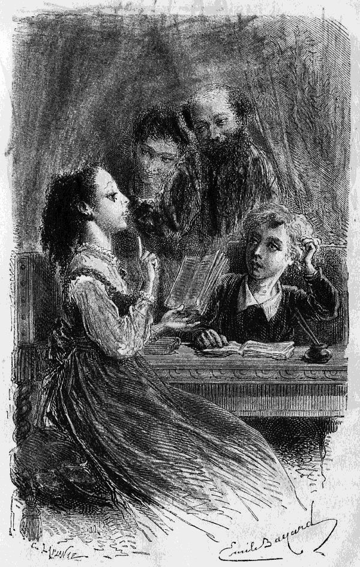
Meu filho! (Pag. 8.)
Era uma boa mulhersinha, bem activa, um pouco impertigada, mas muito bondosa
e inteiramente dedicada á familia, e á casa. Estava alli havia tanto tempo que
ninguem{9}
{10}
{11} fazia idea do que seria Valneige sem Rosinha, nem Rosinha sem
Valneige.
A boa da velha tinha conservado as saias curtas d'outro tempo, as toucas chatas com folhos encanudados, o lenço do pescoço branco com flôres vermelhas, emfim o que ella chamava o trajo da sua terra. Rosinha era de uma tal exactidão que chegava a ser minuciosa; conhecia a hora pelo cantar do gallo, pela sombra das arvores, pelo grito das aves, pelas fraquesas de estomago que tinha em certos momentos, e pelas caimbras nas pernas, que sentia um pouco mais tarde: era, por consequencia, d'uma inexcedivel exactidão no cumprimento de toda a regra estabelecida. Se Rosinha governasse o mundo, os que se queixam por elle andar torto tambem se queixariam; tão direito elle andaria!
Graças a este espirito de exactidão chamavam-lhe o relogio vivo de Valneige, e na realidade ter-se-hia bem dispensado o outro, que só sabia dar horas, como uma machina que era. Um olhar de Rosinha mandava para o trabalho os pequenos preguiçosos, que se entretinham na escada ás horas da lição; um gesto seu chamava do fim do parque os mais traquinas; emfim, nas circumstancias importantes, a sua voz imperiosa obrigava cada um a entrar no seu dever, fosse qual fosse a distracção presente.
Em vez de se dizer; o relogio vae dar horas;{12} dizia-se, Rosinha vae passar, e o regimento desfilava em boa ordem sem dar palavra. Os senhores de Valneige approvavam muito esta vigilancia que tornava mais facil a sua, e as proprias crianças, temendo um pouco os ares sérios que a velha sabia tomar, gostavam comtudo d'ella porque era justa, porque fazia os dôces, e porque era sempre ella quem da melhor vontade se prestava aos seus caprichos, comtanto que esses caprichos não se lembrassem de vir uma hora mais tarde ou mais cedo do que devia ser. O relogio primeiro do que tudo.{13}
CAPITULO II
Adalberto tinha um grande defeito.
Adalberto era um bom rapazinho, d'olhos vivos, sorriso fino, corpinho bem feito, delgado como uma gazella, habil, agil e capaz de todas as galanterias. Era dotado d'uma physionomia feliz, quer dizer, tinha, quando não era mau, aquella expressão de frescura e de amabilidade, que previne os estranhos a favor d'uma criança.
Todos eram bons com elle, todos tinham empenho em lhe dar gosto, e comtudo, quando se conhecia bem, via-se que tinha um grande defeito, um muito grande defeito... Era desobediente!{14}
Em vez de se lembrar que todas as pessoas que o rodeavam sabiam mais do que elle, tomava ares de sabichão, e suppunha que podia sem inconveniente fazer isto ou aquillo, tendo-lhe sido prohibido. Enganava-se com certeza, porque, mesmo quando não resulte nenhum prejuiso apparente, o mal da desobediencia é real, e vale a pena evital-o por causa dos grandes desgostos a que ordinariamente dá logar.
Já se viu um rapazinho que foge das vistas de seus paes? que vae justamente para onde não deve ir? que mexe n'uma e n'outra coisa, unicamente porque lh'o prohibiram? que só parece divertir-se bem nas horas destinadas para o trabalho? Se alguem viu um rapazinho, que se pareça com este retrato, pode dizer:—Era assim Adalberto.—Pobre Adalberto! Eu vou contar as suas terriveis aventuras; terriveis, sim, porque os cabellos se me põem em pé, quando penso nos perigos, que esta criança correu por se ter habituado a desobedecer.
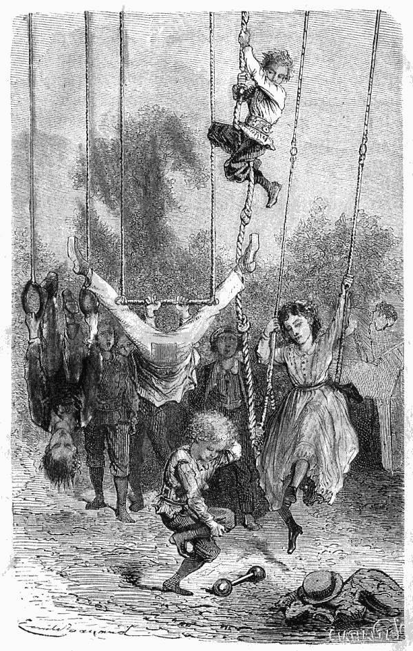
Havia um gymnasio. (Pag. 14)
E comtudo, dirão, havia muitos divertimentos em Valneige? Sim, havia muitos,
sem se alcançarem pela desobediencia. Podia-se correr de roda das casas, das
alamedas adjacentes e no pequeno bosque. Quando as crianças se mettiam nisso
andavam bem uma legua. Havia um gymnasio, onde o corpo se exercitava a ser agil
e desembaraçado; subiam{15}
{16}
{17} á escada de corda, balouçavam-se, divertiam-se; emfim Adalberto
tinha um gosto particular por este genero de entretenimento.
Mas, sobretudo, aquando se lhes juntavam os seus amiguinhos, era então que os pequenos se divertiam. Todos nós conhecemos estes divertimentos: põem-se em commum o bom humor, as invenções, as espertezas; faz-se d'isto um grande lote, e cada um participa d'elle sem prejudicar ninguem. Chega-se por este meio a novos resultados.
Em Valneige gostavam d'estas reuniões de crianças, e, como a visinhança o permittia, viam-se chegar na quinta feira de tarde tres ou quatro diabretes, que só queriam divertir-se. Davam-se então mil saltos, fazia-se um barulho de ensurdecer, e toda a especie de coisas muito innocentes, mas muito aborrecidas para o publico. Á quinta feira Rosinha tinha saudades da sua terra, da sua aldeia e até do seu berço, porque passava os seus ultimos annos a lamentar a desgraça de se ter dedicado com todas as véras da sua alma a estes travessos pequenos, dizia ella, que a faziam enraivecer, e que ella não deixaria por um imperio. Rosinha experimentava, como muitas vezes nos succede, duas sensações oppostas; por um lado a necessidade de se dedicar; por outro, a de lamentar, desde pela manhã até á noite, a sua dedicação. Quando qualquer d'aquelles queridos pequenos tinha algum desgosto, se{18} cahia, por exemplo, e esfollava o nariz, a velha chorava e curava-o o melhor que sabia, mas depois, zangava-se com aquelle mesmo nariz por se ter feito mal, porque era fazer-lhe tambem mal a ella.
«Ai! repetia ella muitas vezes, que desgraça ter eu conhecido estas crianças! Que precisão tinha eu quando morreu meu amo de ficar com o filho, para me fazer de fel e vinagre? Podia bem, com o que tinha, ir socegadamente para a minha terra, ter a minha pequena casa, o meu jardimsinho, as minhas gallinhas, o meu gato e as minhas commodidades. E em vez d'isto fico aqui! Mas para que? pergunto eu. Ah! é de mais; já é tempo de descançar; tenho parentes que me querem; a minha resolução está tomada, já o disse ao senhor, e, logo que a neve se derreta, metto-me na diligencia e vou-me embora.»
Isto dizia ella no inverno, mas quando a neve se derretia, se algum dos pequenos lhe perguntava: Então, Rosinha, quando parte? Respondia segundo as circumstancias: «Ora! o que quer? Frederico tem muitas dôres de dentes! é preciso que eu lhe ponha todas as noites no ouvido algodão com oleo de amendoas dôces. Pobre-pequeno!... ou:—Socegue, que me não faria rogar para me ir embora, se os dois mais velhos estivessem n'um collegio; mas emquanto estiverem em casa... ou:—Ah! logo que eu veja que{19} a menina Camilla anda bem direita, farei a minha trouxa; mas tenho tanto medo que fique defeituosa... ou então:—Assim que este marotinho d'Adalberto deixar de ser desobediente, vou-me embora; mas d'aqui até lá, preciso tomar conta d'elle como se fosse leite ao lume.»
Respondia assim a pobre velha, e a neve derretia-se, as arvores rebentavam, as folhas amarelleciam, cahiam, e Rosinha ficava, presa pelo laço mais forte que ha no mundo: uma antiga e verdadeira affeição.
Na quinta feira, isto succedia cincoenta e duas vezes por anno, Rosinha julgava mesmo que já não gostava de Valneige, nada, nada. Porque? Porque as horas não eram destinadas como de costume, e estava convencionado brincar-se desde o meio dia até ao jantar. Ora as brincadeiras são uma excellente occasião para se rasgar as calças e tudo mais, para se quebrar todas as coisas, até a cabeça.
Eis a razão porque a boa mulher passava toda a quarta feira a dizer:
«Que pena que ámanhã seja quinta feira!»
Nós, que não andamos atraz das crianças, podemos achar que taes brincadeiras são muito divertidas. A senhora de Valneige punha á disposição de todos raquetas, volantes, peões, ballões, pellas, arcos, e não sei que mais ainda!
Começava-se ao meio dia este alegre regabofe,{20} e a boa mãe apparecia de vez em quando como um poder protector, que faz todo o bem possivel e evita todo o mal, e dizia com a sua voz grave e meiga:
«Vamos, divirtam-se, façam, o que quizerem, só lhes peço uma coisa, obedeçam, meus queridos filhos.»
«Não tenha receio, querida mamã, dizia rindo o bom Eugenio, de cara esperta, faces rosadas, sorriso franco; veja, nós divertimo-nos tanto que nem tempo temos para desobedecer.»
Dito isto Eugenio tomava o freio nos dentes, se fazia de cavallo, ou dava estalos com o chicote, se fazia de cocheiro.
Apenas sua mãe tinha tempo de lhe deitar um olhar de confiança e já elle estava longe. Quanto a Frederico, a seriedade, que lhe era natural, mesmo quando brincava, socegava a senhora de Valneige. Mas havia um sujeitinho, loirinho e muito galante que nunca respondia á doce admoestação de sua mãe; chamava-se Adalberto, está entendido, e tinha por alcunha o desobediente. Quando uma palavra atacava o seu defeito capital, tomava um ar distrahido, tratava de apanhar uma mosca, arranjava as coisas de modo que ouvisse o menos possivel o que se dizia, e, comtudo, percebia-o muito bem.
«Obedecei, meus filhos.» Isto queria dizer; Não vão brincar para ao pé da agua, sobretudo{21} não mexam no bote. Não quero que vão á estrebaria sem serem acompanhados por Felippe, nem que passem por detraz dos cavallos, que podem atirar algum coice; que nenhum se lembre de querer montar a cavallo, a não ser que Filippe tenha tempo e condescendencia para se prestar a essa brincadeira. Não se debrucem do poço, nem saiam fóra da grade que separa o pateo da estrada, não corram para longe durante o passeio, nem se aproximem muito do moinho de vento, etc.
Adalberto sabia de cór estas prohibições e muitas outras. Quando ouvia sua mãe resumir tudo n'estas simples palavras: «Obedecei, meus filhos», quizera tapar os ouvidos com medo de perceber mais uma vez tudo o que se não devia fazer, pois era justamente do que elle tinha vontade, e veremos bem depressa o que em consequencia d'isso lhe aconteceu.{22}
CAPITULO III
Adalberto havia desobedecido
Quaesquer que sejam os encantos da vida quotidiana, dá sempre gosto quebrar a monotonia mesmo nos nossos prazeres. É facil imaginar os transportes de alegria, que houve na familia, quando o senhor de Valneige declarou um bello dia, ao almoço, que ia pôr em pratica um lindo projecto, formado havia muito tempo, e tão depressa aceito como combatido e adiado.
Esse plano reunia todas as condições para agradar, não só por ser encantador, mas porque era esperado com anciedade; havia um anno que os pequenos perguntavam uns aos outros{23} em voz alta ou em segredo: quando será a grande viagem, quando veremos Paris, Strasbourgo, Vienna, Praga? lagos, montanhas?... Bastava esta idéa para fazer dar um pulo na cadeira, mesmo quando se estava acabando uma pagina de escripta, o que dava em resultado um grande borrão.
Estava, finalmente, decidido; ia-se partir para a Allemanha; ia-se viajar com socego, sem fadiga, sem outro fim mais de que a instrucção sem livros e o divertimento. É verdade que a senhora de Valneige, que desejava particularmente esta viagem, tinha uma outra razão que não dizia; dava-lhe cuidado a saude de seu marido, e os medicos julgavam que o melhor remedio seria a mudança d'ar e da maneira de viver; esperavam combater assim uma especie de melancolia nervosa, de que soffria o senhor de Valneige, e que de tempos a tempos era acompanhada de crescimentos.
Sua extremosa esposa disfarçava, cuidadosamente, para não aggravar o mal, todas as suas inquietações. Quanto ás crianças, como seu pae não estava de cama e se vestia como toda a gente, achavam-no optimamente.
Quando se soube da decisão deram-se palmas ás palavras do querido pae, e quando elle disse:
Partimos d'aqui a oito dias; saltaram-lhe ao pescoço...
Oito dias depois estava a caminho toda a{24} familia; o fiel Gervasio, criado de confiança, acompanhava os viajantes e todos estavam contentissimos, excepto a velha Rosinha que tinha chorado boas lagrimas vendo partir os seus queridos filhos, como ella lhes chamava. Em os não vendo, julgava-os perdidos... pobre velha! se ella podesse adevinhar... mas não, não digamos nada.
Demoraram-se dez dias em Paris. As crianças admiraram sobretudo os passeios. A differença das idades e de instrucção fazia-se sentir na diversidade das apreciações. Por exemplo, em frente do palacio das Tulherias, Adalberto quasi que não olhava para o monumento historico, mas não se cansava de vêr os peixinhos encarnados que nadavam nos tanques, e os magestosos cysnes, cuja raça viu passar tantos acontecimentos, sem que por isso saiba a historia de França. Surprehendeu-o tambem muito o comprimento dos Campos Elysios, a multidão, as carruagens; mas o que sobretudo o impressionava, e d'uma maneira desagradavel, era a ordem, que lhe tinham dado, de não passear sem ir pela mão d'alguem. Isto pareceu-lhe insupportavel, e fez desmerecer consideravelmente, na sua opinião, os esplendores da capital. Pois elle tão independente em Valneige não teria vindo a Paris senão para ser tratado como uma pequenita? Que vergonha! um homem! Coitado! pobre pequeno! Se elle podesse imaginar... mas não, ainda não é tempo.{25}
Depois de ter visto em Paris o que mais podia agradar ás crianças, o senhor de Valneige tomou o caminho de ferro de Leste, e, parando sempre nas principaes estações, chegaram a Strasbourgo, onde admiraram a cathedral, esse grandioso monumento que attesta o desenvolvimento successivo da architectura gothica, desde a sua origem derivada dos cimbres até ao acabado que se nota na nave principal.
O grande relogio astronomico, cujas horas são marcadas por figuras, que apparecem e desapparecem; espantou e maravilhou os nossos viajantes muito mais do que o cruzeiro e a fachada. Quanto ao pequeno Adalberto, a despeito dos famosos architectos, e até de Vauban e da sua cidadella em pentagono, só viu em Strasbourgo uma unica coisa, o gallo que canta sobre a torrinha lateral, no momento em que o maravilhoso relogio dá meiodia e em que todos os apostolos apparecem juntos. Um gallo fingido e que canta como se fosse verdadeiro! é incrivel!
O pequeno ficou pois espantado, não propriamente de Strasbourgo, mas do gallo que para elle era tudo em Strasbourgo. Comtudo, esta bonita e magestosa cidade tinha tambem um grande inconveniente... era preciso andar pela mão!
Partiu-se para Vienna, parou-se pelo caminho, como se tinha feito de Paris a Strasbourgo. O senhor de Valneige tendo resolvido demorar-se{26} pelo menos oito dias na capital da Austria, houve tempo de vêr muitas coisas e de passear com vagar na grande alameda do Prater e n'outras mais. As crianças não se cansavam de admirar o que se chama o Prater selvagem, parte do qual é uma antiga floresta, onde pastam veados e cabritos montezes. Estes, lindos animaes, juntando as vantagens da vida domestica aos encantos da liberdade, ouvem, todas as noites o som da buzina, e dirigem-se para junto da casa de campo, onde os espera uma distribuição de ração.
Eugenio e Frederico achavam isto uma bella idéa, e tinham razão.
O chefe da familia levou seus filhos ao arsenal e fel-os visitar as differentes officinas, onde se fabricam armas. Passaram alli tres horas e decidiram depois seguir para S. Cyro.
A senhora de Valneige tendo mostrado desejo de conhecer os arredores de Vienna, seguindo em caminho de ferro a margem direita do Danubio, todo o rancho se pôz a caminho. Viu-se primeiro Schonbrunn, castello imperial, acabado no tempo de Maria Theresa. N'este castello nota-se o quarto onde Napoleão assignou o tratado de Schonbrunn em 1809, e onde vinte e tres annos depois, pela instabilidade das coisas humanas, morreu seu filho o duque de Reichstadt. Adalberto, pela sua pouca idade, reparou menos n'este contraste historico do que nas trinta e duas estatuas de marmore, que ornam{27} a linda fonte, que dá o nome ao castello, e sobretudo no leão e nos outros animaes que se vêem nas jaulas.
Visitaram tambem o castello de Luxembourgo. De todas as recordações austriacas, as que mais prenderam a attenção de Adalberto, foram as velhas carpas doiradas, que viu no lago, quando voltaram do castello para a estação do caminho de ferro; deu-lhes pão, que ellas se dignaram aceitar, como tinham feito os peixinhos encarnados das Tulherias. Vê-se que Adalberto era bem recebido não só em França mas na Austria.
Passaram-se rapidamente estes oito dias e os viajantes emcaminharam-se para Praga, parando sempre nas grandes estações. Adalberto deixou Vienna sem saudade; achava que havia na capital da Austria uma coisa muito aborrecida, um verdadeiro e muito grande inconveniente—era preciso andar pela mão. Não se pode fazer idéa do espirito de independencia d'este sujeitinho. Obedecer era para elle um supplicio. Pobre, pobre Adalberto!
Estavam todos muito contentes por entrar na Bohemia. Este nome, dizia Camilla, tinha seu que de extraordinario, de interessante e mesmo um pouco de assustador; parecia-lhe que n'este paiz só devia haver gente, que lêsse a sina e deitasse as cartas.
O senhor de Valneige, que não perdia occasião de instruir seus filhos, contou-lhes em{28} poucas palavras a historia d'aquelle terreno elevado, que está como fechado por uma cinta de montanhas e cortado pelas ramificações das mesmas montanhas.
Ensinou-lhes a não confundir os Ciganos com os Bohemios. Estes são os habitantes do paiz, que vivem como todos nós; os Ciganos, aos quaes tambem algumas vezes se chama Bohemios, formam um povo á parte, que conserva os traços caracteristicos de uma nação errante, que no seculo quinze se espalhou pela Europa, e principalmente na Hungria, na Italia, em França, e em Hespanha. Ha d'estas tribus nomadas em todas as nações; o nome muda, mas os costumes não. Em França chamam-lhes Bohemios; em Hespanha Gitanos; em Italia Zingari; em Inglaterra Gypsies; em Portugal Ciganos.
Este povo offerece um espectaculo muito singular no nosso velho mundo: desprezado, perseguido durante trezentos annos, e, apezar d'isso, sempre de pé, sempre errante, roubando por onde passa e lendo o futuro. Percebe-se que justamente pelos seus exquisitos costumes casem entre si, e assim se prepetua esta raça independente, temida não sem razão, e vivendo no meio do povo sem nunca se misturar com elle, a não ser para lhe recitar as suas loucuras e embustes, divertil-o um momento e tirar d'elle o pouco de que precisa para prover as suas mui limitadas necessidades. Comtudo, em certos paizes, os Ciganos não são errantes; os{29} de Hespanha, os Gitanos, habitam em Cordova e Sevilha bairros separados; mas fallam em toda a parte a mesma lingua; esta lingua é doce e harmoniosa, e deriva do slavo.
É notavel o profundo respeito que estes homens independentes teem ao seu proprio chefe. A sua teima, a sua obstinação cede ante a authoridade d'aquelle que os governa, e é preciso convir que, ao menos n'isto, são melhores do que nós.
Julga-se que a sua origem remonta aos antigos Persas, que vieram estabelecer-se no Egypto, quando Cambyses, o indigno filho de Cyrus, se apoderou d'aquelle lindo paiz; sabe-se que o conseguio servindo-se de cães e gatos, que pôz na frente do seu exercito, e sobre os quaes os Egypcios não ousaram lançar frechas, porque, a seus olhos, estes animaes eram sagrados. É a favor d'essa opinião, sobre a origem d'este povo, a physionomia bella e expressiva da maior parte dos Ciganos, que faz lembrar o typo persa. Certos cantos antigos, que se teem conservado n'esta raça, fazem tambem suppôr, que o Egypto os viu antigamente; entre outros uma especie de cantiga em que celebram as bellezas do Nilo e lhe enviam saudosos queixumes.
Os ciganos são geralmente fortes e bem feitos e dotados d'uma grande flexibilidade de corpo. As mulheres teem a cintura delgada, flexivel, os movimentos graciosos, e, devemos dizel-o em seu louvor, tem persistido entre{30} ellas, apesar de serem semi-selvagens, um respeito admiravel pela sua honra: são notaveis, sobretudo em Hespanha, pela severidade de seus costumes.
Eil-os pois na Bohemia, os nossos viajantes.
Praga encantou-os pelas suas casas todas com terraços; tanto nas planicies como nas collinas, pelo seu palacio real, torres, mirantes, campanarios, e pelas alturas que dominam as duas margens do Moldau.
Esta vista é realmente d'um effeito surprehendente, e, quando nos achamos em frente d'estas bellezas, sentimos quanto se está longe do Sena, o que sempre agrada aos francezes que viajam, apezar de regressarem ao seu paiz com verdadeira alegria.
Adalberto estava sobretudo enlevado por não perceber nada da conversa dos passeantes quando passava por elles. Mais de metade fallava bohemio e os outros allemão.
«Estou contente, dizia este homemsinho, meio a sério, meio a rir, estou contente porque viajo em paiz estrangeiro.»
Mais uma razão para andar pela mão,—respondia Camilla que, por instincto feminino, participava da constante inquietação de sua mãe a respeito do pequeno desobediente. Mas, por mais que dissesse, elle não fazia caso, e era preciso uma ordem bem positiva de seu pae ou de sua mãe para o obrigar a dar a mão;{31} mesmo assim escapava-se muitas vezes para vêr isto ou aquillo, e estas maldades causavam uma especie de pequena guerra, na qual as armas nem sempre eram cortezes.
A vista da ponte dos dezeseis arcos lançada sobre o Moldau chamou a attenção dos nossos viajantes. Com effeito, com as suas torres antigas, suas estatuas de pedra e as suas sanguinolentas recordações, parece um velho guerreiro, que defendeu bem a sua bandeira. Como se poderia deixar de prestar homenagem á estatua de bronze d'aquelle nobre padroeiro da Bohemia, generoso martyr do segredo inviolavel da confissão? Tomou-se cuidado em indicar a todos os seculos o lugar exacto onde o padre, para não perder a alma, antes quiz perder o corpo do que faltar ao segredo do sacramento. Foi afogado no Moldau pela barbara ordem do Imperador Wencesláu. Os christãos do seu tempo admiraram-n'o e os de hoje vão ainda todos os annos aos milhares, no dia do anniversario do seu supplicio, vêr este sitio do Moldau, que recordará sempre S. João Nepomuceno.
Visitaram o bairro occupado pela nobreza bohemia, e toda a parte da cidade que limita ao norte o palacio archiepiscopal. Depois foi-se vêr a cathedral. O senhor de Valneige, que tinha visitado alguns annos antes a de Colonia, achou grande analogia entre estes dois monumentos, que datam um e outro do seculo decimo quarto.{32} A cathedral de Praga é muito mais vasta; por isso o senhor de Valneige dizia rindo que os dois templos lhe faziam o effeito de dois gemeos, dos quaes um tivesse crescido mais do que o outro. Foi com grande devoção que a senhora de Valneige fez ajoelhar seu filho mais novo deante das reliquias de Santo Adalberto, que estão na pequena capella octogona da entrada. Pobre mulher! emquanto que o pequeno distrahido, como se é n'aquella idade, olhava para a direita e para a esquerda, ella, inclinada sobre a sua cabeça loira, orava commovida, como se presentisse a desgraça que ia ferir-la...
Na nave da cathedral, admiraram o mausoleo real, de marmore e alabastro, que data do fim do seculo dezeseis, e sob o qual teem vindo por sua vez repousar os grandes da terra.
Uma bala de artilheria suspensa por uma cadêa a um pilar e cahida n'esta Igreja durante a guerra dos sete annos, excitou a attenção de Eugenio e de Frederico, e mesmo a do seu atrevido e pequeno irmão. Camilla aproveitou a occasião para dizer mais uma vez que detestava a guerra, que era uma coisa abominavel; e o terno olhar de sua mãe encontrou o d'ella.
Em presença de taes recordações bellicosas é natural ao homem pensar na gloria, mas a mulher pensa no soffrimento; é que a sua missão não é a mesma: a um cabe-lhe defender; á outra consolar.{33}
Desde o primeiro dia, a familia percorreu a cidade de Praga, para ter d'ella uma idea geral, fazendo comtudo tenção de se demorar ao menos uma semana, depois da qual se pensaria na volta. A estação ia adiantada, fazia já frio, os dias eram pequenos, era preciso regressar ao seu paiz e ao seu lar, thesouro do rico e do pobre.
Á noitinha, o senhor de Valneige, só com seus filhos (porque as senhoras estavam cançadissimas), fez uma excursão ao bairro de Carolinenthal, ao nordeste de Praga. Este sitio é o centro d'uma grande actividade industrial. Era a hora em que uma multidão de operarios sahia das fabricas: o espectaculo d'esta população laboriosa enchendo as ruas direitas e bem construidas era curioso d'observar; o senhor de Valneige fazia-o notar aos dois mais velhos, e Adalberto, durante este tempo, reparava, como fazem todas as crianças, para os incidentes do caminho: um cavallo que cahe, um cão em que batem. Quando sua mãe e sua irmã não estavam presentes tinha um pouco mais de liberdade; seu pae não pensava sempre em lhe fazer dar a mão, ainda que esta recommendação tivesse sido terminante desde que andavam viajando. Quanto a seus irmãos, confessavam baixinho que esta ordem, cheia de razão, devia ser muito aborrecida, e, por consequencia, eram muito desleixados sobre este artigo da lei. Adalberto, n'essa tarde, estava{34} mais do que nunca tentado a desobedecer; cedeu á tentação e ficou de proposito para traz, emquanto seu pae estava distrahido, e mostrava a seus filhos um vasto quartel, onde cabe um regimento completo.
Havia n'este sitio um homem que vendia passaros; era muito mais divertido do que o quartel; Adalberto parou:
«Como são bonitos! oh! este encarnado! E este verde! oh! que bonitas pennas!»
Infelizmente dois lindissimos passarinhos acabavam de declarar guerra um ao outro; o nosso futuro militar, sem ter estudado a questão politica do momento, tomou o mais vivo interesse no combate. Um tinha uma pôupa, o outro não; pareciam de força, eguaes, e, como nenhuma potencia estrangeira intervinha, o negocio podia durar muito tempo e custar a vida a um dos combatentes, talvez a ambos. Não era preciso mais para encantar o nosso pequeno official; declarou-se inteiramente pelo de pôupa, e poz-se a julgar gravemente as bicadas que choviam sobre o campo da batalha. A pôupa foi por um momento victoriosa, mas, não tendo sabido conservar a defensiva, tornou-se victima d'uma retirada simulada e ficou litteralmente vencida, porque cahiu, coitadinha! sobre a areia fina da gaiola, e Adalberto, lembrando-se de repente, em vista d'esta gloria decahida, que tinha ficado sósinho, afastou-se precipitadamente do lugar da tentação.{35}
O vendedor, porém, occupava a entrada d'uma encruzilhada; qual das ruas tomar? O pequeno seguiu pela da direita, e, não avistando logo seu pae e seus irmãos, voltou pára traz e entrou n'uma rua proxima, sem comtudo ter melhor exito. Quiz então dirigir-se aos que passavam para lhes perguntar o caminho... Mas como? Chegado n'aquella manhã nada notou e não se lembrava mesmo do nome difficil, que tinha o seu hotel. N'este embaraço interrogava os operarios das fabricas que, mais felizes do que elle, voltavam para suas casas; esta boa gente não o comprehendia. Lembra-se com verdadeira inquietação, que está n'um paiz estrangeiro, perfeitamente estrangeiro! Aperta-se-lhe o coração, tem vontade de chorar e não póde; anda, anda até que emfim, morto de cansaço, encontra um homem d'uma estatura elevada, que repara muito n'elle, se aproxima e lhe falla baixo em mau francez. Este homem ouve a sua resposta, e vê-se a criança olhar para elle com confiança e dar a mão ao desconhecido, que o leva depressa, depressa, depressa.
Durante este tempo o senhor de Valneige, victima d'uma horrivel inquietação, percorria as ruas adjacentes; teria logo achado Adalberto, se este não tivesse tomado uma direcção completamente opposta. O desgraçado pae ia, vinha, procurava. Seus filhos ajudavam-no com uma{36} anciedade facil de comprehender. O senhor de Valneige sabia pouco allemão, apenas o necessario para as necessidades previstas de qualquer viagem; mas que difficuldade para fallar doutra coisa e sobretudo para trocar com rapidez estas meias palavras, que podem fazer encontrar uma criança perdida! Á força de inquietação quiz acreditar que seu filho teria sabido fazer com que o conduzissem ao hotel, onde estaria tranquillamente sentado entre sua mãe e sua irmã. Encaminharam-se para o hotel a passos largos e em silencio.
Uma vez chegados o senhor de Valneige não ousou subir a escada; não sabia como havia de apresentar-se diante de sua mulher... Ella levantou-se quando seu marido, pallido e transtornado, abriu a porta do quarto, e, comprehendendo a pergunta antes de lhe ter sido feita, respondeu com a expressão d'um desespero subito; «Perdeu-se!»
Ha momentos na vida, que não podem descrever-se. É preciso ser pae, é
preciso ser mãe, para se fazer idéa da dôr profunda, immensa, causada pela
desapparição d'um filho, quando não foi Deus que o arrebatou do lar paterno. Ao
menos aquelles que o vêem morrer, sabem onde devem procural-o pela lembrança;
todo o desgosto é para os que ficam, mas elle não póde soffrer; seus paes
sabem-no bem e as suas lagrimas não são sem consolação; mas perdido, e perdido
sobre a terra! sobre {37}
{38}
{39} a terra onde ha o mal e os malvados... oh! é horroroso.
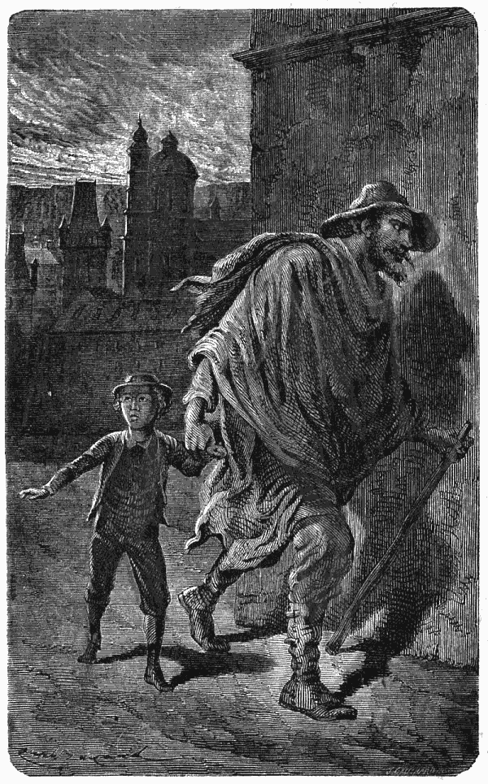
Dá a mão ao desconhecido que o leva depressa. (pag. 35.)
Sem se deixar succumbir um só instante, o senhor de Valneige, acompanhado de Gervasio, tornou a percorrer a cidade; apoderou-se d'elle uma especie de febre, que o impedia de sentir o cansaço, e o bom Gervasio suspirava, pensando no pobre pequeno, que vira nascer.
O senhor de Valneige apressou-se a recorrer ás authoridades.
Ah! como aquelle desgraçado pae sentia o coração afflicto, quando descrevia os signaes exteriores, que podiam fazer reconhecer seu filho; era loiro, a pelle branca e rosada, uma covinha por baixo da face esquerda, a barba um poucachinho dividida, os olhos castanhos e vivos, uma voz argentina como a de uma rapariga, o que contrastava com os movimentos d'uma bravura inteiramente masculina. A sua figura era, quando muito, d'uma criança de sete annos, apesar d'elle ter perto de oito.
Trajava um fato de panno azul escuro e um collarinho liso, que no momento de sahir tinha sujado de tinta, um pequeno borrão apenas visivel na parte de diante do lado esquerdo. Ao pescoço tinha suspensa, desde o baptismo, uma medalha de oiro, representando a Santa Virgem, com os braços abertos e a cabeça inclinada. Tinha-lh'a dado sua mãe, pedindo á Rainha do Céo que o livrasse do peccado e da morte, em quanto ella fosse viva. Pobre mulher!{40} tinha perdido o seu filho querido, o seu filho mais novo! Pode ser, oh! pode ser que fosse levado por homens crueis, que o fariam participar d'um viver miseravel, que maltratariam o seu corpinho, e que tentariam perverter sua alma innocente com maus exemplos e blasphemias. A esta idéa, que não a deixava, a mãe sentia-se desfallecer. Teria preferido antes vel-o morrer sob as suas vistas do que entregue a gente infame, que faria da sua infancia um longo martyrio, e que talvez o encaminhasse na senda do vicio.
O Senhor de Valneige, completamente desanimado, voltou para o hotel; ninguem tinha visto a criança; nenhuns esclarecimentos se tinham obtido; continuava o mysterio mais profundo sem se saber o que se havia de dizer nem pensar a tal respeito. Iam empregar-se todos os meios possiveis para descobrir Adalberto: mas para os desgraçados paes só restava esperar. Esperar quando se ama um filho mais do que a si mesmo, esperar sem saber se elle ainda respira, se soffre, se chama, esperar n'estas condições, é morrer todos os dias! Passou-se uma semana, uma outra, ainda outra; um mez, dois mezes, tres mezes, nada... Nenhum indicio, nenhuma esperança proxima. Foi preciso voltar para França, depois de se ter estabelecido todos os meios possiveis de correspondencia com Praga; mas toda a gente estava convencida de que o pequeno tinha sido levado{41} para longe, e que só um acaso providencial o poderia fazer achar.
A primavera voltou, Valneige readquiriu a sua belleza, frescura; os passaros cantavam, tudo se reanimára no campo, e só tres corações bem infelizes não quizeram tomar parte n'esta felicidade. Uma velha agitava-se, inquieta, perturbada, irascivel, accusando todos de negligencia, e accusando-se a si mesma de não ter sabido prever e impedir o mal; era a pobre Rosinha, que tinha emmagrecido por causa d'isto! Um homem tinha-se tornado grave e sombrio; já não tinha animação; a melancolia da doença, a que era sujeito, tinha-se tornado o seu estado habitual; os seus negocios estavam descurados, os seus planos futuros abandonados, temia-se que a sua saude, já muito melindrosa, se alterasse profundamente; era o pae. Uma mulher ia e vinha vagarosamente, tratava de seu marido, de seus filhos, da sua casa e dos pobres; mas no seu coração não entrava alegria; tudo n'ella era triste, até o bondoso sorriso com que acompanhava as suas acções para esconder a sua pena; uma energia verdadeiramente christã era o que fazia com que essa mulher não descurasse o mais pequeno dever. A sua vida era uma continua oração. Pensando, girando, andando, chamava! Chamava seu pobre filho por todas as aspirações do seu coração, pela sua coragem, pela sua dedicação, pela sua caridade para com os{42} desgraçados, com todas as véras da sua alma. E á noite, chamava ainda mais por elle, e as suas lagrimas corriam com uma amarga esperança; e ao pé do altar, quando estava só com Deus, não podendo abafar os soluços, dizia unicamente, sabendo que o Senhor a comprehenderia:
«Meu Deus! Adalberto!»{43}
CAPITULO IV
Adalberto estava bem longe.
Na aldeia tudo é um acontecimento, até a gallinha que canta como o gallo, e que logo é condemnada á morte porque isso se toma por agouro. Póde imaginar-se o effeito, que produziu em Valneige o desapparecimento do pequeno Adalberto.
Não se fallava d'outra coisa e não tinham fim as conjecturas, nas quaes havia uma parte maravilhosa, devida á credulidade e superstição d'aquella boa gente. Um dia veio uma mulher ter com Rosinha e disse-lhe: «Ouça, senhora Rosinha, olhe que o seu pequeno não está perdido.»{44}
A estas palavras, a velha criada levantou os oculos até ao meio da testa, o que para ella era uma maneira de vêr melhor. Se lhe tivessem dado o conselho de os fechar n'uma gaveta não teria querido. Havia quinze annos, pelo menos, que usava oculos, e punha-os no nariz logo de manhã. Pelo dia adiante, servia-se d'elles para ir ao jardim, para subir e descer a escada; mas quando se tratava de dar attenção, de distinguir as côres ou as physionomias, bem depressa os oculos subiam para o meio da testa. A pobre mulher queria-lhes tanto como aos seus proprios olhos.
A Tia Godinette puxou uma cadeira porque o discurso promettia durar.
—Pois é verdade, senhora Rosinha, vou dizer-lhe uma coisa, que ainda não disse a ninguem.
Todos os discursos de Godinette, que fallava muito vagarosamente, começavam do mesmo modo, e sabia-se até que ponto se podia contar com a sua discrição. Quando a boa da mulher não dizia os seus negocios a toda a gente, era porque estava só.
—Ouça, senhora Rosinha, aqui tem o que me succedeu, a mim que lhe
estou fallando. Sonhei a noite passada... Primeiro devo dizer-lhe que me doíam
as pernas, mas doíam-me como nunca. Olhe, era exactamente nas barrigas das
pernas, como uns canitos que me mordessem. Eu dava voltas na cama, como um{45}
{46}
{47} frito na frigideira, e esfregava, esfregava... é necessario sempre
esfregar quando doem as pernas; ás vezes é o sangue que pára. Diga-me uma
coisa, senhora Rosinha, o que faz quando lhe doem as pernas?
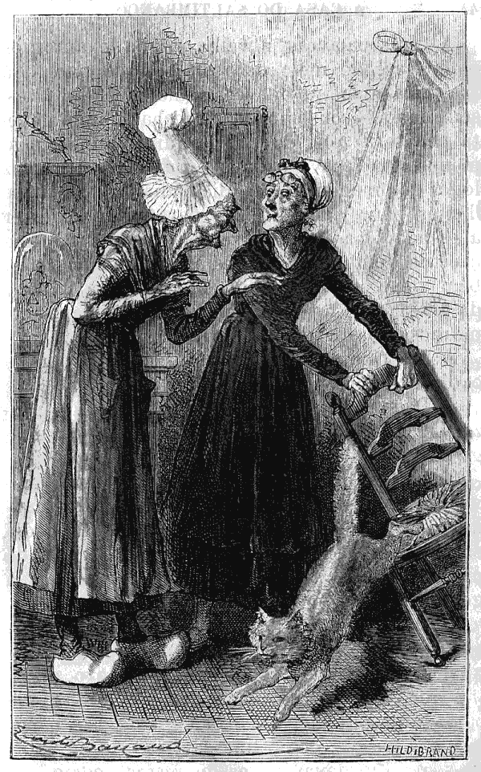
O seu pequeno não está perdido. (pag. 43.)
—Ora essa! esfrego. Mas vamos, vamos á historia.
—Eil-a; emquanto eu estava ás voltas na cama, disse commigo: que horas serão? Deve ser tarde, com certeza. Estou convencida que é mais de meia noite; não sabia as horas, eu, e quem não sabe, a senhora Rosinha ha de ter ouvido dizer, é como quem não vê. N'isto ouço dar horas na freguezia. Ponho-me a contar pelos dedos, uma duas, tres, quatro, cinco, seis, sete, oito, nove, dez...
—Onze, doze, accrescentou precipitadamente Rosinha que estava sobre espinhos.
—Justamente, dez, onze, doze. Olhem como adivinhou! É fina como um coral.
—Vamos lá, dizia que o nosso pequeno...
—Espere, senhora Rosinha, isto não vai a matar.
—É que assim temos para peras.
—Então, quando eu vi que era meia noite, disse commigo: ora esta! julguei que era mais tarde. A noite foi feita para dormir, toca a dormir. Tanto peior para as minhas pernas! Custou-me a pegar outra vez no somno; muito me custou! Abria os olhos, fechava-os, tornava{48} a abril-os, tossia, assoava-me, cuspia, esfregava-me, era um nunca acabar!
—E depois!
—Acabei por adormecer, e sonhei que passeava n'um lindo jardim, onde havia um grande tanque, mas grande, grande, como não é possivel, como ás vezes a gente sonha; a tia Rosinha sabe.
—Sim, sim, e depois tia Godinette?
—Depois? era comprido o tal tanque, mas comprido como d'aqui á cruz da estrada. Que digo eu?... Como d'aqui ao... ao...
—Ao fim do mundo. Ande lá tia Godinette.
—Justamente! sempre tem idéas! Vi então do outro lado do tanque uma raposa. É verdade, uma raposa e ao mesmo tempo o seu menino, que tinha á cabeça um cesto, vossemecê bem sabe, d'estes cestos em que se põe...
—Sim, sim, estou a vêl-o.
—Está mesmo a vêl-o, não é assim? Mette-se nos taes cestos, mette-se...
—Mette-se tudo o que se quer.
—Tem vossemecê rasão. Com effeito, sendo um cesto, mette-se-lhe o que se quer. De mais no fim de contas, isto não faz nada para a minha historia.
—N'esse caso saltemos isso, quer?
—Depois, elle vê a raposa, tem medo, deixa cahir o cesto, e prega comsigo no tanque de cabeça para baixo.{49}
—Coitado do pequeno!
—Qual pequeno? Foi o cesto.
—Ah! bom! mas vossemecê dizia de cabeça para baixo.
—Era a brincar. Eis que a raposa vem ter commigo com uma pata no ar. Pobre animal! Foi talvez ferida por algum caçador... ah! a proposito de caçador, vossemecê sabe?
—O que?
—Dizem que ha dois caçadores, que vinham no outro dia pelo matto e encontraram um cão vadio, que mordeu os cães que os acompanharam.
—Pobres animaes!
—Que está a dizer senhora Rosinha? Dos homens é que eu fallo.
—Ah! então pobres homens!
—Mas tambem mordeu os cães.
—Pois sim, pobres homens e pobres cães. E o pequeno?
—Espere ahi. Viu-se então na escuridão uma grande bola amarella como uma pequena lua, que corria o mais que podia no céo; chamam-lhe um metaloro... um metoro... não sei bem o nome, mas isso nada faz ao caso.
—Felizmente; mas o que tem a bola com o nosso pequeno?
—O que tem? Está bem claro. Uma bola amarella que corre no céo, não é qualquer coisa. E depois, ouça mais esta, ainda não acabei: como elle andava para traz, a raposa...{50}
—O que! ainda a raposa! Tornamos outra vez ao sonho?
—Mas com certeza; a raposa é brincadeira.
—E o cão damnado?
—Esse é sério.
—Ah! peior é essa.
—Então a raposa...
—Olhe, faça-me o favor de deixar a raposa aonde está; fallemos antes do nosso pequeno loirinho. Diga-me o que sabe d'elle.
—D'elle? Ora essa! não sei nada d'elle. Que quer vossemecê que eu saiba d'elle? Não o perderam na Allemanha?! Mas é o mesmo; podem dizer que está longe; quando se vêem signaes no céo, pode-se estar certo que o pequeno não está perdido.
Estava-se n'este ponto de tão insipida conversa, quando o senhor de Valneige passou, sempre pensativo e inquieto; reparou no ar azafamado da tia Godinette, e a fiel Rosinha, notando a sua preoccupação, julgou dever repetir-lhe as palavras da boa mulher, saltando a parte da insomnia, do relogio, das pernas e da raposa. O amo respondeu com tristeza que não havia, infelizmente, relação alguma entre este meteoro e a pobre criança; que o facto de que se tratava nada tinha de prodigioso, sendo devido a um phenomeno atmospherico muito conhecido, e sobre o qual eram desarrazoadas as suas superstições. Godinette um pouco despeitada, mas nem por sombras{51} convencida, fez a sua mesura e foi contar a outros o seu sonho e a sua bola amarella.
Quanto á boa Rosinha, vendo terminada a conversa, desceu tranquillamente os seus queridos oculos sobre o nariz e continuou a fazer meia.{52}
CAPITULO V
Adalberto sabe emfim até onde pode levar a desobediencia.
Em quanto a familia de Valneige estava triste e consternada, em quanto se procurava por todos os lados, em Praga e nos arredores; onde estava o querido pequeno Adalberto? Ninguem o sabia, excepto a infame creatura que o tinha roubado ao amor de seus paes. Habituada a desobedecer, não podia mais tarde ou mais cedo deixar de succeder grande desgraça áquella criança. No dia em que desapparecêra, havia desobedecido oito vezes! e como ninguem tinha dado por isso, não fôra castigado. Deus vê tudo que os paes e as mães não vêem; foi Elle quem se encarregou de{53} castigar por uma vez, com um castigo terrivel, todas as desobediencias que o rapazinho commettera, desde que sabia o que fazia; e bem cedo tinha elle tido intelligencia.
Eis aqui como as coisas se passaram: Perdemos de vista Adalberto, no momento em que um homem d'uns cincoenta annos, embrulhado num capote de lã grossa, o levou, depressa, depressa, depressa... Este homem tinha, é verdade, cara de poucos amigos, e o olhar sombrio; mas fallava um pouco francez. Na sua grande afflicção, a criança, que não suspeitava uma traição, seguiu-o em silencio. Andou muito tempo, tanto tempo que as suas perninhas fraquejaram, e que de repente, desanimado pela fadiga, pelo medo, pela fome e pelo sangue frio d'aquelle que o conduzia começou a chorar.
«Tu choras?» disse-lhe o desconhecido com um tom de falsa bondade, e, repetindo-lhe que sabia onde estavam seus paes, e que os iam encontrar, o homem trigueiro, do qual um grande chapeu escondia quasi toda a enorme cabeça, fêl-o entrar em uma casa suja e meia escura, onde lhe disse que esperasse um instante. A criança estava morta de fome e de sede; o desconhecido fêl-a comer e beber, beber, beber tanto, que, sob as vistas do malvado, o querido pequeno sentiu-se como sobrecarregado por um peso extraordinario; os olhos fecharam-se-lhe, já não{54} tinha medo; uma especie de indifferença e quasi de bem estar succedêra a toda a emoção triste... emfim, adormeceu profundamente. Era o que o homem do chapeu grande, tinha preparado; e tomando nos braços a sua innocente victima, dirigiu-se precipitadamente para a estação do caminho de ferro, deixando a cidade, e tendo o cuidado de embrulhar Adalberto no grande capote de lã, afim de o fazer passar por uma criança doente.
Desde então, o que succedeu? Onde foram? O pequeno dormia; quando, sahiu d'esta especie de lethargo, não obteve resposta alguma ás suas perguntas, e viu passar na sombra uns homens que se pareciam com aquelle que o levava. Estava morto de susto. Depois de mil voltas avistou uma grande carruagem, uma especie de casa ambulante, tendo janellas com taboinhas: o homem trigueiro deu uma grande pancada na porta, e disse algumas palavras na lingua particular dos Ciganos; depois, com uma mão de ferro, agarrou o pequeno francez, e levantou-o: um rapaz abriu a porta fazendo chacota, e Adalberto achou-se no meio de um corredor estreito, que dava communicação para miseraveis compartimentos... a que chamavam quartos.
Uma mulher muito velha, feia, negra, e secca, dirigindo-lhe a palavra em mau francez, fallou-lhe como ordinariamente se falla aos cães. Elle não comprehendeu bem; desejou sómente{55} descer os degraus que acabava de subir para entrar na carruagem: mas a porta tinha-se fechado. O pequeno imprudente olhou para a velha e disse-lhe imperiosamente:
—Abra!
—Não, não, não, respondeu a terrivel velha; uma vez que se sobe é para sempre.
—Para sempre? repetiu Adalberto com indignação, e, comprehendendo o horror d'estas palavras, levantou os braços e começou a gritar!
Uma mão suja, horrenda, decrepita, collou-se-lhe sobre a bocca, em quanto aquella furia soltava horrorosas blasphemias.
A criancinha estava cheia de susto sem saber o que havia de pensar: era como a destruição completa de toda a sua vida, e, não só por medo como tambem por surpreza, perdeu os sentidos.
Quando fechou os olhos, a mão suja e má, que o tinha obrigado ao silencio, despregou-se-lhe dos beiços; mas, aquella mão, como se estivesse resolvida a fazel-o soffrer, foi buscar um pucaro d'agua bem fria e deitou-lh'a sobre a cara. O querido pequeno abriu os olhos, olhou de roda de si como para procurar sua mãe, e disse lavado em lagrimas e muito humildemente:
—Senhora, deixe-me voltar para casa da mamã, se faz favor.
Uma gargalhada formidavel acolheu esta supplica{56} de criança, e, juntando a ironia á crueldade, a velha Praxedes exclamou:
—Vai para casa de tua mamã, vai, corre, anda vai!
O prisioneiro viu bem que tudo estava acabado, que o crime estava consummado; que o tinham roubado!
A velha furia, que parecia uma bruxa, era a sogra do homem do chapeu grande, a avó, não de Gella, a filha do amo, mas de seu irmão Karik, e o chamado Mentor de duas pobres crianças, Natchès e Tilly, um pequeno e uma pequena, cahidos como Adalberto nas mãos dos ladrões. O desgosto do captivo foi tão profundo, que cessou de se queixar achando-se horrivelmente desgraçado.
Dotado de grande força moral, a sua dôr tornou-se em desespero, e inspirou-lhe a firme vontade de se evadir: mais tarde ou mais cedo.
Tinha uma incrivel energia, e ainda que o seu corpo fosse magro e pequeno, sentia-se capaz de vencer grandes obstaculos. Por em quanto nada havia a dizer nem a fazer.
«Se estás doente, deita-te,» disse-lhe bruscamente a velha Praxedes, mostrando ao recem-chegado um monte de trapos e de fato velho no canto do seu horroroso quarto. Elle não esperou que lh'o repetissem, julgando, com rasão, que o melhor era obedecer. Como não lhe deram cobertores não se despiu; estendeu-se sobre os trapos, tendo o cuidado de puxar{57} para os pés alguns pedaços de fato velho para evitar o frio, e pôz a mão debaixo da cara para não se encostar a esses farrapos.
Uma vez deitado, fechou os olhos, não fez movimento algum, e bem depressa o julgaram a dormir. Não percebeu uma só palavra do que se dizia, porque os Ciganos entre si só fallam o seu dialecto; comtudo julgou vêr que Gella mostrava benevolencia para com elle e que tratava de apaziguar a colera de sua avó. Quando a rapariga fallava alto, tinha um som de voz que o habito de gritar ao ar livre tornava duro; e em geral tinha modos d'homem. Adalberto, que de vez em quando abria um olho, podia vêr aquelle todo atrahente.
Gella tinha vinte annos, era bonita, mesmo com os seus vestidos pobres, mas d'uma belleza um pouco selvagem; estatura elevada, flexivel como um vime, os movimentos bonitos, a cara queimada pelo sol, os cabellos pretos com reflexos azulados; a bocca bastante mal desenhada, mas franca e com um sorriso de bondade; os olhos doces quando estava socegada, atrevidos quando se tratava de resistir, muita força de corpo e de bondade.
Era filha do homem do chapeu grande e da sua primeira mulher, que tinha morrido logo depois do nascimento de sua filha. O Cigano, contra os costumes da sua raça, tinha{58} casado com ella por capricho, apesar de não ser Cigana, mas uma pobre rapariga de Lyão. Achava-se orphã e na miseria; e a miseria e a inexperiencia dos dezeseis annos tinham-na levado a aceitar esta exquisita união; uma irmã mais velha, não deixando de a condemnar, interessava-se comtudo pela criança nascida d'aquelle imprudente casamento, e dava de tempos a tempos uma lembrança a Gella.
Assim como era, esta robusta e trigueira rapariga produziu no prisioneiro uma impressão de temor e de confiança. A maneira de fallar depressa, os olhos tão pretos, as sobrancelhas carregadas, tudo isto o intimidava; e, comtudo, aquelles lindos braços deviam ser carinhosos; era impossivel que uma criança infeliz se lançasse n'elles sem que a rapariga a apertasse contra o coração, porque, emfim, devia ter um coração.
Adalberto tinha tanta necessidade de o acreditar que dava esperança a si proprio, e disse comsigo:
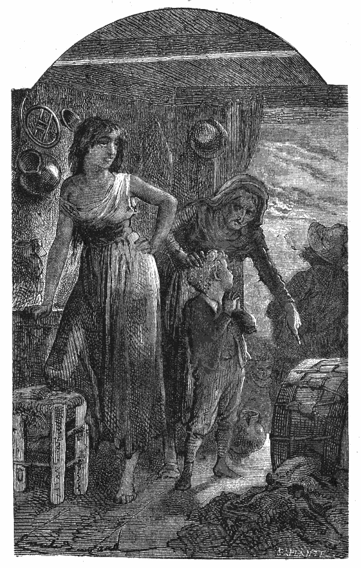
Gella tinha 20 annos. (Pag. 57.)
—Um dia dir-lhe-hei que me quero ir embora, e ella ha de consentir em
me deixar fugir. Se não deixar, fugirei sem ninguem me ajudar... Depois
lembrava-se das suas caminhadas em Praga, e da difficuldade que se encontra
quando se não sabe para onde se deve ir e quando não se falla a mesma lingua da
outra gente. Este primeiro dia passou-se{59}
{60}
{61} pois n'um profundo desgosto. O mau vinho tinha-lhe feito tanto mal
que elle não quiz comer. Á noite ouviu dizer a velha ás crianças que se
deitassem, e admirou-se comsigo mesmo de que Karik, que não tinha mais de
quatorze annos, recusasse obedecer; uma boa bofetada decidiu-o. Adalberto ficou
vexado de encontrar o seu grande defeito n'um garoto tão mal creado. Quanto aos
outros dois, foram mansos como cordeiros, e promptamente cumpriram o que mandou
Praxedes; mas o pequeno de Valneige notou, que nem a velha nem Gella disseram
como Rosinha sempre dizia:
—Vamos, meus meninos, ponham-se de joelhos e digam a sua reza.
—Não, pensou elle, ninguem aqui reza a Nosso Senhor; é sem duvida porque o não conhecem.
Emquanto Natchès e Tilly se deitavam, um na estreita enxerga que partilhava com Karik, e a outra aos pés da cama de Praxedes, Adalberto lembrou-se que não tinha rezado a sua oração da noite, elle que conhecia Nosso Senhor. Mas o seu terror era tal que não ousou pôr-se de joelhos. No fundo do seu coração teve um grande enternecimento; todo o seu pequenino ser se prostrava pelo pensamento diante d'esse divino protector que véla por nós, e, em vez de começar a sua oração pelas palavras do costume, o querido{62} pequeno apenas repetiu muito baixo, muito baixo, para só ser ouvido no Céo:
—Perdão, meu Deus! perdão por ter desobedecido!
Ah! como elle era desgraçado! Sósinho, separado da sua familia, sem saber o que fariam d'elle; tendo medo do homem brutal, da velha, de Karik, que tinha má apparencia, e do velho cão, que tinha os dentes enormes.
A noite adiantava-se; a fadiga e o desgosto fizeram-lhe fechar os olhos; adormeceu, e sonhou que Filippe, o cocheiro, lhe fazia dar a volta do parque de Valneige em tilbury, por ter tido muito juizo; que a sua mamã o tinha abraçado duas vezes, e que Rosinha lhe tinha concertado a redea do seu cavallo de balouço com um cordel novo; depois a scena mudava bruscamente; estava sentado a uma meza, bebia e tudo andava de roda; mas de repente seu pae vinha ter com elle! Como vêem, Adalberto, mesmo dormindo, tinha ainda esperança.{63}
CAPITULO VI
Adalberto scismava se Gella tinha coração.
No dia seguinte um ar frio e saudavel dava aos habitantes da Bohemia vigor e animação. Quando Adalberto acordou teve medo; depois, lembrando-se do que se tinha passado, pensou que este tempo de miseria não duraria muito, e que depressa sahiria d'aquella maldita casa.
Não era o que se chama uma criança estragada pelo mimo; tinha sido educado sem pieguice e por isso havia contrahido habitos energicos. Comia de tudo, supportava o frio sem se queixar, sabia resignar-se, esperar, e tinha muita coragem. Quando em Valneige{64} lhe acontecia magoar-se, só chorava por grandes coisas, porque seu pae quando o via chorar por bagatellas, não deixava de lhe dizer:
—Que tens tu, minha pequenina?
Só esta palavra valia um grande discurso, e lembrava-lhe que era um homem, como elle dizia.
O nosso amiguinho, tendo em si a força de caracter e de energia physica que dá uma boa educação, não se deixou vencer pela desanimação, que de nada serve a não ser para tornar os males insupportaveis. De mais, tinha todas as illusões da juventude e parecia-lhe impossivel que fosse infeliz por muito tempo. Sendo elle só um estorvo, como dizia a velha Cigana, deixaram-no socegado; mas tendo acordado cedo, fingiu que estava dormindo e não se mexeu, ganhando assim tempo, e reparando disfarçadamente n'algumas scenas intimas.
A velha Praxedes parecia apenas respirar; mas, as poucas forças que lhe restavam, eram misturadas com uma agitação que a atormentava, e aos outros tambem.
Azedada pela fadiga, pela miseria, e pelos incommodos da idade, era o verdadeiro typo de tyranno da companhia. Praxedes queria mal a todos. Embirrava com seu genro a quem chamava o homem de ferro, e que ella detestava; com Gella, que não lhe tinha respeito algum; com seu neto Karik, que lhe resistia praguejando{65} já como seu pae. Quando todos tinham gritado mais do que ella, e lhe provavam que a consideravam mais como criada do que como mãe, ia embirrar com o cão, o horroroso Wolf.
Wolf costumado ás pancadas e a toda a especie de maus tratos, nunca se deixava intimidar. A cada ameaça da velha, respondia rosnando, e quasi que lhe mordia, quando ella lhe dava um pontapé. Respeitava-o até um certo ponto, porque era obrigada a temel-o. Mas havia n'esta mesquinha habitação dois entes, que ella não temia, porque não tinham defesa, e era sobre elles que recahia ordinariamente o seu mau humor. A pobre Tilly era tão pallida e tão fraca, que não ousavam bater-lhe com medo que ella adoecesse e que fosse preciso tratal-a. Praxedes contentava-se de lhe fallar brutalmente, como se não falla a um animal. Exigia, d'esta criança de oito annos uma attenção constante para obedecer ao menor gesto. Quando a pobre pequena tinha commettido alguma falta de vigilancia ou de promptidão, davam-lhe por castigo menos de comer.
Natchès era uma victima. Esta bonita criança de dez annos, cuja robusta natureza havia triumphado dos maus tratos, tinha uma vida digna de compaixão. Praxedes sobretudo não cessava de lhe fazer sentir, que ella não era mais do que um ganha pão. A sua natural docilidade{66} tornada inercia pela sujeição, não a desarmava e muitas vezes a irritava. Batiam-lhe pelo mais pequeno descuido, batiam-lhe por ter respondido e batiam-lhe por estar callada. Adalberto, da sua cama de trapos, assistiu a uma das injustas provocações, que lhe faziam a proposito de tudo.
Na vespera tinha tido a desgraça de quebrar uma gamella rachada, na qual, havia annos, se dava de comer ao cão. Era mais do que o preciso para que a velha se enfurecesse, porque queria mais á sua loiça do que a tudo. Chamou Natchès com voz áspera e disse-lhe:
—Foste tu que quebraste a gamella?
—Sim, disse-lhe o pequeno, que não tinha mesmo a idéa de mentir; fui eu, mas não o fiz de proposito.
—É o que faltava! exclamou a velha, vermelha de colera; ah! tu vais pagar-m'a, mandrião! deixa estar! Canalha! Vibora!
Dito isto uma chuva de bofetões cahiu sobre o pequeno desgraçado. Praxedes, em vez de forças vitaes, tinha uma força nervosa que o furor redobrava; era incrivel a agilidade d'aquellas malditas mãos. Os movimentos ageis e dextros do rapazinho conseguiam felizmente evitar a maior parte das pancadas; mas, vendo isto, a furia pegou n'uma corda para lhe chegar com mais certeza.
Então a pallida e adoentada Tilly deitou-se{67} sobre a pobre criança a quem chamava irmão, por causa da sua desgraça commum.
—Perdão, perdão! gritou ella, oh! não lhe faça mal.
Mas a velha, como se não ouvisse esta supplica afflictiva, batia á vontade para vingar a sua gamella. E Gella? Gella tratava da casa, tomando conta da panella do almoço, na especie de cosinha microscopica armada fóra n'um cotovello da escada. Como! Pois Gella, uma rapariga, não acudia em soccorro de Natchès? Não; estas horrorosas scenas repetiam-se tantas vezes, que já estava habituada, e só intervinha em casos excepcionaes. O seu coração tinha-se endurecido vivendo com gente má, e, ainda que houvesse n'ella uma bondade natural, como o seu sorriso o provava, raras vezes se commovia.
Quem fallará pois em favor de Natchès? O homem da mão de ferro, fuma em silencio o seu cachimbo; o horrivel Karik faz escarneo. Gella não diz palavra, e a meiga Tilly chora e supplica sem obter nada. Quem defenderá a victima? Ha de ser Adalberto, em quem se acham gravadas em caracteres indeleveis as tradições de familia, a justiça e a piedade. Levantou-se com resolução e cobriu com o seu corpo o pequeno, e recebendo por elle algumas pancadas, gritou com todas as suas forças:
—Você não tem direito de lhe fazer mal, e Deus ha de castigal-a.{68}
Se Adalberto não estivesse no primeiro dia do seu triste desterro, é fóra de duvida que se teria arrependido da sua nobre ousadia; mas, logo no principio, a intervenção audaz do infeliz pequeno encheu de admiração aquelles espiritos grosseiros. O homem de ferro lançou para o ar uma baforada de fumo e com uma tremenda gargalhada, quebrou a furia de sua sogra. Á gargalhada seguiram-se graças de Karik e algumas boas palavras de Gella, que não desgostou de vêr Natchès em liberdade, apesar de não dar grande importancia a tudo aquillo.
Uma palavra dita por Adalberto produziu o effeito mais singular. Tinha dito: «Deus a castigará.»
—Onde está o teu Deus? perguntou o homem do chapeu grande, dirigindo-se pela primeira vez a Adalberto.
—Está em toda a parte, disse orgulhosamente o pequeno de Valneige, excitado pela indignação.
—Sim, senhor, não é mal respondido; querem vêr que tambem está na minha barraca?
—Está, sim, respondeu o pequeno; está e vê tudo.
Envergonhado do seu atrevimento, Adalberto abaixou os olhos, e viu a boa Tilly assentada no chão e olhando compadecida para o pobre Natchès, de quem gostava mais desde que lhe batiam. O mestre voltou-se para o nosso amiguinho e disse-lhe sem colera:{69}
—Ouve, meu rapaz, por uma vez passa, mas não caias n'outra. Quando a mãe dá pancada, é preciso deixal-a, isso é com ella.
Estas palavras fizeram pensar a Adalberto que, nos detalhes da vida ordinaria, aquelle homem era talvez menos mau do que a velha.
O que mais o espantava, era a frieza de Gella, a quem os gritos de dôr não tinham feito chorar. Lembrava-se das lagrimas de sua irmã Camilla, por causa d'um cão que julgaram damnado e que fôra preciso matar. Tinha-se Camilla resignado á ordem do pae, mas n'esse dia, como tinha ouvido os gritos do cão, não poude jantar!
Lembrava-se ainda que sua mãe, vendo um pequeno camponez ferido por uma ferramenta de que imprudentemente se servira, tinha curado a criança como se fosse sua, dizendo, pallida de emoção: «Chego a estar doente!»
Portanto, é natural ter pena de vêr soffrer os outros, quando se tem coração, pensava Adalberto. Porque seria que Gella não soffria quando maltratavam Natchès? Porventura o habito de vêr o mal dá cabo do coração?
Quando lhe passou a furia a avó pensou que era tempo de occupar o recem-chegado, e de lhe dar nome e fato, isto é, uma alcunha e miseraveis farrapos. Era com visivel aborrecimento que cuidava d'elle, não cessando de dizer a seu genro que bem podia tel-o deixado aonde estava, porque lhe parecia que elle não{70} servia para nada. «Quem sabe?» respondia o homem de ferro inclinando a cabeça sobre seus largos hombros. N'aquella posição, que muitas vezes tomava, parecia-se com as estatuas de Hercules descançando dos seus trabalhos. Como elle raras vezes fallava, a sua presença não augmentava as questões; parecia pelo contrario que diante d'elle estavam menos zangados uns com os outros n'aquella maldita barraca.
O caso é que o Hercules era temido por todos, se não era respeitado; chamavam-lhe pae, e muitas vezes mestre; a sua palavra fazia a lei, porque representava uma authoridade absoluta; mas tinha nos detalhes a longanimidade que acompanha muitas vezes a certeza de ser obedecido. Não fallava sem necessidade; comtudo a sua vontade impunha-se, assim como uma barreira; não se podia passar além, nem fazel-a recuar. Sombrio rei d'aquella triste habitação, ordenava só com a sua presença, e é provavel, que se alguma vez tivesse empregado a força, redrobada pela colera, teria esmagado tudo.
Por isso a velha, para não o descontentar, tratou, resmungando como sempre, de dar ao pobre Adalberto o vestuario que d'ali por diante devia ser o seu. Procurou no fato velho de Karik e de Natchès, e achou umas calças muito curtas e um casaco muito comprido, o que para ella era um vestuario completo.{71}
—Vamos lá, gritou ella muito zangada, anda cá maroto. É verdade, é preciso, pôr-lhe um nome; ora, como te chamas tu?
—Hei de chamar-me sempre Adalberto de Valneige, disse o pequeno levantando a cabeça.
—Ta, ta, ta, fazes favor de te calar? Se tornas a repetir esse nome, corto-te em bocados, piso-te n'um gral, e dou-te a comer ao cão!...
Adalberto sentiu talvez menos o horror d'esta ameaça, do que a maldade d'aquelles olhos pequenos e pardos, fitos nos seus com uma expressão, exquisita. Cahiram-lhe os braços, e, em attitude d'uma desanimação absoluta, ouviu a velha gritar-lhe ao ouvido:
—Hasde chamar-te Mustaphá.
—Sim, senhora, respondeu humildemente Adalberto.
—E a mim, hasde chamar-me avó.
Estas palavras fizeram ferver o sangue ao joven Valneige. Tinha conhecido sua avó, a mãe de sua mãe, tão boa, tão respeitavel, que uma tarde tinha adormecido para acordar no Céo, segundo lhe tinham dito, e teria de dar o seu nome a uma creatura infame?
—Não! exclamou elle com horror.
—Que dizes tu?
—Digo que não.
Immediatamente duas grandes bofetadas estalaram sobre a face do prisioneiro, que pela{72} força da pancada, perdeu o equilibrio e foi rolar aos pés de Gella, que lhe disse em voz baixa:
—Aqui nunca se deve dizer que não, meu pequeno.
Quando fallava baixo, a rapariga tinha a voz sympathica. Adalberto sentiu-o, e começou a ter esperança n'ella, sobretudo quando ella, levantando-o e cobrindo-lhe a cabeça com as suas trigueiras e lindas mãos disse sorrindo e graciosa:
—Pois sim, avó, elle não torna mais.
—Melhor para elle, respondeu Praxedes, que começou o horroroso vestuario da criança, tirando-lhe o fato simples, mas fino e limpo, que podia fazer conhecer a sua origem.
O desgraçado pequeno olhava para a sua jaqueta de panno azul escuro, e para as suas calças da mesma côr. Olhava tambem para o collarinho com um borrão de tinta; fôra a brincar com Eugenio, que tinha feito aquella maldade. Viu-se despojado de tudo quanto usava; teve de vestir uma das grossas camizas de Natchès, as feias e curtas calças, e aquelle casaco sujo e ridiculo, que lhe dava o ar d'um velho que não cresceu.
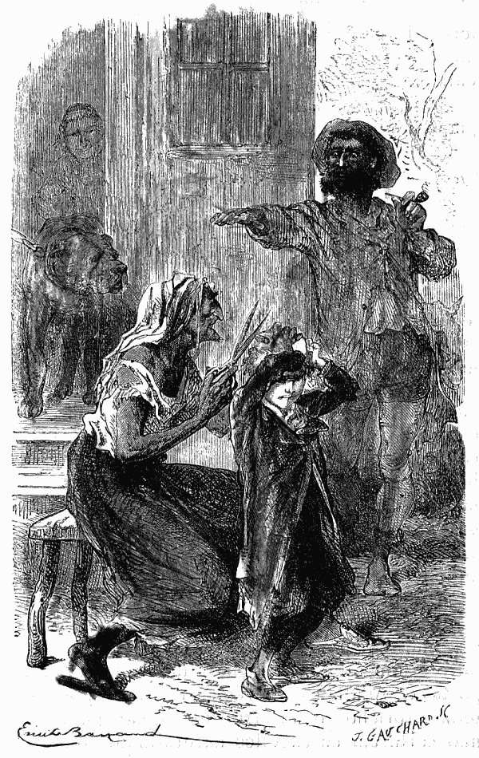
O mestre fez signal para lhe não cortarem os cabellos. (Pag. 72).
Quando acabou este feio vestuario, Praxedes metteu uma grande tesoura no
cabello loiro e fino de que a senhora de Valneige tanto gostava. Adalberto
estremeceu; mas, por um feliz capricho, o mestre fez signal para lhe não
cortarem os cabellos naturalmente annelados{73}
{74}
{75} e que tanto contribuiam para dar á criança uma belleza insinuante.
Comtudo, como aquella carinha era muito distincta para o papel que ia
representar, pozeram de roda da cabeça d'Adalberto uma feia fita d'ouro
avermelhado, e logo perdeu aquella graça natural, que tinha por tanto tempo
feito o justo orgulho de sua mãe.
Karik, o filho de Hercules, era mau por instincto e por educação; foi buscar o espelho diante do qual se enfeitava sua irmã mais velha nos dias de representação, quando dançava e seu pae a acompanhava, ao mesmo tempo que Karik batia com força sobre o seu grande tambor e que Natchès agitava as campainhas.
Adalberto, quando viu o espelho, sentiu dolorosamente o procedimento do joven saltimbanco. Vendo quanto o captivo soffria com o seu feio trajo, Karik quizera que elle podesse saborear a humilhação vendo o seu retrato desfigurado.
Tilly sentiu tambem a offensa, apesar da sua infancia. Quando o espelho passou por ella, a boa pequena bafejou-o com o seu halito para o fazer baço, ao menos n'um bocado. Adalberto comprehendeu a bondade d'esta acção, e olhou amigavelmente para Tilly que não ousava dar palavra nem mexer-se. Mas Gella em tres passos chegou-se a seu mau irmão, arrancou-lhe bruscamente das mãos o espelho e foi pôl-o no seu logar.{76}
Adalberto ficou-lhe grato por esta delicadeza, no meio da sua grosseria masculina e popular; voltou-se para ella com um sentimento de esperança, e disse comsigo mais uma vez:
—É ella, sim, ella é que ha de livrar-me!
Uma coisa o affligia; era vêr a velha Praxedes cortar com a grande tesoura a roupa branca e o fato que acabava de lhe tirar.
Era sem duvida para que não ficasse na carruagem um unico objecto que podesse causar suspeitas.
Tinha instinctivamente mettido na algibeira um feio botão cosido pela Rosinha na algibeira das suas calças de panno azul, no momento de deixar Valneige; na sua precipitação, não achando um que dissesse bem, a boa mulher tinha posto aquelle que dizia mal e que, apesar d'isso, tinha ficado, como muitas vezes succede ao que não é senão provisorio. Pelo mesmo instincto de exilado apanhou o pequeno bocado do collarinho em que tinha deitado o borrão brincando com seu irmão. Na sua dôr infantil, eram para elle duas imagens do passado, de que fazia dois thesouros. Ah! como elle apreciava agora todas as felicidades de Valneige: a familia, a casa, um agasalho em tudo, sem fallar da polidez, da boa educação. Aqui, tudo era grosseiro!
Foi um momento bem penoso aquelle em que elle pela primeira vez teve de comer a sopa dos ladrões. O prisioneiro morria de fome;{77} como já disse, não jantára na vespera; o seu estomago soffria, e quando a velha lhe trouxe uma sopa de batatas n'um prato rachado, experimentou ao mesmo tempo um nojo e uma irresistivel necessidade de alimento.
Tomou pois aquella sopa que, na verdade, não era muito má, e que pelo menos devia ser substancial, porque uma colher de ferro mettida n'ella ficava em pé.
Emquanto almoçava, parecia-lhe vêr a casa de jantar do castello; quatro pratos de porcelana muito branca, postos sobre a linda mesa de pau santo, e Rosinha servindo a sopa ás crianças. A querida mãe, passando para ir dar as suas ordens, e vendo a porta entre aberta, dizia jovialmente: «Bom appetite!» e riam; e elle, Adalberto, corria para a abraçar, mas Rosinha conservando o seu espirito de exactidão gritava-lhe:
—Faz favor de ficar aqui, pequeno lambusado; quem é que se levanta da meza antes de acabar? Não são horas de dar abraços, são horas de comer.
Em presença d'este quadro que lhe offerecia a sua imaginação, Adalberto sentia as lagrimas nos olhos, e, comtudo, não queria chorar; mas ser forte, corajoso, e conseguir fugir, era, o seu unico pensamento.
Tilly vendo que a sua tristeza augmentava julgou que elle não tinha comido bastante e{78} apresentou-lhe delicadamente o seu prato, dizendo-lhe familiarmente:
—Se tu quizesses acabar a minha sopa? eu quando não como bastante não me faz mal.
—O que! disse Adalberto com um gesto de reconhecimento, quando se não come bastante soffre-se.
—Oh! eu soffro sempre.
—De que?
—De tudo.
Taes foram as primeiras palavras que estas duas crianças trocaram ás escondidas, e o rapazinho cheio de illusão dizia comsigo:
—Pobre pequena! Que pena não poder eu leval-a commigo quando fugir!
Passada a manhã começava o trabalho. O que era o trabalho na casa do saltimbanco? O trabalho era todo o exercicio que póde tornar o corpo flexivel. O mestre collocava em linha Karik, Natchès e Tilly; faziam passos de dança, davam pulos e cambalhotas. O Hercules punha sobre os seus robustos hombros os bonitos pésinhos de Tilly e andava, levando-a como em triumpho. Era preciso que ella estivesse direita, que a cintura se conservasse flexivel, e que se ensaiasse a sorrir e a atirar beijos. Desde muito tempo Tilly não tinha medo, tão forte e dextro era o mestre; o que lhe parecia difficil n'este exercicio era unicamente sorrir e mostrar-se feliz.
O bom Natchès tinha chegado ao ideal da{79} flexibilidade e da graça. Tinham-lhe batido tanto desde a sua infancia que previa as ordens do mestre, applicando-se de todo o coração e fazendo maravilhas.
Era uma bella criança cheia de saude, mas o moral tinha fraquejado; o seu olhar tinha um tanto de servil; e quando obedecia ao menor signal, parecia-se com o cão de caça que se chega arrastando-se muito humilde, e felicissimo por lhe não baterem. Adalberto lamentava-o, não tanto pela sua desgraça como por não sentir a miseria da sua sorte. A natureza energica do pequeno de Valneige não comprehendia esta natureza fraca e completamente domada.
Quanto ao feio e mau Karik, exercia o seu rude officio imitando seu pae nas posições herculeas, nos seus olhares sombrios e nas suas terriveis juras. Era d'um caracter ligeiro, e juntava a isto chalaças triviaes que repetia a si mesmo, estudando debalde tornal-as finas.
Asseguravam que tinha um futuro, que se faria d'elle alguma coisa! Não se prestando o seu exterior aos papeis graciosos, dedicava-se ás forças. Esperavam vel-o como seu pae, andar de roda de uma praça publica, sustentando entre os dentes uma grande pedra presa a uma corda; o pescoço inchado, as veias quasi a arrebentarem, a cara a escorrer; era a este genero de proezas, que se destinava aquelle rapaz.
Para descançar, torcia os membros da maneira{80} mais grotesca, deitando-se para traz e levantando uma cadeira com destreza, engulindo pedras, comendo fogo... que sei eu? Adalberto estava espantado!
Só tinha, comtudo, um pensamento, vendo trabalhar a companhia; era achar meio de se evadir. Mas como? Ás vezes pensava em implorar Gella; mas conhecia-a elle bastante? Se ella mangasse com elle, ou fosse repetir as suas palavras ao mestre, e redobrar por consequencia a sua desconfiança? Nada; era impossivel aceitar esta idéa. Todas as vezes que pensava em fugir, lembrava-se que a fuga era impraticavel e perigosa em um paiz onde elle não conhecia a lingua. Viu-se forçado a adiar a execução do seu projecto, porque fallavam de deixar as montanhas e de viajar lentamente na direcção do Rheno; ora o Rheno era uma esperança para elle; sabia que mesmo antes de lá chegar encontraria muitos homens que fallariam francez. A pobre criança tornara-se de repente medrosa, submissa, e paciente; não fallou a pessoa alguma e resignou-se a esperar, para não lhe falhar o seu projecto.{81}
CAPITULO VII
Adalberto ouvia nas trevas o bater do relogio.
Quando os Ciganos se pozeram a caminho, depois de terem passado muito tempo nas montanhas, Adalberto viu com susto, que era objecto de grande e nunca interrompida vigilancia. O mestre, a velha, Karik, e mesmo a boa Gella, eis os espiões que dia e noite o rodeavam. Mais terrivel do que elles todos, o velho cão rosnador olhava-o com olhos chamejantes, e parecia querer engulil-o se tentasse fugir. Decididamente a occasião ainda não chegára; e quando chegaria ella? Paravam em toda a parte; acampavam nos arredores das cidades, a maior parte das vezes sem entrar{82} n'ellas, a não ser que houvesse alguma festa popular; o pobre pequeno figurava, coitado! n'estas festas! Quanto á velha cigana, horrenda creatura, ia por alli fóra lendo a sina a quem queria ouvil-a, examinando attentamente a palma da mão das pessoas supersticiosas, a quem pregava absurdas mentiras, que a faziam rir ás gargalhadas, quando estava em familia. Adalberto, apesar de haver já um anno que via todos estes manejos, não se habituava a elles, indignava-se d'essa conducta e tinha horror áquella furia.
Á sua pena juntava-se o receio de nunca achar maneira de pôr em execução o seu projecto. De que servia atravessar terras onde o prisioneiro podia fazer-se entender se nunca o perdiam de vista?
Comtudo fallava-se sempre no Rheno, e tratava-se de parar um pouco ao sul da Alsacia, depois do que se encaminhariam talvez para os lados do Lyão, onde Gella veria sua tia, respeitavel mulher que, em memoria de sua irmã, que morrera tão nova e tão desgraçada, gostava da pobre cigana e lhe queria bem. Estas palavras, que Adalberto apanhava ao acaso e que Gella lhe repetia de boa vontade, davam coragem ao prisioneiro, e, guardando só para si o seu segredo, fazia tenção de aproveitar ávidamente a primeira occasião favoravel.
Depois que passaram o Rheno, o rapazinho respirou um pouco mais livremente; não duvidava{83} da sua proxima liberdade, e tardava-lhe saber onde primeiro parariam.
Viu com grande alegria, que pararam logo na primeira noite defronte d'uma pequena cidade, cujo nome ignorava. Uma cidade, uma multidão, outras tantas rasões para ter esperança. Fugir d'alli, era o seu unico pensamento; quanto ao que se seguiria estava convencido que nenhuma situação podia ser peior do que a sua.
Quando chegou a noite, as mulheres cuidaram em renovar as provisões. Ordinariamente era Gella que, com o cabaz no braço, ia comprar o pouco que era preciso, ou pelo menos o pouco que podiam arranjar; porque o Hercules comia e bebia nas tabernas que encontrava no caminho, empregando no serviço do seu vigoroso estomago uma boa parte do dinheiro que ganhava a companhia, e não deixando aos outros senão muito pouco. Feijões, repolhos, batatas, era a comida ordinaria; um caldo da carne só por extraordinario.
Como era impossivel queixar-se diante do despotismo do mestre, cada um se contentava com amaldiçoar em voz baixa a força poderosa, que governava sem bondade.
N'aquella noite, o Hercules declarou que tinha negocios na cidade, e que ahi acompanharia Gella e as crianças, emquanto que Praxedes, com o seu neto e o horrendo Wolf, guardariam a casa.{84}
Adalberto, vendo-se de partida, sentiu redobrar-lhe a esperança. Olhava de longe para a cidade e para as ruas tortuosas, e pensava na possibilidade de fugir.
—É tão grande e eu sou tão pequeno! Não me verão. E de mais a mais as ruas são tão mal illuminadas!
Acostumado á prudencia o Hercules fez signal a Gella para dar a mão ao recem-chegado; desconfiava que aquelle espirito corajoso e atrevido só se domaria pela força, e pensaria sempre na fuga. Gella deu pois a mão ao rapazinho. Quanto ao pacato Natchès, estava tão mortificado, que a sua escravidão parecia-lhe uma necessidade, e que a idéa de se libertar não chegára a passar-lhe pela cabeça. Caminhava em perfeita liberdade ao luar, correndo adiante de Tilly, que nunca corria, tão fraca e doente era! O seu abatimento e a sua juventude escondiam-lhe sem duvida em parte a vergonha e a miseria da sua posição; comtudo, quando encontrava nos seus raros passeios uma pequenita bem vestida, a quem fallavam com doçura, achava-se de repente bem desgraçada.
Partiram, e, sem que o mestre dissesse uma só palavra pelo caminho, entraram na cidade. Ali, separaram-se: o Hercules tomou á direita e Gella, com as tres crianças, tomou á esquerda, emquanto seu pae lhe dizia n'um tom que, para ella, era a expressão d'um poder absoluto:{85}
—Cuidado com o garoto; tu é que és responsavel por elle; vê o que fazes!
—Sim, meu pae, disse Gella baixando os olhos. Esta rapariga, meia selvagem, educada nos theatros das feiras, só baixava os olhos diante de seu pae. Temia-o, e esse temor conservava entre elles uma especie de acordo, porque ella obedecia cegamente. Elle sabia-o, e mandava-a com o gesto. Resultava d'este systema de intimidação que a rapariga nunca se afastava do que para ella era o dever. Natureza honesta, teria sido superior, se lhe não faltasse toda a educação. Sem reflexão, sem nenhuns principios, conduzia-se honestamente temendo sobretudo a colera de seu pae, que a obediencia passiva conservava inoffensivo e silencioso.
Era por isso que se não via Gella andar vadiando pelas ruas. Trabalhava sempre, ora na casa, ora na costura, ou nos exercicios que lhe conservavam a flexibilidade e a ligeireza.
Se o seu coração era frio, não devia isso causar admiração; nunca coisa alguma o tinha desenvolvido; só via o mal, e sem duvida Deus tinha grande compaixão da sua ignorancia.
Adalberto, ainda que nada sabia analysar, presentia tudo isto vagamente, e vendo a sua mãosinha fechada na grande e trigueira mão de Gella, não experimentou repugnancia alguma, mas antes um sentimento que se parecia com a confiança misturada com a duvida.{86}
Eis uma padaria; entram, compram dois grandes pães, de que se encarregam Natchès e Tilly; depois passa-se para a salchicharia, e Gella manda metter no cesto só coisas baratas; é sempre a condição das suas compras, porque não conhece a abundancia.
D'ali é preciso ir buscar carvão.
Mettem-se pelas ruas estreitas e tortuosas, e, vendo grande multidão de homens, de mulheres e de crianças, Adalberto pergunta a si mesmo se não chegou o momento de fazer uma tentativa? Gella já não lhe dá a mão, entra em primeiro logar na carvoaria, as crianças seguem-na. O nosso amiguinho olha furtivamente para a direita, para a esquerda; hesita, o seu coração bate com força, está decidido, o seu partido está tomado, vai fugir... que caminho escolher? E se encontrasse o Hercules? Só esta idéa o faz tremer. E, comtudo, que espera elle? que melhor occasião se póde apresentar? é uma cidade, a noite, a bulha, a multidão... Fujamos.
Adalberto volta para o lado direito ao acaso, caminhando encostado ás paredes, e julgando que toda a gente olha para elle; depois animando-se a si mesmo por este começo de bom exito, vai, vai, sem saber o que faz, a não ser que escapa ao homem silencioso, á velha Praxedes, ao mau Karik e ao cão que morde.
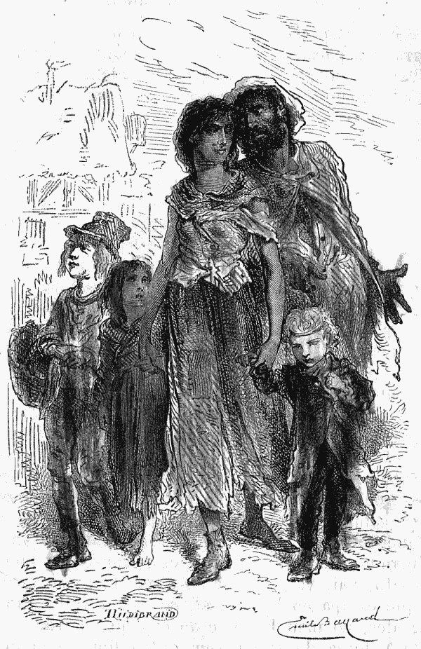
Cuidado com o garoto! (Pag. 85.)
Á força de andar sem outro fim senão fugir, cançam-lhe as pernas e pergunta
com medo:{87}
{88}
{89} «onde estou? onde vou?» A inquietação junta-se no seu espirito ao
desejo febril de se afastar da ambulante. Oh! miseria! percebe que na sua
carreira insensata, voltou pelo mesmo caminho, e está outra vez na praça, que
atravessou ainda agora para ir ao padeiro! Que ha de fazer?
Olha para todos os lados com tal anxiedade, que as pessoas que passam, por mais indifferentes que sejam, lh'a conhecem na cara. Uma boa mulher, que vendia maçãs, fal-o parar, e diz-lhe com bom modo:
—Ó homemsinho, andas á procura do teu caminho?
—Não.
—Não? Pois parece bem que sim. Onde vais tu?
—Para ali.
—Para ali para onde? para o lado do carvoeiro?
—Nada, não.
—Mas ainda agora estavas lá á porta; dize, anda, falla.
—Sim... Não!
—Como te chamas tu?
—Adalberto, não... não!
—Ah! tu não sabes o que dizes!... Olhe tia Dubois, não vê este pequeno com um casaco que não foi feito para elle, e a fita doirada no cabello? Não será este o que andam procurando acolá?{90}
—É possivel. Tem ar de vagabundo; mas seja o que fôr, não me metto n'isso; eu não me entendo com a canalha.
—Não importa, um cão que fosse, e que se perdesse quereria fazer-lhe achar o dono; eu cá sou assim...
Ao mesmo tempo, metade por bom coração, metade por gostar de emoções, a boa vendedeira de maçãs pegou na mão de Adalberto para o levar para o lado do carvoeiro. A criança resistiu, com grande espanto da boa mulher que lhe repetia procurando arrastal-o:
—Mas vem d'ahi, tolinho! uma vez que eu te digo que tua irmã mais velha te procura, e que o teu papá anda em busca de ti por outro lado; olha, vêl-o? vem para aqui.
Adalberto viu com effeito o Hercules que caminhava a grandes passos, olhando sombriamente em redor de si; parecia pedir um ponto de apoio para a sua colera. Um medo inexplicavel se apoderou do desgraçado pequeno; teve um momento de incerteza, não sabendo se ia cahir ali paralysado diante do seu perseguidor, ou se tentaria recuperar a liberdade. A energia da sua natureza venceu. Escapando-se á vendedeira, mette-se pela rua em frente e corre o mais que póde, até que se sentiu sem folego.
Depois d'esta rua acha outra, depois ainda outra, e ao longe avista a planicie, que era a extremidade da pequena cidade; se podesse{91} correr ainda chegaria ao campo, e esconder-se-ia em qualquer canto.
Adalberto faz um esforço supremo na direcção da planicie... Quem vê elle aproximar-se por uma rua transversal? Gella, pallida, inquieta e correndo atraz d'elle. A cabeça da criança perturba-se, passa-lhe pela idéa deitar-se-lhe aos pés, supplicar-lhe que o deixe fugir... Mas, diz comsigo, se ella tem com effeito o coração endurecido, estou perdido! E de mais, ella deve estar muito zangada commigo? É preciso fugir-lhe.
O excesso do desespero dá-lhe forças, parte como uma setta, não vê, não ouve nada; dir-se-hia que só lhe resta o poder de desapparecer, de se subtrahir á mais horrivel desgraça.
Gella tambem é agil; vai apanhal-o; os seus ligeiros pés devoram o espaço.
Mas eis aqui o campo; a criança avista uma casa isolada; baterá á porta, gritará, terão dó da sua desgraça e escondel-o-hão.
Ghega, arremessa-se á porta, bate, toca, chama, ninguem responde, parece tudo morto; as portas das janellas estão fechadas, é absoluto o silencio. O infeliz Adalberto ouve o respirar de Gella, e a bulha dos seus passos que se aproximam com uma rapidez incrivel. Emfim... eil-a... Elle dá a volta da casa, e vê diante de si uma fresta; ha pois alli uma adêga, uma casa de lenha, alguma coisa emfim que não é a casa do Saltimbanco. E depois, se{92} Gella o leva, prisioneiro fugitivo, não vai elle levar pancadas do Hercules, ou da velha, ou de Karik, ou de todos tres, e ser mordido pelo cão? Vale mais a fresta! É o desconhecido, e o desconhecido é a esperança!
Mette a cabeça, depois os braços, agarra com a mão uma barra de ferro que separa em duas a abertura, e volta-se com a destreza que dá sempre uma situação desesperada. N'este momento Gella com passo lento e cauteloso começa a andar de roda da casa deserta. Elle deixa-se escorregar, transido de medo, pelo muro abaixo, e vai cahir sobre não sei que, d'onde, com o peso do seu corpo, faz levantar uma nuvem de poeira acompanhada de um som desconhecido.
Onde está elle? a pobre criança não sabe, mas ouve o roçar de um vestido na barra de ferro da fresta; Gella parou, chama, escuta, falla:
—Pequeno, estás ahi? responde-me, dize-me se estás ahi?
Mais morto do que vivo, Adalberto fica mudo, espera mesmo para respirar que a rapariga esfalfada, arquejante se afaste, perdendo talvez o rasto do fugitivo.
Quando o silencio se restabelece, a criança conserva-se no mesmo silencio, e agora, que Gella o não persegue, quereria ouvir ainda a bulha dos seus passos; mas nenhum som lhe chega aos ouvidos a não serem oito pancadas vagarosamente{93} dadas por um relogio, a que um homem sem duvida deu corda antes de deixar a casa.
Foi pois habitada, ou pelo menos visitada, não ha muito tempo esta casa? Mas quando voltarão para ella? E elle como sahirá d'ali? Não lhe tinha vindo esta idéa quando Gella estava perto d'elle; agora comprehende a sua desgraça, e essa desgraça assusta-o.
Victima de novo terror, torna-lhe a idéa de que, com certeza, Gella seria boa e o seu coração se commoveria, vendo uma criança abandonada. Não lhe tinha ella dado muitas vezes provas da sua natural bondade? Sim, deveria ter-se fiado n'ella, e pode ser que ainda seja tempo?
Grita, chama!
—Gella! Gella!
Mas escutando, ouve gritar e repetir duas vezes:
—Gella! Gella!
Esta voz, que diz o que elle disse e parece a sua, fal-o tremer; os cabellos molham-se-lhe de suor, as pernas vergam, os dentes batem; mas lembra-se de repente que ha em Valneige um echo no parque, perto da neveira, e que o seu papá escarnecia d'elle quando tinha medo do echo, visto não ser um ente invisivel, mas uma bulha repetida por uma causa muito natural.
Tendo-lhe passado mais o medo, cahe meio deitado e resigna-se a esperar.
—Que oito horas! diz comsigo, quanto tempo{94} será preciso esperar até que o dia volte! E quando voltar o dia, como sahirei d'este buraco?
Não ousava mover-se, temendo encontrar algum obstaculo no chão, ou objectos que podessem feril-o. O somno não vinha interromper a sua inquietação; pelo contrario, estava agitado, abria muito os olhos, e cruzavam-se-lhe na cabeça, n'aquella noite, mais idéas do que ordinariamente passavam por ella em todo um dia.
A luz da lua não descia até ao fundo da adêga; um canto só estava allumiado, e n'este angulo, Adalberto via uma coisa preta, tão comprida, como duas vezes a sua mão quando muito, mas seguida d'um traço preto que, collado por assim dizer á parede, se inclinava comtudo algumas vezes ora para a direita, ora para a esquerda.
«Que é aquillo!» perguntava a si mesmo Adalberto, cujos olhos inquietos não largavam o objecto mysterioso, sem poder comtudo imaginar o que havia n'aquelle canto. Esta nova preoccupação juntou-se ás outras. Que noite! A criança estava sósinha nas trevas, sem ao menos ter medido com os seus passos a prisão e dizendo comsigo:—Quando eu tiver fome, quem me dará pão? Algumas vezes pensava que nunca mais teria fome, porque era muito desgraçado.
Deram nove horas no meio d'esta grande tristeza. Como elle se voltasse para o outro{95} lado para descansar da sua incommoda posição sobre aquella especie de cama empoeirada, avistou pela fresta uma linda estrella que parecia estar ali só para elle. Viu essa estrella com verdadeiro reconhecimento; era uma coisa consoladora para uma criança abandonada e como que enterrada viva; e depois esta vista dava-lhe pensamentos mais socegados do que os pensamentos da terra. Dizia ingenuamente:
—Foi Nosso Senhor sósinho que fez aquella estrella, e como sabe tudo antes, sabia quando a estava fazendo que um pobre rapazinho a veria por uma fresta quando tivesse perdido o seu papá, a sua mamã e toda a gente.
Esta lembrança, junta ao enternecimento que lhe causava a bella e solitaria estrella, fez-lhe chorar lagrimas, cuja doçura elle ainda não conhecia, e que alliviaram seu peito opprimido. Sentia-se uma creatura abençoada que, por estar a oito pés debaixo da terra, não estava menos presente aos olhos do Creador. Derramando, sem querer, lagrimas que o consolavam realmente, dizia a Deus as palavras mais doces, de maior confiança; era a sua oração da noite, e quando a acabou, continuou a olhar para a estrella, e, apezar do frio que começava a sentir, apesar da tristeza que enchia o seu coração, teria talvez podido adormecer defronte d'este cantinho de ceo azul, se não fosse como que forçado a voltar a cada instante os olhos para o canto para vigiar o{96} objecto negro, que estava sempre ali, e cuja extremidade mexia de vez em quando, deixando ao prisioneiro uma duvida que lhe era insupportavel.
O relogio deu dez horas. Parecia á criança haver já muito tempo que vivia n'aquelle subterraneo, e, a dizer a verdade, sem a estrella teria desanimado; mas lá estava bella e brilhante, como uma joia cahida da mão do grande Rei, e Adalberto dizia-lhe:
Fica ahi, minha linda estrella, oh! fica não te vás, não me deixes só! Tu és a minha estrella, bem minha; e, como os sabios dão um nome a tudo quanto brilha lá em cima, eu, que não sou sabio, dou-te um nome, o melhor que eu sei, chamo-te como a mamã, Adilia, porque me fazes bem. Emquanto eu te vir, terei coragem; e quando sahir d'aqui e tornar a encontrar meus paes, procurar-te-hei ainda, e, tu verás, olharei para ti toda a minha vida!
Fallando á sua nova amiga, volta-se para o canto da parede por um movimento que se tornou nervoso e o que vê elle?... o objecto mysterioso tinha mudado de lugar, tinha andado e andava ainda; vinha para o lado do pequeno. Não havia duvida, era um grande rato preto, um d'aquelles que Gervasio se esforçava por fazer cahir na ratoeira, dizendo que aquelles animaes mordiam.
Adalberto não viu mais a sua estrella, nem{97} o céo azul, nem as suas bellas esperanças, mas unicamente o gordo rato preto, que vinha ás escuras como um traidor, e sem que o prisioneiro podesse defender-se visto que não ousava mexer-se, não sabendo de que estava rodeado. Novo susto!
O pezar do pequeno de Valneige já não era um pezar de enternecimento, que elevasse a sua alma tão bem formada por bons paes; era um horror instinctivo por um animal perigoso; era preciso passar assim toda a noite e a pendula fez soar nas trevas onze horas.{98}
CAPITULO VIII
Adalberto dava que pensar á senhora Tourtebonne.
Ha pessoas que querem sempre saber como acaba o que vêem começar. D'este numero era a honesta vendedeira, que nós ouvimos fazer perguntas a Adalberto. Tinha ficado parada diante do seu carro de mão, seguindo com os olhos, o mais longe possivel, o pequeno que corria.
A tia Tourtebonne, era o seu nome, experimentava uma continua necessidade de expansão; dizia a todos o que pensava, e como a sua unica occupação era andar com o seu carro por todos os bairros, tinha por confidente intimo a cidade inteira. Pouco importava que lhe respondessem{99} ou não; o essencial era communicar os seus pensamentos; por isso acontecia constantemente acabar de contar á mulher do cortador a historia de que a tendeira distrahida tinha ouvido o principio. A querida mulher era conhecida de todos, e estimada porque era obsequiadora, como o são em geral as pessoas que gostam de se metter em tudo. Não temia incommodar-se pelos outros, e, com certeza, se fosse preciso para fazer um serviço fallar tres horas seguidas, teria fallado quatro.
Como já havia quarenta annos que andava pela cidade, sabia de cór as ruas, as casas e os habitantes; era quasi como um diccionario, que basta folhear para se achar a palavra que se procura com as indicações desejadas. A tia Tourtebonne estava tanto em dia com o que se passava, graças ao seu commercio e á sua perspicacia, que tinha sido chamada bastantes vezes como testemunha, perante a justiça. Esses dias tinham sido dias de triumpho para a excellente mulher; a sua memoria era tão fiel, as suas observações tão minuciosas, a sua palavra tão facil, que na verdade tinha dado grandes esclarecimentos sobre os negocios de que se tratava. Tambem, as pessoas que não andavam pelo bom caminho evitavam-na como se fosse lume; escondiam-se d'ella para fazer o mal, como quem se esconde de todo o instrumento de publicidade.
Voltando ao que nos interessa; apenas a tia{100} Tourtebonne perdeu o rasto de Adalberto, voltou-se para o dizer a alguem, e não viu senão o gordo Baptista, personagem pesado, enfadonho e improprio para a conversação. Era o mesmo, não estava ali mais ninguem, e como elle não vendia n'aquelle momento nem harenques nem queijo, duplo perfume commercial de que elle se occupava, podia sem indiscrição fazel-o ouvir de boa ou má vontade o que lhe quizesse contar.
—Então já se viu uma coisa assim? Um homemsinho a quem eu ia ensinar o caminho, e que me escorrega dos dedos?! Que diz a isto senhor Baptista?
O casmurro Baptista, que não dizia nada, porque não se tratava de harenques, nem de queijo, fez hum! com voz forte e rouca. Era uma maneira airosa de se livrar de todos os negocios que não diziam respeito ao seu duplo commercio.
O senhor Baptista não se interessava absolutamente senão pela sua venda e pelo seu cachimbo, que era para elle o symbolo d'uma immortal tranquillidade.
Dar um passo, olhar para o que se passava, procurar tirar consequencias d'um facto, tudo isto lhe parecia um inutil augmento de trabalho; por isso tambem pouca importancia lhe davam na cidade de cinco mil almas que habitava, onde as bisbilhoteiras sobretudo o consideravam como um zero. A tia Tourtebonne era capaz de dar valor a um zero se ella o precedesse,{101} quer dizer se chegasse a adaptal-o a um assumpto escolhido por ella. Este famoso hum que o bom do homem applicava a tudo não a satisfez nada, e replicou vivamente:
—Viu-o, não é assim senhor Baptista, aquelle pequeno basbaque que olhava para a direita e para a esquerda, e a quem eu fallei? viu-o? diga?
Como o hum de Baptista não era um som vão, e que elle não empregasse muito a proposito, foi ainda a sua resposta, mas d'esta vez acompanhada de um signal affirmativo com a cabeça.
O que tudo junto queria dizer sim, tanto quanto era possivel, porque o senhor Baptista nunca dizia positivamente que sim, sendo natural de um cantão da Normandia, onde as tradições se tinham conservado intactas desde o celebre Rollon. Quando se tratava da venda, era preciso dar aos freguezes mais alguma coisa do que huns. Usava então de rodeios engenhosos, de interjeições expressivas, mas nunca chegava o sim compromettedor.
Era inevitavelmente: ora essa!... isso depende!... porque não?... o que pensa?... vamos!...
O FREGUEZ.
Os seus arenques são frescos?
O VENDEDOR.
Ainda o pergunta!{102}
O FREGUEZ.
São os que lhe trouxeram esta manhã?
O VENDEDOR.
Então quaes haviam de ser?
O FREGUEZ.
São os mais frescos que tem? não é assim?
O VENDEDOR.
Julga que eu era capaz de lhe mostrar má fazenda? Diga lá.
O FREGUEZ.
Está bom, dê-me seis.
O VENDEDOR.
Aqui estão e dos bons. Agora ha de querer queijo, não é verdade?
O FREGUEZ.
Não pense n'isso.
O VENDEDOR.
Pois é bom e estomacal. Quem não come queijo sente peso no estomago.
O FREGUEZ.
Parece-lhe?
O VENDEDOR.
A prova é que eu nunca tal sinto, eu que vivo entre queijos desde que me conheço; portanto...
O FREGUEZ.
Pois sim, dê-me um pouco, não muito.
O VENDEDOR.
O que quizer.
O FREGUEZ.
D'esse não; está muito duro, não está?{103}
O VENDEDOR.
Excellente!
O FREGUEZ.
Este deve ser melhor.
O VENDEDOR.
Optimo!
O FREGUEZ.
De qual ha de ser.
O VENDEDOR.
Leve d'ambos.
O FREGUEZ.
Oh! não, basta-me um, e já é de mais.
O VENDEDOR.
Corta-se em dois, o que faz com que só se veja metade.
O FREGUEZ.
Este parece-me menos sêcco.
O VENDEDOR.
Com certeza.
O FREGUEZ.
E o outro?
O VENDEDOR.
O outro tambem.
O FREGUEZ.
Conservar-se-ha?
O VENDEDOR.
Depois me dirá.
O FREGUEZ.
Responde por isso?
O VENDEDOR.
Se o não achar bom torne a trazel-o.{104}
D'este modo o gordo Baptista tinha resposta para tudo, e o freguez, cansando primeiro do que elle, comprava arenques e queijo, que, devemos dizel-o, tinham todas as qualidades requeridas, visto que o que se quer é que cheirem bastante.
Tal era o senhor Baptista, não fallando por sua vontade senão para os seus negocios, e silencioso para tudo mais. D'ahi vinha aquella resposta. Mas, quando a tia Tourtebonne agarrava alguem, não era facil escapar-lhe; por isso continuava com viva emoção e no interesse da moral:
—Pois é verdade, já não ha crianças! quem tal havia de imaginar? Um pequenote que não responde quando a gente lhe quer fazer um serviço? Ah! se o papá tivesse vindo por aqui tinha-lhe feito os meus comprimentos. É preciso ser bem creado e não voltar as costas quando alguem falla.
Estas palavras foram ditas justamente quando o senhor Baptista tinha dado meia volta á direita para entrar na loja; applicou o dito a si, e a polidez franceza, que os Normandos adoptaram como os outros, fêl-o parar, sem querer, no limiar da porta.
—Mas quem havia de imaginar uma coisa assim? um pequeno que não sabe o caminho devia estimar muito que eu deixasse as maçãs para lhe dar attenção. Mas qual! Emquanto se lhe mostrava a rua Verde eil-o que{105} enfia pela rua Azul. Demais, pois que! digamos tudo, ha paes que batem nos filhos como se elles fossem de pedra e isto não os prende em casa. As crianças basta só castigal-as, não se devem espancar. Este pobre pequeno é talvez muito infeliz. Ainda agora estava á porta do carvoeiro com sua irmã mais velha e duas outras crianças, um rapaz e uma pequenita. Viu-os senhor Baptista?
Ainda que a pergunta fosse directa, o vendedor de queijo livrou-se ainda d'ella com o tal hum! que preferia a tudo, e ao mesmo tempo fez tres signaes com a cabeça d'alto a baixo, o que equivalia a sim, sim, sim.
—Ah! vossemecê viu-os? Pois bem! quer que eu lhe diga? não faço grande conceito d'aquella gente. A pequena é uma magrizela, tem cara de fuinha; o rapaz tem umas grandes bochechas, mas parece aparvalhado! é que lhe teem batido de mais. A rapariga maior parece um tambor mór; é bonita, mas faz-me o effeito d'uma dançarina de feira, com a sua saia curta, e cabello mal penteado. Este pobre pequeno, é talvez uma criança furtada? Pois não! tem-se visto. E é bonito apezar do fato ser feio. Ah! se é d'elles, não dá ares da familia. É loiro, delgado, tem uns pulsosinhos de estorninho, a pelle fina e branca, parece uma criança que teve outra criação... Olhe, olhe, senhor Baptista, acolá vae o papá, é preciso chamal-o.{106}
—Eh! ouça cá, ó senhor! por aqui! É o seu pequeno que procura, com uma fita doirada no cabello?
O Hercules a esta voz voltou-se e deu tres passos para a vendedeira, emquanto esta continuava:
—Eu bem vi que elle procurava a sua gente, e quiz fazel-o parar; mas qual historia! é como o cão do João, quanto mais se chama, mais elle corre. Mas é preciso que vossemecê o ache. Escute, se o rapaz quer fazer das suas, vou ensinar-lhe a vossemecê o meio de o apanhar. Conheço este bairro, e os outros; ha, a vinte passos d'aqui, um commissario de policia que tem sempre gente para mandar para a esquerda e para a direita; eu vou conduzil-o lá, vossemecê diz-lhe o seu negocio e elle lhe fará achar o pequeno.
Apenas a boa da mulher tinha acabado esta phrase, que o Hercules, até então impassivel como de costume, abriu uns grandes olhos, e, fingindo affirmar-se bem, como se avistasse o pequeno na direcção da igreja, deitou a correr para aquelle lado e desappareceu.
Não se pode descrever o espanto da tia Tourtebonne; ficou de braços cahidos em frente das suas maçãs reinetas do Canada, seguindo com olhos penetrantes o Hercules, que de certo não procurava coisa alguma, porque ella ao luar não distinguia mais do que tres crianças cujos nomes lhe eram familiares.{107}
Teve a felicidade de achar, em falta de melhor, o senhor Baptista para lhe dizer:
—Então não vê isto? é uma criança roubada. Primeiro, este homem tem do diabo; e depois não reparou nos seus olhos quando lhe fallei no commissario de policia?
—Hum!
—Pobre pequeno! e seria bonito como um amor se estivesse penteado, e vestido como toda a gente; ai! que dó tenho d'elle! pobre cherubim! A prova de que ha alguma coisa n'isto tudo, é que quando eu lhe perguntei o seu nome respondeu-me Adalberto, e depois, depressa como se tivesse medo: Não, não, não! uma criança ordinariamente diz tudo com franqueza, e não esconde o seu nome. Que pensa d'isto, senhor Baptista, vossemecê que teve um filho, o seu pobre Augusto?
Ao nome de Augusto o mercador pareceu sahir do seu lethargo, e respondeu á tia Tourtebonne;
—Penso como vossemecê, que é uma criança roubada.
O senhor Baptista vivia n'uma especie de somnolencia a respeito das coisas d'este mundo, salvo o seu commercio. Havia comtudo um cantinho do seu coração que não dormitava; aquelle onde se conservava, na sua graça infantil, a imagem do seu pequeno Augusto, que elle tinha visto morrer na idade pouco mais ou menos do pequeno de Valneige. Nunca{108} se invocava em vão esta lembrança, e, em memoria de Augusto, o tranquillo Baptista sahia sempre do seu adormecimento.
—Então? vejamos, disse a vendedeira, o que se ha de fazer? Eu, primeiro do que tudo, não posso ficar assim, não dormiria quanto preciso. Pensar que a estas horas, ha uns pobres paes que procuram o seu filhinho, que lhes roubaram, e eu ficar aqui, diante das maçãs, sem dar um passo para que o achem! não, não é possivel. Olhe eu nunca tive filhos, infelizmente para mim; mas gosto das crianças, quero-lhes bem. Ah! se eu os tivesse tido, como tomaria cuidado n'elles! parece-me que os dependuraria todos ao meu pescoço com medo de os perder.
A tia Tourtebonne, dizendo isto e toda inquieta pensando em Adalberto, pôz-se a chorar, como ella fazia de tempos a tempos, pelas crianças que nunca tinha visto.
Depois, tendo tirado da algibeira um grande lenço de quadrados, enxugou os olhos e tornou a sorrir. Tudo era verdade na boa mulher, mas as impressões succediam-se rapidamente.
—Mas é tarde, são horas de nos deitarmos. Se nós fizessemos antes uma declaração ao commissario de policia? Diga, o que acha senhor Baptista? vossemecê que gostava tanto do seu pequeno Augusto? hein! se lh'o tivessem roubado?{109}
—Vamos ao commissario, respondeu o bom do homem, a quem a emoção da vendedeira, junta ás proprias recordações, acordou quasi completamente; deixe-me só fechar os postigos e estou ás suas ordens.
Os postigos fechados, o vendedor metteu por um momento o pequeno carro da tia Tourtebonne no seu pateo, cortejou, pediu desculpa e offereceu cortezmente o braço ao seu mais antigo conhecimento; era assim que lhe chamavam, porque na cidade de G... era ella com effeito o mais antigo conhecimento de quasi todos aquelles que a viam passar havia quarenta annos. O seu coração inflammavel, a vivacidade do seu fallar, as suas maneiras amaveis tinham-lhe conciliado esta especie de affeição que se basêa sobre um fundo de estima, e sobre o aturado costume de sentir alguem andar de roda de si. Quando se vê uma pessoa todos os dias, necessariamente se ha de gostar um pouco d'ella, ou tomar-lhe zanguinha; e ninguem se lembrava de antipathisar com aquella boa cara vermelha, rodeada de uma touca bem branca, e que sorria a toda a cidade como a uma amiga de infancia.
Os pobres, e sobretudo os pequenos mendigos, encontravam-na com grande gosto, porque em lugar de deixar a sua fructa estragar-se, ia dando-a pelo caminho quando não tinha podido vendel-a, e dizia:
—Toma lá, meu pequeno, péga n'esta maçã,{110} está meia podre; se eu fosse rica dava-te das boas, mas tu tiras o mau e o resto ainda presta.
E quando a pobre criança dizia obrigado, respondia:
—Não por isso, meu canito; dá-me gosto vêr-t'a roer.
Chegaram a casa do commissario de policia. A Tourtebonne fallou muito tempo sem dizer grande coisa, e o senhor Baptista disse tres ou quatro palavras e alguns huns!
O senhor commisario registou a declaração e disse que estes depoimentos poderiam mais tarde ou mais cedo ajudar a infeliz criança a achar a sua familia.
O senhor Baptista e a tia Tourtebonne retiraram-se de braço dado, como tinham vindo, e para acabar esta tarde de emoções o carrinho poz-se a caminho até á habitação da excellente mulher, que morava exactamente n'uma das ultimas casas da cidade, do lado pelo qual Adalberto tinha fugido para a planicie.
Como ella não só tinha bom coração, mas tambem o espirito inventivo, não adormeceu senão muito tarde, bem decidida a não perder de vista este negocio, e a empregar toda a sua finura e toda a sua perspicacia no serviço da criança perdida. Durante este tempo, o nosso amiguinho estava, como nós vimos, em um subterraneo e contava bem tristemente as horas do seu captiveiro.{111}
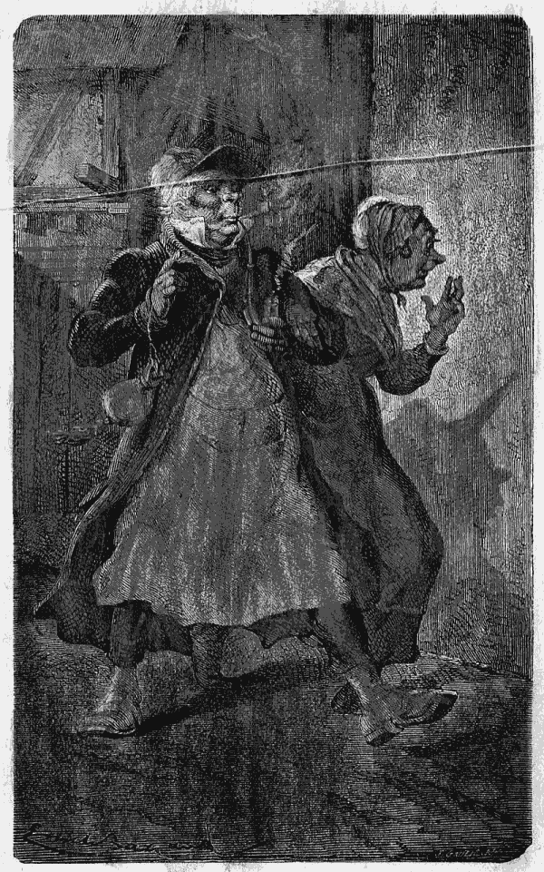
Offereceu cortezmente o braço. (Pag. 109.)
{113}
CAPITULO IX
Adalberto tinha fome
Deixámos o filho do senhor de Valneige victima de uma grande agitação no seu tenebroso isolamento.
Esta solidão durou muitas horas. Tão depressa julgava que a ratazana estava perto d'elle, como lhe parecia sentil-a subir pelo corpo acima. A sua imaginação criava mil soffrimentos que não existiam.
Distrahiu-se d'este penoso estado por uma outra preocupação que, livrando-o do feio bicho, lhe fez novas perplexidades.
Ouvia a alguns passos a bulha de alguem que trabalhava em madeira. Assimilhava-se a um{114} marceneiro que quizesse fazer um buraco n'uma porta. Esgravatava, furava, rapava, tudo isto depressa, depressa, como se effectivamente estivesse muito apressado; depois cessava de repente, descançando apparentemente; mas então a immobilidade era absoluta, o silencio completo, nem respirar se ouvia.
Quando Adalberto poz na idéa, que estava um homem do outro lado da porta e na escuridão, perturbou-se muito. Por um lado pensou que esse homem seria o seu salvador e o faria sahir do subterraneo; por outro lado, via-se á mercê de um estranho que podia ser outro malvado, um ladrão de crianças!
Havia momentos em que o rapazinho queria chamar; abria a bôcca para dizer: Senhor marceneiro quer acudir-me se faz favor? Mas, de todas as vezes faltava-lhe a voz como em um sonho máu. Graças a esta extraordinaria inquietação, tinha esquecido o rato, lembrando-se só do operario.
Adalberto admirava-se tanto mais d'este trabalhador mysterioso, que muitas vezes em casa de seu pae, tinha visto marceneiros fazerem differentes obras, mas sem pararem assim a todo o instante. E depois, este individuo trabalhava ás escuras mais outra coisa para admirar!
Se Adalberto fosse um rapaz medroso, o que é uma grande vergonha quando se está destinado{115} a ser um homem, a conduzir, a governar, é provavel que adoecesse de medo; mas seu pae tinha-lhe dito muitas vezes, e tinha-lhe mesmo provado, que, as bulhas que se não podem explicar logo, são quasi sempre produzidas por uma causa muito simples. O senhor de Valneige tinha tido o cuidado de esclarecer o espirito dos seus filhos, desde que elles tinham, começado a mostrar algum discernimento.
Adalberto, ainda que muito estonteado, tinha comprehendido as lições praticas dadas todas as vezes que as circumstancias se prestavam a isso. Valia-lhe isto na sua cruel posição, porque, no meio das suas afflicções, não deixava de ser o mais razoavel que a sua idade permittia.
Quando o operario tinha trabalhado um certo tempo, parou de todo, fosse porque estivesse cansado, ou porque tivesse acabado aquella obra singular. Todo o barulho cessou, mas não se ouviram os passos de uma pessoa que se affastasse.
A criança prostrada por successivas emoções, moida pela sua propria agitação, acabou por sentir no corpo o peso que precede o somno, e no espirito a quietação a que se segue o esquecimento. Isto durou até ao momento em que o relogio deu duas horas. Depois, nada mais ouviu; tinha adormecido.
O somno é o amigo dos desgraçados, Deus concedeu-o para contrabalançar poderosamente{116} os nossos males; é n'esta especie de banho refrigerante que os nossos pensamentos descansam, que os nossos receios se dissipam, que a nossa vontade recupera o socego e a força, que são necessarios para nos conduzirmos; mas se o somno é doce para aquelle que soffre, como é amargo o seu despertar! Tinha esquecido, e todas as sensações, penosas lhe são restituidas uma a uma. O silencio em redor d'elle, e n'elle mesmo, faz desapparecer, é verdade, os fantasmas da imaginação; mas a realidade está alli, e o coração começa de novo a soffrer.
Quando Adalberto despertou, a primeira claridade do dia chegava apenas ao subterraneo; não podia ainda distinguir o que o rodeava, mas as suas recordações voltavam dolorosamente, e lamentava-se por não poder dormir sempre.
Os seus pensamentos eram tão tristes que não sabia como escapar-lhes. Entre as imagens que lhe appareciam escolheu uma para descansar das outras; representava-a, como se a visse diante de si, a sua querida e pobre mamã, e via-a realmente com o seu coração, porque a ternura que tinha por ella não lhe deixava esquecer o menor detalhe. Parecia-lhe mesmo vêl-a até com a alliança que ella usava, e que tinha sido sempre uma das grandes alegrias de Adalberto. Esta alliança tinha de particular que, sendo mais grossa do que estes anneis costumam ser ordinariamente, havia sido do agrado da senhora de Valneige fazer{117} gravar na parte de dentro as iniciaes dos nomes dos seus filhos por ordem de nascimento.
Quando Adalberto era pequeno, se havia sido bonito, obtinha da sua mamã o favor de abrir elle mesmo a alliança e de vêr a lettra A, que representava o seu nome.
Antes mesmo de saber o alphabeto correntemente, o rapazinho, quando o famoso annel se abria, nunca deixava de exclamar:
—Isto é um C, quer dizer Camilla; isto é um E, quer dizer Eugenio; isto é um F, quer dizer Frederico, e isto é um A, quer dizer Adalberto!
Quando chegava aqui, dava duas ou tres pancadinhas no peito, para se assegurar que era effectivamente elle; depois batia palmas, e a sua mamã beijava-o; acabava sempre assim.
Este annel representava um grande papel na educação maternal do pequenito, e n'um dia que tinha commettido uma falta enorme, quer dizer, que tinha dito um não pensando sim, que tinha, n'uma palavra, mentido, a senhora de Valneige havia-lhe declarado, olhando muito severamente para elle, que se semelhante coisa tornasse a succeder, mandaria o seu annel ao ourives para apagar a lettra A. E o bom pequeno não tinha mentido mais desde esse dia.
Quando, n'este triste subterraneo, o prisioneiro deixava de pensar na sua mamã, não encontrava no seu espirito senão motivos de{118} receio. O resto das trevas impedia-lhe de seguir os movimentos da ratazana. E depois, perguntava a si proprio com medo onde estaria o trabalhador mysterioso? Teria adormecido ali perto, ou, teria partido? Não, nenhuma porta, se tinha aberto, e Adalberto não podia duvidar que, excepto o balancear da pendula, tudo na casa estava immovel.
Evitava pensar no marceneiro, mas então voltava o Hercules. Oh! que medo! se tivesse de o tornar a ver, e ser apanhado pelas suas grandes mãos que o teriam esmagado se lhe tocassem! O rapazinho tremia só com esta idéa. E a velha? oh! a velha, ainda lhe fazia mais medo; a impressão que ella produzia no seu cerebro fatigado, e sobre os seus nervos doentes, era pouco mais ou menos a mesma impressão produzida pela feia ratazana que se agitava na escuridão. E Gella? ah! Gella! teria talvez sido boa! Porque não tinha elle respondido quando ella lhe disse tão devagarinho:
—Pequeno, estas tu ahi?
Tinha pena de o não ter feito, e comtudo ella tel-o-hia provavelmente levado para a casa ambulante, e então o que teria succedido? O Hercules ter-lhe-hia dado pancadas como em um pobre cão? ou antes, na sua furia, não o teria matado? Este homem, pela sua grande estatura, pelos seus olhares carregados, e pelo seu silencio quasi continuo, havia impresso no espirito do prisioneiro um temor inexplicavel.{119}
Quando conseguia não pensar n'elle, interrogava-se a si proprio, para saber como sahiria do seu tumulo, ou se não morreria antes n'elle, sósinho, e longe dos seus bons paes?
Entretanto o dia augmentava; Adalberto pôde emfim tomar conhecimento da sua triste habitação. Como não tinha tido na infancia a cabeça transtornada por contos pavorosos e absurdos, não imaginava estar n'um sitio muito escondido, visitado de tempos a tempos por alguma fada malfazeja, ou algum monstro horroroso. Não; julgava simplesmente ter cahido n'uma adêga subterranea ou n'uma casa da lenha, como a adêga e a casa da lenha de seu pae; e assim era effectivaménte; estava n'um subterraneo que fazia as vezes de ambas as coisas. A casa isolada em que elle se achava, em consequencia da sua deploravel aventura, era uma casa de pouca importancia, assaz tafula na sua simplicidade, muito querida dos donos; via-se isto pelo cuidado com que estavam tratadas as taboinhas verdes, as paredes brancas, e até nos menores detalhes. Um unico subterraneo, grande e salubre, servia de adêga, de casa de lenha, de carvoeira e de arrecadação. Os olhos do cativo, desde que se costumaram á meia luz, encontraram achas de toda a grossura, e alguns centos de garrafas vazias, bem arrumadas sobre duas ordens de prateleiras. Por outro lado, velhos instrumentos de jardinagem, taboas, um tonel,{120} uma gaiola quebrada. Viu tambem a especie de cama sobre que tinha passado a noite; era o pó do carvão, misturado, com alguns bocadinhos, resto da provisão que de certo, tinham o costume de pôr n'aquelle canto justamente debaixo da fresta. As mãos do rapazinho estavam todas pretas, cara e cabello deviam estar cobertos d'aquelle pó; devia parecer exactamente um limpa-chaminés.
—Tanto melhor, disse comsigo, se eu puder fugir e encontrar o mau homem, tomar-me-ha por um pretinho e deixar-me-ha passar.
N'esta idéa, imaginou mascarrar-se de preto, e apanhando ás mãos cheias o pó do carvão, esfregou a cara, tendo o cuidado de carregar mais nas sobrancelhas e de empoar desde a raiz os seus cabellos loiros, depois de ter deitado para longe de si a horrorosa fita que lhe tinham enrolado na cabeça.
Ah! se a boa velha Rosinha o tivesse visto n'aquelle miseravel estado, nunca teria podido reconhecer o seu querido loirinho; quando muito a senhora de Valneige, por instincto maternal, teria presentido n'elle o seu filho querido, o seu ultimo filho, o seu Benjamim!
Quando Adalberto acabou de mascarrar-se, teve horror de si mesmo. Ao seu vergonhoso fato, accrescentou voluntariamente uma camada de côr preta que o desfigurava; comtudo, era um bom meio de passar desapercebido.
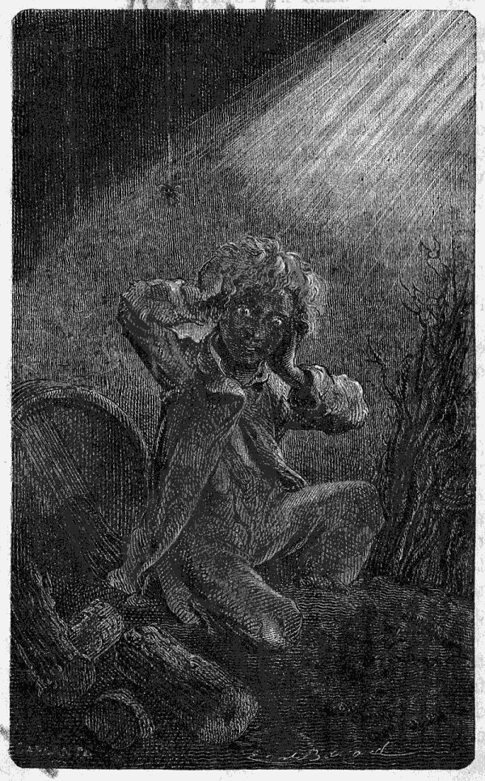
Tomar-me-ha por um pretinho. (Pag. 120.)
Se elle tivesse podido arrastar o tonel para{121}
{122}
{123} debaixo da fresta e pôr-lhe em cima algumas taboas, pode ser que
se tivesse podido içar com grande custo até á abertura; mas era impossivel
fazer mover aquelle tonel; Adalberto era mais geitoso e mais agil do que forte
e o tonel parecia agarrado ao chão. O que havia de fazer? As horas da manhã
passaram-se em mil tentativas infructuosas, sem que podesse conceber a menor
esperança de resultado.
Um dos supplicios da pobre criança, era o frio de Novembro, que descia pela fresta e lhe gellava sobretudo os pés, que tinham estado parados havia tanto tempo. Tinham-no felizmente habituado em Valneige a supportar os rigores do inverno. Quando se queixava de frio, em lugar de lhe dizerem «aquece-te» diziam-lhe: «Vai correr, e não te ponhas a chorar, porque homens não choram por tolices.»
O pequeno sabia pois fazer todos os exercicios proprios para restabelecer a circulação do sangue, e por consequencia para chamar o calor. Pensou que era este o caso de empregar as suas habilidades.
Sósinho no subterraneo e longe de todo o soccorro humano, porque o trabalhador não dava signal de vida, Adalberto experimentou um sentimento de reconhecimento para com seus paes, e para com todos aquelles que o tinham rodeado de cuidados varonis, razoaveis sobretudo. Nada tinha abrandado no seu espirito os instinctos masculinos. «Ah! se eu tivesse{124} sido educado como uma rapariga, que seria hoje de mim?» Graças a esses movimentos gymnasticos que elle estava habituado a fazer, Adalberto sentiu um doce calor espalhar-se-lhe por todo o corpo e por este lado não teve mais inquietação. Este socego deu-lhe vagar para pensar mais no marceneiro. Estaria elle ou não alli?
O prisioneiro olhava para o lado da porta, espreitava pelo buraco da chave; mas inutilmente. As trevas eram espessas da parte de fóra, e a criança apressava-se a voltar para debaixo da fresta porque o ar, a claridade, a liberdade tudo ali estava. A fresta parecia-lhe o unico intermedio entre elle e o mundo.
Comtudo, o solitario conseguira vêr assim distinctamente o que o rodeava. Notou na parte debaixo da porta um entulho muito recente, de forma semi-circular, e sobre o chão uma poeira amarellada que não era mais do que a madeira reduzida a pó por um trabalho perseverante. A criança, que tinha uma imaginação viva, sabia aproveitar as suas recordações. Pouco tempo antes da viagem, a cosinheira de Valneige tinha fallado dos estragos causados pelos ratos; tinha sido preciso tapar alguns buracos, reparar em certos sitios a madeira damnificada pelos dentes incisivos d'estes animaes roedores, e Joanna tinha exclamado: «Ai! que ruins bichos! pois não parece que isto foi feito por um marceneiro?»{125}
E Gervasio, que dormia d'aquelle lado da casa, ainda que no segundo andar tinha accrescentado: «Na verdade, se eu esta noite não soubesse que era um rato que roia a madeira, em vez de ir cahir na ratoeira que eu lhe tinha armado, teria julgado que era um marceneiro a trabalhar.»
Adalberto applicou á circumstancia estas diversas lembranças, e, comparando os factos, veiu a concluir positivamente que o supposto marceneiro tinha passado a noite no canto da adêga, e não era outro senão o rato que, effectivamente, tinha desapparecido do canto antes de começar a bulha. Foi para o espirito preoccupado do rapazinho uma verdadeira consolação; mas esta mesma consolação permittiu-lhe pensar mais em um outro genero de miseria, mais grave que os outros e cem vezes mais ameaçador. O que era?
A criança bocejava a cada instante; não era o somno que causava estes bocejos repetidos.
Sentia um incommodo desconhecido; parecia que lhe apertavam a cabeça carregando-lhe nas fontes, e o seu estomago, que tinha tido tempo para esquecer a ordinaria sopa dos Ciganos, pedia imperiosamente alimento.
Cada momento augmentava este soffrimento, e a pendula, que se ouvia na casa de cima, parecia cantar as horas de vida que restavam ao joven Valneige. Os mais tristes pensamentos o{126} perseguiam. Como estava bastante adiantado nos estudos para uma criança da sua idade, tinha lido as aventuras de viajantes, que tinham ido parar a ilhas desertas, sem saberem a sorte que os esperava.
Comtudo, havia dois ou tres coqueiros cujos fructos elles comiam, uma ave brava que assavam bem ou mal, ou pelo menos um rochedo de que arrancavam algumas ostras; mas n'este subterraneo, nada, nada, senão carvão, madeira, garrafas vazias; era preciso sahir d'alli a todo o custo, ou então morrer á fome.
Á medida que o dia ia passando a cabeça do prisioneiro enfraquecia-se, e, sem querer, a coragem abandonava-o.
Não se atrevia a andar, tendo notado que a sua dôr de estomago se tornava insupportavel quando se mexia. Encolhido ao pé do tonel contra o qual encostava a sua pobre cabeça, e olhando para a fresta, esperava ainda, porque sabia que não estava completamente abandonado. Deus via-o, e, para responder ás suas innocentes supplicas, enviava-lhe de tempos a tempos pensamentos dôces e beneficos, como tudo quanto nos vem do céo.
O cativo lembrava-se de ter aprendido de cór a linda historia de José, que a Providencia tinha retirado de uma cisterna, onde seus maus irmãos, o tinham deitado; e disse comsigo:
—José era quasi tão infeliz como eu, e pensava{127} em Jacob como eu penso no papá; mas elle ao menos não tinha deixado Rachel!... Devia ter tido grande medo, e, comtudo, sahiu da cisterna. E eu tambem hei de sahir d'este subterraneo. Não é assim, meu Deus, vós me enviareis alguem! eu sou um outro pequeno José, tende compaixão de mim!
D'este modo a esperança renascia no seu coração, e um quarto d'hora depois uma tristeza profunda o acabrunhava.
Voltavam então todas as recordações de Valneige; estas recordações despedaçavam-no. Parecia-lhe que tudo estava perdido, e chorando lagrimas amargas sobre a sua desobediencia, dizia baixinho, como se o podessem ouvir!
—Perdão papá! perdão mamã! perdão todos!
Uma idéa pungente lhe veio no meio d'esta atroz desgraça; lembrou-se que n'aquelle mesmo dia, ás nove horas da noite, fazia nove annos. Era o dia 3 de Novembro anniversario do seu nascimento, e, n'estas occasiões, havia em Valneige uma pequena festa. Como cada criança que nascia era mais uma alegria, agradeciam-na a Deus todos os annos redobrando de ternura entre os membros da familia, por beijos, presentinhos, e um festim, que Joanna preparava com muito mysterio, e ao qual Rosinha juntava alguns pasteis feitos pela sua mão. O senhor de Valneige estava n'estes dias mais alegre do que o costume, brincando com seus{128} filhos, fechando os olhos ás ligeiras infracções do regulamento. Se por desgraça dava por qualquer coisa desagradavel, voltava-se para outro lado para não ser obrigado a castigar.
Em quanto á doce e paciente Adilia bastava não sahir dos seus habitos quotidianos para a sua presença tornar todos felizes; e não ha duvida que se ella faltasse á reunião todos exclamariam: «Onde está então a festa? falta a mamã aqui.»
—Que farão lá em casa, perguntava a si mesmo Adalberto suspirando. Ninguem dirá em voz alta: é hoje que elle faz 9 annos. Mas toda a gente o pensará. Não haverá festa; o papá ficará na sua poltrona a ler o jornal, e póde ser que ao jantar diga: «Então, Adilia, tu não comes?» Mas não perguntará porque á mamã. Saberá que é por causa do seu filhinho. Oh! que desgraça! meu Deus, que desgraça!
A pobre criança era tristemente distrahida dos seus tormentos por uma d'estas inquietações pueris que, em toda a idade, cansam e preoccupam. Havia ao longo da parede bichos pretos, feios e delgados, com uma grande quantidade de pernas. Iam e vinham em todo o sentido, entrando em pequenos buracos, d'onde sahiam logo depois. Adalberto olhava-os de revez, tendo tanto horror de os vêr como de os esborrachar. Uma enorme aranha occupava o canto da direita; mas trabalhava com tanta actividade no seu officio de tecedeira, que{129} o pequeno não lhe dava grande attenção; eram os bichos pretos que o atormentavam.
Ainda que a vida n'este subterraneo fosse horrivel, sobretudo com os soffrimentos da fome, Adalberto por um lado desejava suster as horas, porque via com um susto progressivo o aproximar da noite. O relogio tinha dado quatro horas; havia ainda na estrada e no campo uma luz pallida, mas no subterraneo o dia ia fugindo, e com elle esta esperança que o sol dá aos desgraçados e que a noite lhes rouba, juntando aos seus pezares as vagas tristezas da escuridão.
Então a pobre criança pensou que tudo se tinha acabado para ella, e que o novo anniversario do seu nascimento seria o ultimo da sua vida. As suas forças diminuiam, sentia a cabeça pesada, todo o seu corpo se tornava molle e perguiçoso, como se fosse dormir o seu ultimo somno. Alguma claridade allumiava ainda a parede que ficava defronte da fresta. Adalberto via o dia acabar, e não julgava tornal-o a ver mais.
Por um profundo sentimento de ternura, teve a idéa de pegar n'um bocado de carvão e de escrever na parede os nomes de todos aquelles que amava. Levantou-se com custo, e com a mão que a fraqueza e a ternura fazia tremula escreveu: Papá, mamã, Camilla; e as lagrimas saltavam-lhe a cada palavra que lhe lembrava a sua familia. Arrependia-se do fundo do seu{130} coração, não só da sua ultima desobediencia, mas de todas aquellas que tinha commettido durante annos; não só das que seus paes tinham castigado, mas tambem d'aquellas, mais numerosas, que só Deus tinha visto.
No seu arrependimento, o desgraçado pequeno, pôz-se de joelhos, e, com o coração despedaçado pelo desgosto, escreveu com grandes lettras: «Roubaram-me porque desobedeci, foi culpa minha!»
O dia acabou de todo, e Adalberto foi de novo encolher-se sobre a sua taboa com as costas para o tonel. Um silencio de morte deixava-lhe ouvir a sua respiração desigual, e até os seus menores movimentos.
Um pouco mais tarde, a chuva começou a cahir fóra e o vento fez gemer as faias que guarneciam o caminho deserto. A criança quasi desfallecida de fome, de pena e de miseria, fechou os olhos, e, julgando que se chamava morrer ao que sentia, abaixou a sua cabecinha e disse baixinho: Mamã!{131}
CAPITULO X
Adalberto hesitava.
Havia muito tempo que o filho da senhora de Valneige não se mexia, e que julgava realmente as suas forças esgotadas. O relogio acabava de dar oito horas. Como o céo estava escuro e a tempestade agitava a natureza, a estrella não appareceu, aquella estrella a que na vespera tinha chamado Adilia; estava pois alli sem consolação, esperando, sem saber mesmo o que esperava.
De repente, sentiu passos, depois a bulha de um vestido sobre o varão de ferro que atravessava a fresta, e uma voz muito doce que dizia baixinho:{132}
—Pequeno, estás ahi?
Bateu-lhe com força o coração; levantou-se de uma vez, espantado da força que a emoção lhe dava; mas bem depressa julgou sonhar porque não ouviu mais nada.
Cheio de anxiedade, escuta... Repetem baixinho:
—Pequeno, estás ahi?
—Sim, sim, estou, gritou Adalberto, tira-me d'aqui! tira-me d'aqui!
O prisioneiro acabava de reconhecer a voz de Gella, voz boa e doce quando ella fallava baixo e amigavelmente. A rapariga tinha-se inclinado sobre a fresta; uma luz fraca deixava vêr debaixo a sua cabeça, sem que se podesse distinguir mais do que um vulto negro.
—Escuta, diz ella, eu trouxe uma escada de corda; vou atal-a ao varão de ferro e tu vais subir. Uma vez cá em cima eu te ajudarei a sahir.
Ao mesmo tempo Gella punha em pratica o que dizia; e Adalberto via vagamente uma coisa que descia pela parede. Não se assustou muito d'este meio de salvação porque em Valneige mais de uma vez tinha feito esse exercicio gymnastico.
Os seus dedos apalpando podiam já apanhar a escada de corda, quando começou entre elle e a filha do Saltimbanco, um dialogo que pintava a luta horrorosa, do espirito contra as aspirações da vida e da esperança.{133}
—Menina Gella, se eu subir, vai levar-me para a casa do saltimbanco?
—Sim.
—Antes quero ficar.
—Mas, meu pobre pequeno, tu vais morrer de fome.
—Custa muito?
—Oh! se custa! muito!
—Não importa, antes quero morrer.
Respondendo antes quero morrer, o desgraçado tocava instinctivamente na escada de corda, unica ligação entre elle e o mundo. Comtudo, por outro lado, tinha tão grande medo da vida que lhe iam dar, que, tentando um ultimo esforço, foi pôr-se de joelhos defronte da fresta, no sitio onde a rapariga podesse talvez vêl-o, e, estendendo-lhe os braços, como se ella fosse a Providencia, disse-lhe:
—Oh! menina Gella, se eu subir deixe-me fugir pelo campo! Pode ser que me tomem por um ladrão e que me mettam n'uma prisão, e então terei de comer. Mas, rogo-lhe, não me leve! Oh! não me leve! deixe-me fugir!
—É impossivel, meu pobre pequeno!
—É sim! verá que é possivel! Oh! não diga que não; supplico-lhe pelo amor Deus!
Adalberto lembrou-se que não conheciam Deus na casa do saltimbanco. Disse-lhe então com ternura.
—Tenha dó de mim, pelo amor d'aquelles que estima.{134}
E, como ella não respondia, perguntou-lhe:
—Nunca gostou de ninguem?
—Palavra que não, disse bruscamente Gella; depois accrescentou com uma voz cheia de meiguice: mas gosto de ti agora, de ti, meu pobre pequeno, e deixei que me dessem pancadas para obter a promessa de que te não fariam mal.
—Gosta de mim?
Immediatamente a criança cessou de chorar; pondo o pé sobre o degrau da escada subiu, e, quando sentiu as mãos fortes de Gella tocar-lhe na cabeça, respirou mais livremente, porque tambem gostava da rapariga.
Ella, com o maior geito, ajudou os movimentos da criança, que, apoiando as mãos no varão de ferro e os pés na escada de corda, conseguiu, não sem custo, sahir do subterraneo.
Quando se viu em pé no chão, o seu primeiro pensamento foi lançar-se nos braços d'essa rapariga esfarrapada que acabava de lhe salvar a vida.
—Então, disse-lhe ella, já não tens medo de mim?
—Oh! não.
—Porque tinhas tu medo?
—É que eu não sabia se tinhas coração, disse ingenuamente Adalberto.
Gella, depois de um grande suspiro, respondeu:
—Ai, filho! no nosso modo de vida quasi não se sabe se o temos ou não. O officio assim{135} o quer; mas nada temas. Tomemos por este atalho. Podes tu andar depressa?
—Oh! não! tenho muita fome!
—É verdade, já não me lembrava. Toma, aqui tens metade do meu pão que guardei para ti; come.
Adalberto precipitou-se sobre o pão que lhe davam. O filho do senhor de Valneige achou-se muito feliz por poder comer os sobejos d'uma pobre dançarina de feira. De mais, este pão não era o pão da miseria, era o pão da amizade. Quando chegaram ao campo, Gella viu que as pernas de Adalberto fraquejavam.
A alma d'aquella rapariga: tinha-se revelado a si mesma pela compaixão; pensou que sendo grande e forte, tanto quanto o seu protegido era pequeno e delicado, podia poupar-lhe a extrema fadiga do caminho no estado de fraqueza em que elle se achava.
N'esse momento, o vento abrandou, o céo aclarou-se, e Gella viu que o pequeno estava todo preto.
—Que tens tu, Mustaphá?
Elle explicou-lhe o que tinha feito. Ella não se admirou; fôra o desejo de escapar a seu pae, a sua avó, e ao seu modo de vida: pareceu-lhe bem natural. Fez subir o pequeno para as suas costas e passando cada um dos pés por baixo dos seus robustos braços, encaminhou-se para um grupo de carvalhos, perto dos quaes estava parada, a carruagem. A distancia, era{136} grande, o caminho completamente deserto; puzeram-se a conversar com aquelle abandono que nasce de repente das situações extremas.
—Bem me parecia a mim, que tu estavas n'aquella adêga. Porque não me respondeste tu hontem quando eu te chamei? Julgavas-me então muito má?
—Não sabia o que havia de pensar; quando batiam em Natchès, não dizias nada.
—Podéra! isso succede tantas vezes, que já não se faz caso. E depois, é tão tolo, aquelle pobre pequeno! provoca pancadas que um outro saberia evitar. Agora, que penso n'isto vejo bem que não é feliz. Mas, vês tu, quando se é creado com pancadas não se faz caso das que levam os outros.
—Tem ar de bom, Natchès.
—Dize antes que tem ar de tolo. Não comprehende, nada, a não ser uma cambalhota. Quanto mais cresce mais tolo se torna.
—Menina Gella, é talvez porque ninguem gosta d'elle.
—É possivel; nunca tinha pensado n'isso.
—Tu, ouve, chama-me só Gella; não sabes que eu gosto de ti?
—Oh! sim! visto que lhe deram pancada por minha causa! que bondade! Mas diga-me o que se passou quando viram que eu tinha fugido.
—Digo: o pae entrou furioso e disse-me que eu respondia por ti, Mustaphá.{137}
—Oh! Gella, quer fazer-me um favor?
—Sim, mas qual?
—Não me trate nunca por esse feio nome quando estivermos sós; diga como diziam lá em casa: Adalberto.
—Oh! meu filho, o que me pedes tu? é impossivel.
—Está bem, chame-me como ainda agora quando me dizia baixinho: Pequeno, estás ahi?
—Pois sim. Dizia eu que o pae estava furioso. Poz-se a procurar pela cidade; uma mulher fel-o parar e fallou-lhe do commissario de policia. Elle então disse que te avistava e safou-se. Quando nos juntámos, elle e eu, sem te havermos achado, cahiu sobre mim e deu-me pancada! oh! mas que pancadas! a tal ponto que eu, que tive sempre medo d'elle, zanguei-me e resisti-lhe.
—Como! teve animo?
—É verdade, sentia-me fóra de mim. Disse-lhe que estava bem contente de te haver perdido, porque se era muito infeliz com elle, e accrescentei: «Sei onde elle está, mas não irei buscal-o com medo que o espanques. Se elle fallar, tanto peior para ti.» Elle tornou a praguejar e a bater-me...
—Pobre Gella, tudo por amor de mim!
—E acabei por lhe gritar: «Pois olha não has de tel-o, só se prometteres não lhe bater se eu o trouxer.» Ainda não sei como esta palavra o acalmou; deixou de me maltratar e disse-me:{138} «Vai buscal-o, que lhe não tocarei, e prohibo a mãe de o castigar.»
—Oh! boa Gella! quanto lhe agradeço! Mas sabia então que eu estava n'aquella adêga?
—Estava certa d'isso. Tive pena, mas pena como nunca tive de ninguem! Dizia commigo: se o deixo ali dentro, que triste morte! e se o levo, que triste vida!
—Gella, visto gostar de mim, porque me não deixa fugir?
—Oh! meu pobre pequeno! Toda a cidade está álerta por se ter perdido uma criança. Se te escapas, far-te-hão perguntas, prenderão meu pae, mas antes de o levarem matar-me-ha elle, e serás o culpado. Queres fazer-me mal?
—Não, não, minha boa Gella, prommetto-lhe que hei de ter juizo, respondeu affectuosamente Adalberto, que o reconhecimento já prendia á sua protectora.
Não disse mais nada; mas olhava de longe para uma lanterna, que dava uma luz baça sobre os carvalhos. Era a da carruagem.
A uns cem passos de distancia, Gella poz o pequeno no chão e deu-lhe a mão.
Elle não pensou mais em fugir. Que o Hercules fosse preso, e que elle, Adalberto, fosse a causa, parecia-lhe uma desgraça bem pequena; mas excitar a vingança de um homem como aquelle, e entregar á sua terrivel colera Gella, que o salvára... que ingratidão! Caminhava{139} devagar ao pé d'ella dando dois passos em quanto ella dava um.
Quando chegaram poz-se a tremer; a boa rapariga apertou-lhe a mão e socegou-o. Gella, era uma authoridade.
Tornando a tomar por natureza e tambem por calculo os seus modos asperos, disse bruscamente:
—Aqui o tens, elle aqui está, o teu pequenote. Vamos, Mustaphá, sobe, avia-te.
Todos dormiam, excepto o homem de ferro que não disse palavra. A criança morria de medo por tornar a entrar na carruagem; Gella seguio-a e a porta da casa do saltimbanco fechou-se sobre elles.
Adalberto ousava apenas respirar.
Teve então logar uma scena horrorosa, que se não pode descrever. A colera do cigano, excitada pela falta de vigilancia de Gella, tinha crescido de hora para hora; fez explosão. Tinha promettido não bater no fugitivo, e cumpriu a palavra; mas o seu furor voltou-se contra a filha. Por causa d'ella, eram obrigados a mudar por em quanto de itinerario, e a tornar a passar o Rheno, afim de deixar socegar os boatos que não deixariam de correr pela cidade. Palavras fortes e entrecortadas sahiram primeiro dos seus beiços contrahidos pela raiva, depois Hercules deitou um olhar sobre Gella, que muito bem conhecia, e que parecia o do tigre em frente da sua presa. Algumas{140} palavras imprudentes, que ella pronunciou, acabaram de o irritar, e cahindo sobre a desgraçada espancou-a!
Adalberto via-a sem defesa, prostrada no estreito corredor, gemendo, pedindo perdão!... Inutil! o pae, fóra-de-si, parecia ter-se esquecido de que ella era sua filha, e querer dar cabo d'ella.
O pobre pequeno, estendia os braços para a sua victima, recebia algumas vezes sôcos e pontapés, que eram destinados para ella, e ninguem se mexia na casa do saltimbanco, a não ser a pobre Tilly que, apenas coberta com a sua camisinha, acudiu chorando, de mãos postas, como um anjo de Deus por elle mandado para defender uma alma contra o demonio. Quando ella appareceu, Adalberto julgou que a matariam, mas a Providencia mandando-a havia-lhe dado do seu poder.
O Hercules, que tinha descarregado a sua colera, olhou para ella envergonhado; proferindo a mais terrivel das suas blasphemias, sahiu e foi sentar-se na almofada da carruagem. Alguns minutos depois, duas ou tres chicotadas applicadas ao cavallo pozeram a caminho a casa do saltimbanco. Era preciso passar depressa o Rheno.
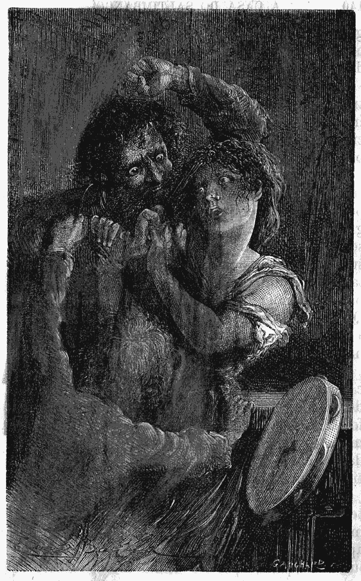
Cahiu sobre a desgraçada e espancou-a. (Pag. 140.)
Gella, pallida e quasi desfallecida, ficou estendida entre Adalberto e a
pequena Tilly; mas a velha chamou esta bruscamente e ella apressou-se a
obedecer. Quanto ao cativo ficou junto d'aquella que lhe tinha dito: «Gosto
de{141}
{142}
{143} ti,» e julgou que ella ia morrer, porque o sangue corria, pobre
rapariga, e ensopava-lhe os seus cabellos d'ebano.
—Tu vês, disse-lhe ella baixinho, com os olhos sempre fechados, se te fores, em quanto estiveres a meu cargo, elle matta-me!
N'este momento, diante de Gella e de Deus, o desgraçado pequeno esqueceu o seu paiz, a sua familia e a si proprio; viu só o sangue que corria por amor d'elle, e, exaltado pelo duplo sentimento de uma devoção profunda e de um igual reconhecimento, deitou-se aos pés da pobre rapariga e fez este juramento:
—Ó Gella, eu juro que nunca mais fugirei, em quanto estiver a seu cargo; dou-lhe a minha palavra de honra!
Gella abriu os seus grandes olhos cheios de lagrimas, as mais amargas que se podem chorar n'este mundo, fitou-os nos olhos meigos do pequeno de Valneige e respondeu apenas:
—Acredito-te.
A criança viu-a soffrer toda a noite. Lavou-lhe a cara magoada e os cabellos ensanguentados; não sabia o que havia de imaginar para lhe fazer bem, e dizia-lhe baixinho, muito baixinho: «Coragem! porque ha um céo!»
No dia seguinte, quando viu o Hercules, Adalberto sentia-se como esmagado pelo seu juramento: era não só o prisioneiro d'esse homem barbaro, mas ainda, e muito mais, o prisioneiro da amizade reconhecida.{144}
CAPITULO XI
Adalberto tinha escripto o seu nome na parede.
Com a volta da primavera tinham-se aberto as taboinhas d'aquella casa branca: e que singela e bonita ella era!
Vêde como está feliz a familia que a habita, por tornar a achar-se n'ella! Longe do bulicio das cidades parece um ninho entre as folhas. Não é a riqueza; não é tambem a pobreza. Pode viver-se alli socegado, sem custar muito parecel-o. Felizes aquelles que se contentam com pouco!
D'este numero eram os tranquillos donos d'aquella pequena casa. Tinham sido novos como toda a gente, mas já o não eram. N'elles{145} o gosto pelo campo era natural. O senhor e a senhora Deschamps tinham passado os seus primeiros annos dizendo, a passear, mau grado seu, nas ruas de uma grande cidade: «quando os nossos filhos casarem iremos plantar as nossas couves.»
Ora, as crianças apenas começavam a comer e ainda usavam touca. Foi preciso esperar trinta annos.
Nunca se viu esposos que melhor se combinassem. O reciproco desejo da felicidade tinha apagado as pequenas differenças, de modo que o senhor, que detestava o créme de chocolate, tinha acabado por comer d'elle. Ainda mais, a senhora, que antipathisava com os cães, supportava de boa vontade o valente Tom, de que seu marido gostava.
O senhor e a senhora Deschamps dedicavam o inverno ás suas filhas casadas, vivendo como ellas e ajudando-as com os seus cuidados, os seus conselhos e o seu amor. Chegado o verão, faziam dez leguas em diligencia para o irem passar socegado na casa que um parente lhes tinha legado, com um pequeno bosque cheio de sombra, um jardim cheio de flôres, um pequeno lago abundante de peixes, e por toda a parte sol, perfumes, o campo, emfim, como elles d'antes sonhavam. O isolamento d'aquelle logar era o seu maior encanto. Seria preciso dar duzentos passos, pelo menos, para ouvir dizer mal d'alguem.
Todos se estimavam n'essa casa, a começar{146} pelos donos d'ella. Eram servidos por uma estimavel criada chamada Sophia, que justificava o seu nome pela prudencia, ordem e economia que tinha em todas as coisas. Não se podia dizer se ella era cosinheira, criada de quarto, encarregada da capoeira ou da dispensa. Dependia tudo das horas e das circumstancias.
Para simplificar chamavam-lhe a governanta Seu marido, o honrado Julião, era primeiro do que tudo jardineiro, depois varredor, criado, n'uma palavra factotum. O pessoal da reduzia-se a isso: dois bons casaes em tudo.
Quando ao resto, havia Tom, excellente no fundo, mais coração do que cabeça; prendas ordinarias, mas uma fidelidade a toda a prova, e de uma moderação!... Como debaixo d'aquellas telhas todos viviam aos pares e de acordo; Tom, não vendo nenhum outro ente semelhante a elle, tinha acabado, á falta de melhor, por gostar do gato. De mais, este era recommendavel por muitas razões, bem criado, não arranhando, tendo o roubo em horror, seguindo a sua pacata dona nas alamedas do jardim, parando por amizade tantas vezes como ella, o que causava á querida senhora um enternecimento quasi perpetuo.
Como tinham resolvido ser felizes, tirando da vida todo o partido possivel, Sophia, que gostava de aves, tinha sobre a janella da cosinha um pardal sem pretenção, mas bom rapaz, o qual lhe fazia cortezias. Comtudo, tendo-se notado{147} que tomava ares de aborrecido, contra os usos da casa, tinham-lhe comprado uma gaiola maior em que metteram um segundo pardal, e ambos, desde esse dia, ficaram encantados um com o outro.
No pateo algumas gallinhas e um gallo para alegrar a habitação. Todas as manhãs ovos frescos que se comiam na casca, seguidos de uma chavena de chá. A senhora tinha adoptado este costume inglez, porque o senhor o achava bom.
Uma grande preocupação, era o cuidado no lago. O nome, é preciso convir, era pomposo, mas emfim supportava-se para não se dizer o charco... Havia n'elle um grande interesse para a senhora Deschamps. O seu querido Raymundo tinha uma paixão, a menos buliçosa de todas as paixões, mas tambem a mais perseverante.
Talvez por este lado o vento da discordia tivesse soprado, se o ousasse; não que a boa e affectuosa Sidonia pretendesse contrariar os gostos de seu marido; longe d'isso; mas elle fazia tantas imprudencias!
Era preciso vêl-o nos dias de chuva, durante quatro horas, os pés na herva molhada o braço estendido como uma taboleta de loja, com a linha de pesca dependurada e immovel, e tudo isto para pescar um pequenino peixe para frigir.
—Eu bem sei, dizia a senhora Deschamps,{148} que elle tem o seu capote forte, que lhe puz, sem elle saber, palmilhas de cortiça nos sapatos, e que tem tamancos. Bem sei que se lhe não vêem os olhos, nem as orelhas, mas só um bocadinho do nariz; não importa; eu preferia, quando chove, saber que está em casa a ler, a escrever ou a fazer as suas caixinhas:
E necessario dizer que o senhor Deschamps, para repousar dos trabalhos sem fim da escripturação, entretinha-se com diversas obras de marceneiro; tinha feito officina de uma casa terrea, e sua mulher apressou-se a pôr-lhe cortinas verdes para que a claridade não fosse forte, e um pequeno fogão para quando a estação ia adiantada. Gostava de ouvir o seu querido Raymundo aplainar; no seu gabinete não o incommodava nem o sol, que poderia fazer-lhe mal á cabeça, nem a humidade tão perniciosa para a sua garganta! Desejava nos dias de chuva, fechal-o á chave n'este lugar agasalhado, dando sobre o jardim, e onde se podia bem fabricar, sem se ser estorvado, cincoenta caixas a fio para metter umas nas outras, e fazer a felicidade dos netos e dos sobrinhos.
Mas é lá possivel dar boas razões aos amadores da pesca? Como está decidido que os peixes, ao contrario de nós, passeiam de boa vontade quando chove, o senhor Deschamps armava-se dos pés á cabeça sempre que o ceo estava escuro. Por condescendencia com sua{149} mulher, consentia é verdade em se abafar mais; cache-nez, lenço de seda, gravata grande, e chapeu baixo para coroar o edificio; mas ainda assim arranjava-se de maneira que punha o chapeu á banda, como quem dizia: «Que me importa! Não serei eu senhor de me molhar como uma sopa se quizer?»
A senhora Deschamps, no interesse da paz, não fazia mais do que um sermão respeitoso, depois do qual abandonava o marido á sua desgraçada sorte; mas, passando pela cosinha, olhava para Sophia com certo ar de intelligencia, que teem entre si os filiados na mesma corporação. Sophia, n'estes casos, não deixava de fazer uma cara de piedade, e de dizer, pensando em Julião:
—Ai! minha senhora, não me falle em homens; não ha nada peior do que elles!
Dito isto, pensava, descascando as cenouras, no que poderia dar a seu marido pelas amendoas ou no dia dos seus annos, em quanto que a senhora Deschamps estendia sobre a cama do teimoso pescador roupa branca, bom calçado e fato de abafar, para que elle podesse mudar tudo quando voltasse. Tinha notado que aquelle querido Raymundo, como todos os Raymundos que se podem imaginar, pegava de melhor vontade na roupa que lhe punham á mão, do que n'aquella que era preciso ir buscar ao armario; portanto não se esquecia mesmo do lenço d'assoar.{150}
Julgam talvez que esta excellente senhora amaldiçoava o lago, que fazia sombra á sua felicidade?
Não, teria sido uma d'essas opposições vulgares, que se encontram em toda a parte, e que dependem tanto d'um genio implicante como d'um coração dedicado. A senhora Deschamps mandava limpar as proximidades d'aquelle logar encantado; tinha ella mesma plantado um chorão tão alto como ella, que em poucos annos, á força de cuidados, tinha conseguido crescer, engrossar e chorar como os outros, reflectindo na agua a sua linda imagem, o que fazia um delicioso effeito na paizagem.
Todos os dias depois do jantar via-se a senhora Deschamps dirigir-se para ao pé da agua, e chamar com voz meiga os felizes habitantes d'aquellas ondas. Não porque elles lhe agradassem com o seu ar tolo e seus olhos de peixe; mas era o prazer de seu marido, a sua distracção, e bem innocente era! E por isso ella deitava invariavelmente na agua, á mesma hora as migalhinhas que trazia de cima da meza, juntando-lhes, de proposito, um bocado de pão cortado para isso. D'isto resultava que os peixes, sem saberem bem porque, fugiam do senhor que os procurava sempre, e vinham ao encontro da senhora, que não gostava d'elles.
Pode fazer-se idéa, depois d'esta pequena descripção, como a vida era doce e agradavel n'aquella modesta habitação a que chamavam a{151} casa branca, porque effectivamente a sua brancura destacava na solidão sobre o fundo verde dos prados e sobre as diversas côres dos alamos e das faias. Na verdade havia tanto tempo que a gente do sitio lhe dava esse nome, que, se tivessem tido a lugubre idéa de lhe pintar as quatro frentes de preto, é provavel que se continuasse a chamar a Casa branca.
O corpo e o espirito repousavam á vontade entre essas quatro paredes, tão chegadas umas ás outras, e á sombra da pequena propriedade. Uma criança, neto ou sobrinho, vinha muitas vezes alegrar a casa. Via-se correr com Tom nas ruas do jardim, e nas do pomar, ora Francisco, ou Victor, ora Genoveva ou qualquer outro. Convidava-se só um, o bastante para dar vida e animação.
Dois ao mesmo tempo estonteariam toda aquella gente, que vivia tão socegada entre as couves e as ervilhas.
E a horta! que delicia! Ajudado por Julião, o senhor Deschamps revolvia a terra a seu gosto como os filhos do lavrador de La Fontaine; os alhos eram lindos, os espinafres soberbos; os rabanetes nasciam em toda a parte onde se semeavam, e as alfaces mesmo onde se não semeavam. Não era grande a horta; duas ruas em cruz, cem passos ao todo; os sobrinhos podiam dizer como a cantiga:
Ha quatro canteiros
No jardim de minha tia...{152}
A alegria dos dois casaes era em grande parte devida á horta. O senhor dirigia e participava do trabalho de Julião, tendo cuidado, bem entendido, de deixar a maior parte ao visinho; a senhora arrancava as hervas mal sahiam da terra; e Sophia cortava tudo quanto podia para metter na panella. D'este modo todos ficavam contentes com bem pouco.
Percebe-se que os felizes proprietarios vissem cada anno reapparecer o mez de Maio com grande prazer. Este anno a senhora Deschamps tinha arrumado e acondicionado da traça o seu fato de inverno com tanto empenho, que parecia uma rapariga. É que o coração conserva-se muito tempo novo quando a tempestade o não sacode, e está solidamente amarrado a alguma margem bem tranquilla. A senhora Deschamps sabia que seu marido passava melhor no campo, e, como recebia muitas vezes a visita de suas filhas, em nada invejava a sua habitação de inverno. De mais a mais tinha elle amigos na villa proxima, e podia bastantes vezes offerecer-lhes um bom jantar ou uma pequena partida, ou ir com sua mulher distrahir-se a casa d'elles. A feliz Sidonia, em vista d'este bem estar, em que todos os annos seu marido se mergulhava, fazia com prazer os seus preparativos de jornada.
Durante o inverno não ficava a linda casa abandonada. Um jardineiro vinha de tempos a tempos arranjar os quatro canteiros, e semear{153} tudo quanto podia ser util para o governo da casa quando chegassem.
O senhor Deschamps tinha, duas ou tres vezes, o gosto de vir elle mesmo indicar ao jardineiro o que tinha a fazer, e deitar uma vista d'olhos á propriedade toda. Visitava n'esses dias a casa com um cuidado quasi paternal, e demorava-se por condescendencia na sala de que sua mulher tanto gostava.
Quando ali chegava nunca deixava de dar corda ao relogio. Este relogio era o thesouro da senhora Deschamps; offerecido pelo marido no primeiro anno de casados, era estimado não só como objecto d'arte, mas tambem como uma lembrança. O seu timbre sonoro e puro resoava por toda a casa até á adêga. Representava a nobre mãe dos Gracchos animando seus filhos a serem intrepidos romanos cheios de audacia e de valor.
A escolha d'este bello grupo de bronze era significativa. Não se entrava em duvida que a excellente senhora tivesse bastante força moral para preparar defensores da patria como a romana Cornelia; mas, não tendo tido senão filhas, tinha feito d'ellas simplesmente tres mães de familia bem dedicadas aos seus maridos e aos seus filhos. Todas ellas juntas faziam de certo menos barulho que um heroe; mas valiam tanto como elle, e sua mãe dizia que valiam tres vezes mais.
Estava-se a vinte e dois de Março, dia escolhido{154} n'esse anno para se mudarem para o campo; todos chegaram, como de ordinario, de muito bom humor. Mas que de coisas para fazer n'um dia de mudança! Repartia-se o trabalho, e, de commum acordo, abandonava-se a Julião as teias de aranha; havia muitas. Armado d'um vasculho partia para a expedição, e, como outr'ora Attila, prostrava tudo quanto encontrava, com a differença de que abria caminho á civilisação, representada por Sophia.
Esta, n'um vestuario proprio para a circumstancia, seguia seu marido n'uma distancia respeitosa, e, quando estava certa de que o conquistador tinha morto tudo, vinha com a sua vassoura e o seu esfregão, e só retirava depois de ter posto tudo em ordem, mas um pouco toscamente, como os fundadores dos imperios, que contam com os seus successores.
Effectivamente, vinha em terceiro logar a dona da casa, com o seu ar tranquillo e sereno, imagem de um poder bem assente, que, sem barafunda, melhora tudo em que toca. N'uma simplicidade de vestuario que o desejo de parecer bem ao esposo impedia sempre de ser desengraçada, a boa Sidonia começava a limpar as prateleiras, os vasos, as porcelanas, e a espanejar os objectos frageis, sobretudo a pendula. Na verdade, quando Julião, depois Sophia e depois a senhora tinham passado pela sala, o feliz dono da casa não podia deixar de dizer, com ar de bem-aventurança: «Como se está bem aqui!»{155}
Julgava então sua mulher ter conquistado o bastão de marechal, porque não imaginava maior satisfação do que a alegria do seu Raymundo.
Quando se acabou n'este primeiro dia a limpeza indispensavel, Sophia começou a pensar no jantar; e para fazer depressa um bom lume na chaminé da cosinha, dirigiu-se para a adêga, com uma véla de cebo na mão para ir buscar um pouco de carvão miudo e duas ou tres achas grossas.
Desce, entra, e o que ha de vêr? Uma taboa ao pé do tonel; o pouco carvão que restava, espalhado por todos os lados, e, a dez passos de distancia, uma fita doirada atada pelas pontas...
Vendo estes signaes da passagem de um individuo n'aquella adêga tão bem fechada, Sophia experimentou uma sensação de medo, bem natural. Comtudo, como não queria que seu marido tivesse motivo para fazer escarneo d'ella, a cosinheira, vendo que não havia, no fim de contas, nem um gato na adêga, encheu-se d'uma coragem invencivel, e chamou com voz socegada Julião e seus amos para lhes mostrar a sua descoberta.
Os homens admiraram-se; quanto á senhora Deschamps, sendo uma das suas fraquezas o ter medo da sua propria sombra, aproveitou, por tanto, a occasião. Todos quatro combinaram que o caso era muito extraordinario.{156}
Começou então o capitulo das supposições; foi comprido e interessante. Quando já não havia que dizer tornaram a subir, mesmo porque tudo isto não fazia o jantar. Voltando-se, a senhora Deschamps notou algumas palavras escritas com carvão na parede. Diz a historia, que o rei Balthazar tremeu de medo, vendo uma mão mysteriosa traçar sobre a parede da sala do festim tres palavras, que elle não podia ler. A pobre Sidonia teve, pelo menos, o espirito tão perturbado como elle, lendo esses nomes lançados no subterraneo como outras tantas exclamações de afflicção:
Papá! mamã! Camilla! Eugenio! Frederico! Rosinha! Valneige!
O proprio senhor Deschamps ficou pensativo, e Julião, que tinha sido soldado, não poude deixar de proferir dois ou tres palavrões, que lhe desculpavam nas grandes occasiões. Quanto á cosinheira, abandonada de todo pela sua philosophia, fez um enorme signal da cruz, dizendo que, sem a menor duvida o diabo, tinha passado pela adêga, e que ella nunca mais lá voltava.
—Vejamos, Sophia, disse com firmeza o dono da casa, é melhor pensar do que ter medo, que é a ultima coisa que se deve fazer. Alguem veiu aqui, não ha duvida; mas o diabo ataca as almas e não as garrafas vazias; e não escreve nas paredes nomes, que attestam innocentes recordações de familia.
Sophia respirou um pouco melhor, porque{157} tinha pelo senhor Deschamps um verdadeiro respeito, fundado na discrição da sua opinião, quando se não tratava da pesca.
Como era ella que pegava no candieiro, levantou-o, depois abaixou-o, para acabar as descobertas, e apontou com o dedo para algumas palavras que ainda não tinham visto.
—Ainda mais coisas escritas! Oh! leia, leia, minha querida senhora!
A senhora leu com profunda emoção.
—Roubaram-me porque desobedeci, foi culpa minha!
Mais abaixo havia ainda:
—Chamo-me Adalberto de Valneige... esta noite faço nove annos... tenho fome!
É preciso ser mãe para comprehender o que sentia a boa senhora Deschamps. Uma criança tinha estado fechada n'este subterraneo, só, abandonada, tinha chorado, tinha tido fome.
Levantou a fita doirada e disse com uma profunda tristeza!
—Oh! meu Deus! quando penso que esta criança tem mãe!
E dizendo isto, a excellente senhora não poude conter o chôro. Seu marido pegou-lhe na mão:
—Vamos, vamos, socéga, minha boa amiga, não te afflijas mais. Irei, mesmo ámanhã, a casa do commissario de policia, virão lavrar o auto, e, se Deus quizer, chegaremos talvez a encontrar o rasto d'esse desgraçadinho.
—Meu querido Raymundo, eu guardo a{158} fita, mostral-a-hei se for preciso, mas não quero desfazer-me d'ella.
—Porque?
—Porque, vês tu, quando entregarem esta criança a sua mãe, mandar-lhe-hei a fita. Pobre mulher! ha de conserval-a toda a vida como uma lembrança.
—Não muito alegre, accrescentou Sophia.
—Ah! Sophia! Você nunca teve filhos!... Dirá, como toda a gente, que esta fita é triste á vista; mas, quando estiver sósinha, ha de olhar para ella, ha de tocar-lhe. Oh! eu bem sei, o que ella ha de sentir.
Em quanto subiam todos juntos, o amor maternal despertou-se por tal forma no coração da boa Sidonia, que começou a scismar com verdadeira inquietação na sua neta Genoveva que, quando passeava, ia sempre um pouco longe de seus paes ou da sua mestra, não se lembrando senão de ir atraz do arquinho.
—É preciso que eu escreva ámanhã de manhã á sua mãe, exclamou ella! Deus meu! se furtassem aquella pequena!
D'este modo cada um se achou no vestibulo com uma idéa differente, mas as
quatro idéas tinham a mesma origem. Ao senhor Deschamps, como homem pratico e
escrupuloso, não se lhe tirava da idéa o commissario, uma busca, os agentes de
policia, uma circular, algumas linhas nos jornaes, e por fim dois ou tres
artigos do codigo.{159}
{160}
{161}
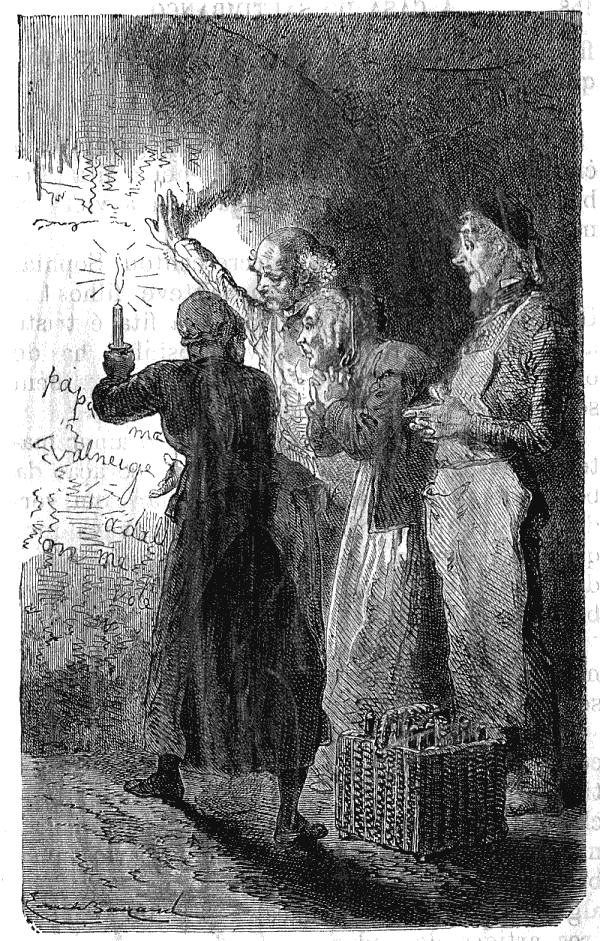
Ainda mais coisas escritas. (Pag. 157.)
A senhora Deschamps pensava na pena da pobre mamã de Adalberto, e agourava um desgosto igual para ella e suas filhas.
Sophia, muito consolada porque o demonio não tinha vindo á sua adêga, fazia tenção de contar o caso durante toda a estação e fazer ler as palavras mysteriosas a todos os seus conhecimentos; pensava mais que as cebolas, que queria deitar no assado, não poderiam coser-se bem, porque o acontecimento, a tinha demorado.
Julião, que sabia calcular, e que, n'outra posição social, teria sido um bom mathematico, perguntava a si mesmo como demonio tinha feito o rapazinho para sahir pela fresta. Entrar percebia-se, mas sahir! acabou por achar a necessidade d'alguem o ter ajudado. Ao mesmo tempo, como era cuidadoso, amaldiçoava o mofino rato que tinha roido a porta da adêga, e, sem nunca deixar de pensar em Adalberto, cuidava tambem em tapar aquelle buraco e vêr se quanto antes matava os ratos.{162}
CAPITULO XII
Adalberto era o assumpto de todas as conversações.
—Ora, até que emfim chegaram!
—É como diz, e trazemos o bom tempo.
—Já tardava. Que inverno! Como choveu! Tinha as pernas encolhidas de andar sobre o molhado.
—Faço idéa.
—Que quer, senhora Juliana, quando se está no mundo é preciso aceitar o tempo como Deus o manda.
—Vendeu bastante ao menos?
—Ora, vossemecê bem sabe, maçãs sempre maçãs. Em quanto as ha vive-se. As violetas não renderam quasi nada; e agora ainda as coisas vão peior.{163}
—Então porque?
—Porque a batata temporã já tarda.
—Ai! que preguiçosa.
—É assim mesmo. Ah! mas tudo isto são pequenas miserias; ha outras no mundo muito maiores, senhora Juliana.
—Oh! se ha! senhora Tourtebonne!
Este dialogo tinha lugar diante da casa branca. As duas mulheres estavam de pé ao lado da carreta. Viam-se, como todos os annos, com grande prazer; era uma distracção encontrarem-se duas vezes por semana, sempre no mesmo lugar. D'esta vez, desde o primeiro encontro, não se separaram. Havia com certeza alguma coisa para dizer; e pode ser que fosse a mesma coisa.
Cada uma pensava em contar a sua historia; a batata temporã, não se prestando ás confidencias, foi Sophia quem começou, voltando á sua primeira idéa, á falta d'outra melhor.
—É verdade, eis-nos outra vez de volta... não me dá cuidado; eu gosto do campo. Aqui ha só uma coisa que aborrece, é a solidão.
—Não diga isso, senhora Juliana! a duzentos passos d'uma villasinha tão bonita!
—Mesmo por isso; se nós estivessemos a dez passos era melhor.
—Faz-me rir, senhora Juliana. Vossemecê não era medrosa.
—Não era, mas sou agora.
—Queira desculpar, mas a razão vem com{164} a idade. Ora diga, como quer que entrem aqui? uma casa fechada que nem uma cidadella.
—Apesar d'isso, entraram.
—Pelo buraco da chave?
—Não, pela fresta da adêga.
—O que! vossemecê está a mangar; não cabe uma perna minha.
É preciso saber que a senhora Tourtebonne era gorda, mais do que o ordinario, e quasi redonda, de modo que, para lhe caber uma perna n'uma fresta, seria necessario fazel-a de proposito. Acostumada ás suas dimensões, não suppunha que alguem podesse penetrar por ali, e os medos de Sophia pareciam-lhe destituidos de fundamento; a cosinheira, vendo-a duvidar accrescentou:
—Não me acredita? Pois bem, venha vêr.
Dito isto, metteram no pateo a pequena carreta, e a tia Juliana, acendendo a sua véla, conduziu á adêga a tia Tourtebonne.
—Que felizes que são, disse a gorda creatura rindo ás gargalhadas, aquelles que cabem pela tal fresta! Eu mal passo pela escada! Como é estreita! não tem mesmo geito nenhum! E a porta? Mas em que pensava o architecto?
Indo ás apalpadellas conforme podia, porque a véla quasi que não allumiava,
a tia Tourtebonne chegou á adêga. Uma vez sobre o terreno, Sophia contou, sem
faltar nada, a scena do dia da chegada; o seu susto, as taboas, o diabo e a
fita doirada; o que tinha dito a senhora, o{165}
{166}
{167} que tinha dito o senhor, o que tinha dito Julião; e a vendedeira,
quando o seu espirito se achou sufficientemente preparado para uma grande
eommoção, foi convidada a voltar-se para a parede e a ler ella mesma as
palavras escritas com carvão.

Maçãs, sempre maçãs. (Pag. 162.)
Quando chegou a isto: «Chamo-me Adalberto...»
Parou de repente, e exclamou:
—É elle minha querida, é elle! Pobre pequeno, querido amorsinho! Ora vejam! quem havia de dizer tal ha uns poucos de mezes! Oh! Senhor! É possivel!...
A emoção foi tão repentina, que a tia Tourtebonne recuou tres passos, e por pouco não cahiu sobre as garrafas vazias.
—Tome cuidado! disse Sophia.
A estas palavras que revelavam um perigo, a boa mulher precipitou-se em sentido contrario, e poz os seus enormes pés no pó de carvão, que, não tendo nunca sido pisado por um tal peso, saltou até ao avental branco da vendedeira. Pois ella tão aceada, tão cuidadosa, não fez caso d'isso, e repetiu tantas vezes: «É elle! é elle!» que Sophia julgou que ella tinha endoidecido. Bem depressa viu que não era assim; a sua antiga conhecida tirou o lenço da algibeira, e enxugando os olhos, porque se enternecia facilmente, contou como n'aquelle inverno, em novembro, um pequenito loiro, d'uma apparencia delicada e fraca, lhe{168} tinha escorregado dos dedos; era a sua expressão favorita.
Em dez minutos Sophia soube tudo quanto era possivel saber-se, sem faltar o olhar carregado do supposto pae, o seu horror pelo commissario de policia, as palavras arrancadas ao senhor Baptista, que tinha sido testemunha, e a declaração de ambos feita n'aquella mesma tarde.
Se o carrinho cheio de fructa não tivesse ficado lá em cima, e se um bom bocado de vitella sobre o lume não reclamasse os cuidados da cosinheira, não se sabe quanto tempo as duas mulheres teriam ficado na adêga.
As supposições da tia Tourtebonne não tinham fim; a imaginação ajudando o seu bom coração, rodeava a criança de chimeras; tinha chegado a querer-lhe tanto que, com as intimas, chamava-lhe de boa vontade: o meu rapazinho.
Sophia tendo prevenido seus amos, estes interrogaram a tia Tourtebonne com o mais vivo interesse. Felicissima por vêr o negocio em boas mãos, disse tudo quanto sabia e mesmo mais. O senhor Deschamps viu nos seus discursos, ainda que só acreditasse em metade, indicios de que poderia tirar partido.
A senhora Deschamps sentiu redobrar a esperança, porque, depois da descoberta, não tinha cessado de pensar no dia que reuniria a criança a sua mãe. Ainda mais, acabou por{169} sonhar acordada, o que era a maneira de arranjar ella mesma as circumstancias para com mais facilidade chegar ao desfecho.
É incrivel! apezar dos seus cincoenta e cinco annos e o seu glorioso titulo de avó, a boa Sidonia deixou-se assaltar por uma grande quantidade de idéas, de projectos, de castellos no ar, todos dedicados ao pequeno da adêga, como dizia Sophia. De todas estas coisas pouco dizia a seu marido, que teria feito caçoada d'ella; ora o coração tem as suas criancices, e não gosta que o juizo d'outrem lh'as faça sentir. O senhor Deschamps, tão bom marido, não percebia absolutamente nada de sonhos, de supposições e de commentarios; quando se achava n'outro sitio que não fosse á borda do seu lago em dia de chuva, era positivo até ao ultimo ponto; e por isso apreciava Julião, que tudo fazia com methodo.
De tempos a tempos queixava-se, sem se zangar, de que se fallava um pouco de mais em Adalberto, e, se sua mulher entristecia, fazia-lhe notar que uma só das suas indagações, feita a tempo e a horas, adiantaria mais os negocios que todos os discursos e todos os suspiros que se podem imaginar: a isto a boa Sidonia, não achando que responder puxava a agulha e fallava de outra coisa.{170}
CAPITULO XIII
Adalberto tinha já passado dezoito mezes na casa do saltimbanco.
Longe do lar paterno crescia o querido exilado de Valneige. O habito, suavisando a aspereza da sua nova existencia, dava-lhe uma especie de consolação physica, mas o seu espirito e o seu coração revoltavam-se.
Não perdia, comtudo, nem a esperança nem a coragem, e não esquecia que muitas vezes seu pae tinha repetido diante d'elle, que a unica coisa que torna um homem menos forte do que a desgraça é a falta de animo.
—Eu, pensava elle, sou um homem como o papá, excepto a idade e a altura; é preciso ter coragem.{171}
O querido pequeno, no meio de estranhos, vivia das suas recordações de familia, e o seu juizo, amadurecido pelo infortunio, fazia-lhe comprehender tudo quanto havia bom e excellente em casa de seu pae. Não achava prazer algum na companhia do bom Natchès, que só tinha a intelligencia necessaria para obedecer, e que, por este facto, era menos desgraçado do que parecia, porque não sentia o horror da sua situação.
Experimentava Adalberto um grande interesse pela pequena Tilly, tão fraca e doente. Tossindo quasi sempre, a delicadeza do seu peito teria despertado a sollicitude d'uma mãe; mas Tilly não chegava a saber o que era uma mãe. Como era bonita, geitosa e meiga quasi nunca tinham que a reprehender; comtudo a velha furia, que governava a casa, achava ainda pretextos para ralhos.
Se se preparava um espectaculo e a pobre criança estava com mau parecer ralhavam-lhe. Por isso tinha ella todo o cuidado em esconder os progressos do que ella chamava o seu defluxo. Esse defluxo era uma indisposição geral, acompanhado muitas vezes d'alguma febre, e muitas vezes de vontade de chorar sem saber bem porque. Era então que dizia com tristeza a Adalberto, sempre tão compadecido d'ella:
—Tudo me dóe, mas, em mim, não importa.
As duas crianças raras vezes conversavam.{172} Desde a sua fuga, Adalberto era vigiado de perto, não só para evitar uma segunda tentativa, mas pelo receio que o seu fallar ousado trahisse a irritação que a sua indignação lhe causava. Comtudo soube que aquella interessante doente não tinha lembrança alguma da sua primeira infancia, e que a casa do saltimbanco era a unica habitação que conhecia. Ainda que nunca tivesse visto outra casa repugnava-lhe por instincto tudo quanto ali se dizia e fazia. O seu aspecto era d'uma outra origem, e ella propria o sentia tão bem que evitava quanto possivel de pedir qualquer coisa á velha Praxedes, tanto lhe custava chamar-lhe avósinha. Esta querida criança ficou espantada, quando viu no joven Valneige um coração doce mas energico, um espirito que sabia dobrar-se sem servilismo. Nas suas raras conversas ensinou-lhe Adalberto que ella tinha alma e que ha um Céo.
—Acreditas que eu vou para o Céo, perguntava ella ingenuamente?
—Sim, has de ir, porque a mamã diz que se vai para lá com certeza, quando a vontade é boa, quando se não faz mal de proposito, e quando se ama a Deus de todo o coração.
—Se eu o não amava, vês tu, é porque o não conhecia; mas, dize-me, acreditas que é d'aqui a muito tempo, muito tempo, que eu hei de ir para o Céo?
—Essas coisas não se sabem.{173}
—Pois eu penso que será brevemente, por causa de meu defluxo. Quando tusso doem-me as costas; é talvez a morte que chega, e depois o Céo.
—Pode ser, não entendo d'isso.
D'este modo o pobre preso dava á doentinha as luzes que tinha recebido de seus paes, e, quando ella queria testemunhar-lhe o seu affectuoso reconhecimento, procurava um instante em que os outros estavam ausentes, e repetia baixinho, muito baixinho ao seu amiguinho o seu verdadeiro nome:
—Adalberto! Adalberto!
Para o exilado era uma grande felicidade. Quanto á brusca filha do Hercules cada dia que passava, mais ella se prendia ao seu protegido; e apezar de lhe fallar sempre em tom rude e breve, elle não podia duvidar da sua bondade, e esforçava-se por lhe testemunhar a sua gratidão, fazendo-lhe mil pequenos serviços.
Quando, de longe em longe, os trabalhos da casa do saltimbanco, ou as compras, isolavam um momento estes dois membros da companhia, Gella cessava de ser rude, e tornava-se boa. Sentia que no seu coração desabrochavam pensamentos delicados e uma sollicitude que tinha alguma coisa do amor maternal. Em troca recebia mais do que dava; crescia moralmente, e aprendia como Tilly que tinha alma e que ha um Céo.
Na ingenua criança, não havia difficuldade{174} em aprender; mas na morena filha dos Ciganos, havia combate, e muitas vezes dizia:
—Olha, pequeno, não entendo muito de todas essas coisas; aprendi só a trabalhar para comer e beber; tenho uma cabeça rude. E, de mais, o que sou eu? nada; vivo sem saber porque nem para que. Ora! elle não gosta de mim, o teu Deus!
Adalberto respondia:
—A mamã dizia que elle ama a toda a gente. Não fazes tu parte d'essa mesma gente? Oh! Querida Gella, elle conhece-te; sabe todos os nomes e vê todas as caras.
O bom rapazinho tinha tanta sinceridade d'alma, e na voz tanta meiguice, que a pobre rapariga ficava ás vezes meia convencida, e a sua miseria moral humilhava-a diante do prisioneiro.
Havia algum tempo que Adalberto se admirava muito d'uma coisa, era do desejo que Gella mostrava de aprender a escrever certas palavras, sempre as mesmas. Estas palavras pareciam não ter entre si ligação alguma, e, comtudo, Gella prestava-lhes uma idéa seria, que tinha o cuidado de esconder.
Muitas vezes, quando se achava só com o captivo, pegava n'um pau e traçava grosseiramente no chão as letras, cujo modelo elle lhe fazia.
—Mas para que são sempre as mesmas palavras? perguntava o pequeno professor.{175}
—Cala-te, meu mestre, respondia Gella rindo. Vejamos, faze-me escrever o oe, a a, o que é preciso para escrever pae... vós... eu... etc. etc., cá tenho as minhas razões.
O pequeno, sem perceber nada, traçava com um paosinho estas palavras no chão; depois a discipula experimentava copiar; o mestre dizia que estava muito mal feito e apagava tudo com os pés. Estas lições mysteriosas eram quasi sempre um divertimento para o pobre pequeno Valneige.
Em troca, Adalberto aprendia com Gella muitas coisas; era ella quem todos os dias lhe fazia estudar o que chamava os seus exercicios, quer dizer movimentos a compasso, saltos, curvas, passos de dança, tudo quanto póde tornar o corpo flexivel. A criança tinha uma grande facilidade em comprehender e executar; era um rapaz que dava esperanças, dizia o mestre, deitando bem alto o fumo do seu grande cachimbo, o que n'elle era indicio de um contentamento perfeito. Estas disposições naturaes, juntas ao cuidado que elle tinha em satisfazer Gella, fizeram-no adiantar depressa no unico estudo que exigiam d'elle, e em pouco tempo poude figurar com vantagem nas representações, nas grandes feiras e nos espectaculos das cidades. Era um triste officio! Estar vestido como um dançarino de corda, dar cambalhotas, dançar a polka, saracotear-se até se estafar; e depois andar a pedir com a bandeja para{176} ganhar alguns vintens. E, comtudo, era o que tinha que fazer o pequeno castellão; mas, quando acabava de figurar, doía-lhe o coração e tinha vontade de chorar. O seu vestuario, ainda que muito gracioso, humilhava-o, e os applausos de toda aquella gente faziam-lhe vergonha.
Tinha sido educado em idéas totalmente differentes; seus paes tinham por principio que uma criança nunca deve occupar os outros com a sua pessoa; que a boa educação consiste em responder quando se é interrogado, sem nunca ser o primeiro a dirigir a palavra; em não fazer notar nem valer as suas pequenas habilidades, senão quando positivamente lh'o authorisem. Eis o systema adoptado em Valneige, e, apezar de Adalberto ser estouvado, estes excellentes principios, tinham impresso traços indeleveis no seu espirito. Por isso lhe era tão penoso subir para o palco diante d'um publico grosseiro, cujo ludibrio elle se tornava.
Natchès, ao contrario, nunca parecia tão contente como nos dias das grandes feiras. Estava á sua vontade vestido de palhaço, e, como se sahia muito bem das suas cambalhotas e caretas, o mestre provava-lhe ordinariamente a sua satisfação por algum presente, como um boneco de bolacha, ou um grande frito de maçã; os dons da sua magnificencia nunca iam mais longe, e Natchès era-lhe muito reconhecido. Não levar pancadas parecia-lhe já uma tão feliz sorte, que o menor presente, junto a este{177} favor, tornava-se inapreciavel. Pobre de espirito, limitado por natureza, acanhado ainda mais pela sujeição, parecia uma machina bastante aperfeiçoada; mas nada revelava n'elle a vida intellectual. A unica coisa que quebrava ás vezes a monotonia da sua escravidão, era da sua parte ataques de teima que espantavam toda a companhia, e que se terminavam, já se sabe, por pancadas. Estes ataques eram uma nova prova da sua fraca intelligencia, porque, é sabido, a teima é o defeito dos burros.
Não se póde imaginar a agitação, a actividade dos saltimbancos nos dias de grande espectaculo. O Hercules despia o velho casacão arruinado, e enfiava uma camisola côr de carne e um vestuario de phantasia, que provavelmente não se parecia nada com o de Hercules. Quando tinha desembaraçado e deitado para traz a espessa cabelleira, e que o fato justo desenhava as formas colossaes do seu corpo, o homem da mão de ferro não deixava de ter uma certa belleza selvagem. Esta belleza, comtudo, não era nada sympathica; era a dos soberbos leões que todos admiram, com a condição de uma grade de ferro os conservar a distancia.
Quanto a Karik, mascarava-se com o fato mais grotesco e não perdia com isso.
O rapazinho, uma vez que começava, obtinha do seu humor trivial uma grande quantidade de graças ordinarias, qual d'ellas mais tola, que mereciam grandes gargalhadas da multidão.{178} O pequeno Valneige acabava ás vezes por tambem rir, não dos ditos de Karik, os quaes a sua innocencia não comprehendia, mas do espectaculo de tantas caras estupidas, que, de bocca aberta, applaudiam as enormes tolices que lhe diziam, e que, ainda em cima, pagavam um vintem.
A pequena Tilly parecia muito bonita quando figurava. A cabeça coroada de rosas, os braços ornados de braceletes, o pescoço rodeado de contas, um corpo decotado, uma saia branca e doirada, muito curta, as meias côr de carne, os sapatinhos azues claros, tal era o seu vestuario. Tinha muita distincção natural, e a delicadeza da sua figura, junta ao encanto do todo, enthusiasmava o mestre quando a via dançar a polka com Adalberto, em quanto que Karik e Natchès tocavam uma musica atroadora, que não era senão grande barulho a compasso.
O final de todas as representações, o mais lindo do programma, era a dança de Gella. Quando ella apparecia com o seu vestuario de velludo preto bordado de prata, que saudava o publico, e que os seus lindos movimentos de braços attrahiam a multidão e a juntavam de roda do theatro, Adalberto não deixava de cahir em um espanto visinho da admiração. Os cabellos pretos de Gella, entremeiados com flores de romeira, cercavam-lhe o rosto moreno e os seus animados olhos lançavam faiscas; havia{179} o quer que fosse de imponente em toda a sua pessoa, e uma grande bondade no seu sorriso. O seu aspecto era o de uma bella hespanhola, e por isso lhe chamavam nos dias das festas populares: Gella, a Andaluza. Tocava muito bem castanholas, e dançava lindamente a cachucha, produzindo grande enthusiasmo nos espectadores, que a applaudiam com a voz e com o gesto, e algumas vezes mesmo lhe deitavam flores. Adalberto contemplava-a com uma affectuosa surpresa, mas um pouco envergonhado. Como lhe queria muito pela bondade que ella lhe dedicava, teria querido vêl-a sempre occupada com trabalhos de costura ou da casa, em vez de servir assim de divertimento ao populacho grosseiro, que não a respeitava.
O pequeno notava e com prazer, que, se acontecia Gella ter tido o que chamavam um triumpho, não parecia mais feliz por isso. Pelo contrario uma immensa fadiga lhe tolhia os membros; tornava-se semsabor, e muitas vezes, depois de tornar a vestir os seus vestidos pobres, dizia a Adalberto:
—Vês tu, meu pequeno, eu canso-me porque é o meu officio; mas se julgas que me divirto enganas-te. Estimaria muito mais ser como tantas outras mulheres, que vivem socegadamente em sua casa, sem andarem sempre d'um lado para o outro para divertir a uma chusma de patetas, mais burros que os proprios burros.
Exprimindo por esta forma nobres pensamentos{180} na sua linguagem trivial, a filha do Hercules suspirava; Adalberto agradecia-lhe esses pensamentos e esse suspiro, e, ao affectuoso reconhecimento, que sentia por ella, juntava uma verdadeira estima.{181}
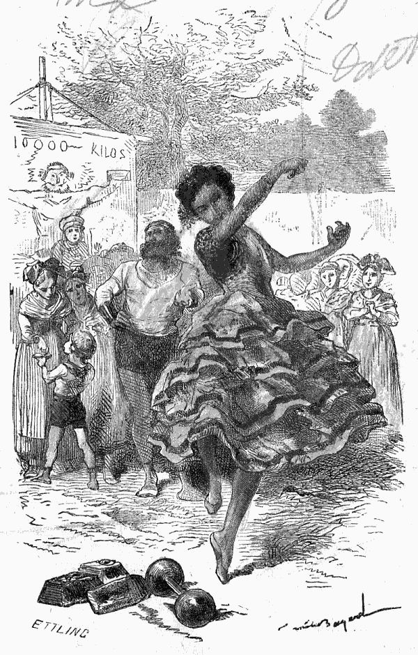
Dançava lindamente. (Pag. 179).
{182}
{183}
CAPITULO XIV
Adalberto teria sido o decimo quarto.
Os passarinhos continuavam cantando nas alamedas perfumadas de Valneige; só elles não estavam tristes, porque não tinham conhecido Adalberto. Valneige era um sitio encantador. A natureza tinha revestido as cores variadas da primavera. A agua corria sempre, mas sem se precipitar. Um bello sol doirava os campos, e os cordeirinhos saltavam nos prados, contentes de vêr suas mães, e de respirar uma suave frescura.
As mil occupações de uma grande exploração punham em movimento todos da quinta. Iam, vinham, lavravam e semeavam; era ainda{184} o trabalho e a esperança da proxima colheita que preparavam de longe.
O anno devia ser bom, e por isso havia alegria; mas no palacio, que differença entre a alegria socegada de outrora e a vida anciosa e triste, que presentemente havia.
Aquelles dezoito mezes tinham mudado tudo; os rapazes estavam no collegio, e Camilla tornara-se uma senhora, fiel companheira de sua mãe. No fim das ferias da Paschoa achavam-se reunidos todos os membros da familia por alguns dias. Tinha-se feito a diligencia de tornar este tempo o mais agradavel possivel, a fim de Eugenio e Frederico gozarem á sua vontade da casa paterna e levarem d'ella uma grata recordação.
A senhora de Valneige sabia bem que as crianças não supportam a tristeza; que na sua idade o espirito é muito inconstante e o coração muito pouco formado, para não necessitarem uma grande distracção.
Tinha-se pois occupado em lhes proporcionar todos os divertimentos, que podem haver no campo, como passeios a pé e de carruagem, jantares sobre a relva etc. Tinham installado um tiro no parque para se exercitarem, e era uma especie de concurso, porque havia um premio. A este premio juntava-se o encanto d'um grande mysterio.
Ninguem, excepto a senhora de Valneige, tinha visto o objecto em questão; não se sabia{185} o nome nem a forma d'elle e passava-se o tempo a dizer:
—Mas o que será?...
O senhor de Valneige admirava a coragem de sua mulher, que fingia muitas vezes haver-se esquecido, para que os estudantes podessem gozar as ferias sem o menor cuidado. Não que elle tivesse menos boas intenções do que a meiga e paciente Adilia; mas desde a desapparição de seu filho, a sua debil saude paralysava-lhe os esforços, e bem contra a sua vontade a inquietação matava-o. Tinha escripto uma grande quantidade de cartas, feito numerosas viagens; nada o tirava d'uma duvida mortal. Cahindo n'uma especie de marasmo, fallava pouco, gostava de estar só, e nunca pronunciava o querido nome de Adalberto. Os outros, respeitando a sua dôr concentrada, evitavam tambem pronunciar este nome, excepto a velha Rosinha, que não se podia conter e que fallava quanto podia do seu muito querido pequeno. Mesmo quando estava só, a boa mulher murmurava, continuando a fazer meia, que parecia não acabar nunca:
—E pensar que se aquelle feio rapaz tivesse obedecido nada disto teria succedido! Uma criança não conhece o perigo; é a obediencia que o livra de todos os males.
Em quanto os corações dedicados ao exilado soffriam d'estes tormentos, as ferias ião andando o seu caminho. Nada as fazia parar;{186} ainda mais dois dias e era preciso que Frederico e Eugenio entrassem para o collegio. Apezar de fallarem pouco n'isso, não deixavam de pensar muito; não porque temessem o estudo como rapazes preguiçosos, que querem passar o tempo sem fazer nada; pelo contrario, queriam ser homens e entregavam-se de boa vontade aos trabalhos intellectuaes, que a sociedade exige d'aquelles que a hão de governar um dia. Sentiam tambem quanto é vantajosa a convivencia e a sem ceremonia das relações, que estabelecem entre camaradas a semelhança das idades e a vida em commum. Emfim consolavam-se dos aborrecimentos do collegio pelas brincadeiras ás horas do recreio, cujos encantos são bem conhecidos, apezar das nodoas negras que em geral se seguem.
Só dois dias! Era preciso aproveital-os. Estavam mais vezes ao pé de sua extremosa mãe, olhavam mais para ella para levarem a sua imagem bem gravada n'essa memoria do coração, que acompanha nos estudos as crianças affectuosas.
—Vejamos, disse a senhora de Valneige ao almoço, chegou o momento de conferir ao vencedor o premio mysterioso.
—Que felicidade! exclamavam os pequenos, e Camilla tambem, por amor fraternal.
—Não quero esperar pelo ultimo dia. Ainda que saibam partir de bom humor como rapazes de juizo, conheço que o coração deve{187} estar muito opprimido para gozar francamente de qualquer coisa.
—Tem muita razão, minha querida mamã. E Frederico e Eugenio abraçavam sua mãe, que, vendo-se assim presa, disse com o seu mais amavel sorriso:
—É ámanhã ao jantar, á sobremeza que eu hei de dar os premios.
—Como, os premios!
—Sim, os premios. Ambos luctaram admiravelmente e com igual destreza. O papá fez a conta dos tiros; um de vocês tem vantagem, mas o outro segue-o de tão perto, que, na verdade, não posso deixal-os partir sem lhes dar um testemunho honroso. Terão, pois, um primeiro premio, e um segundo premio, alguns condiscipulos, um bom jantar e vinho de Champagne!...
Ao ouvirem isto romperam em palmas e gritos de alegria. Uma festa em Valneige! Havia dezoito mezes era a primeira vez que Frederico e Eugenio viam preparar um divertimento, que se parecesse com os que havia d'antes. Divertiam-se, mas sempre uns com os outros.
D'esta vez tratava-se de convites, que queria dizer tres amigos da visinhança: Paulo, Eduardo e Christiano. Estes tres eram os mais intimos, e eram optimos rapazes! Riam muito, o que é uma grande coisa! Estes sujeitinhos só comprehendiam perfeitamente uma phrase que nos{188} vem dos antigos: «para ámanhã os negocios sérios.»
Vinham pois á festa; e os paes tambem; haveria um grande jantar; a palavra grande queria dizer n'este caso muitas pessoas amigas de roda de uma meza perfeitamente servida. Quanto á etiqueta, á frieza, e aos outros attributos dos verdadeiros jantares grandes eram coisas que não se davam em Valneige onde se conversava, como dizia Rosinha, com o coração nas mãos.
No dia seguinte passaram-se mil scenas alegres e animadas no parque. Os
visinhos tinham mandado logo de manhã Paulo, Eduardo e Christiano. Cinco, eram
mais do que o bastante para fazerem coisas do arco da velha. Ao principio
Rosinha tentou intervir, fazendo algumas pequenas recommendações, e prevenindo
as quedas e os estragos, mas era o mesmo que prégar no deserto, e Rosinha
comprehendeu-o tanto que tratou de retirar-se com uma certa dignidade. Da copa
fez uma especie de entrincheiramento d'onde não se via o inimigo, o que podia
talvez fazel-o esquecer. Pegando na celebre e obrigada meia começou a trabalhar
com furor e sem descanso. Os rapazes puzeram Filippe do seu partido para
facilitar as brincadeiras, e como o amo tinha passado palavra ao cocheiro este
foi de uma condescendencia a toda a prova. Deixou apparelhar o cavallo preto e
permittiu que dessem a volta do parque, sendo Frederico{189}
{190}
{191} o cocheiro, Eugenio o lacaio e indo tres senhores dentro
da carruagem. Seguiram-se a esta outras invenções. Filippe estava de pachorra e
organisou um passeio de bote; grande divertimento! com a condição dos
rapazinhos lhe darem bastante authoridade para poder impedir que fossem todos
para o fundo.
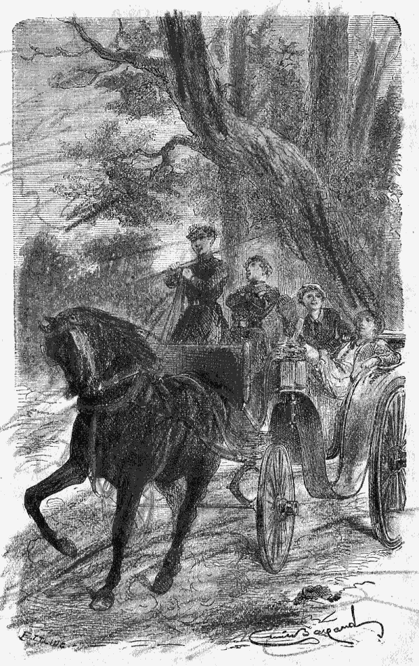
Deixou apparelhar o cavallo preto. (Pag. 188.)
Estes divertimentos, interrompidos só por um bom luncheon, duraram até ás cinco horas. Chegaram então de carruagem os paes dos tres condiscipulos. O senhor e a senhora de Valneige receberam-nos com affabilidade, e ás seis horas entraram na casa de jantar treze pessoas.
Serviu-se o jantar; os creados estavam contentes de tornar a vêr alguma animação no palacio, e tudo se passou alegremente. Houve, porém, um momento, em que a senhora de Valneige não poude vencer a sua emoção. Eduardo exclamou de repente:
—Olhem! é exquisito, somos treze; ha pessoas que têem agouro com jantares de treze:
—Não têem razão, porque se está muito bem, palavra! respondeu Paulo rindo.
O senhor de Valneige, que não perdia nunca occasião de esclarecer o espirito de seus filhos, disse algumas palavras sobre esta fraqueza.
—Mas, papá, perguntou Eugenio, d'onde virá uma tal superstição?
—É provavel, meu filho, que venha da cêa de quinta feira santa em que, entre treze pessoas, havia um traidor, que causou a morte{192} do Justo por excellencia. É possivel que um duplo sentimento de respeito pela Divindade e de horror por Judas fizesse evitar no começo do Christianismo os jantares festivos de treze pessoas; mas o que ha muito tempo substitue este sentimento puro e religioso é uma crença absurda, que faz depender de um numero a vida de um homem, como se Deus não esperasse para nos chamar a si a hora que elle mesmo marcou. Em muitas pessoas, é verdade, este prejuizo não é mais do que uma imitação, uma recordação de criança, uma fraqueza inexplicavel. É preciso evitar-lhes uma idéa desagradavel como se evita ás pessoas nervosas um susto, que se sabe não ter fundamento. Demais, se nós lhe não ligamos hoje importancia alguma, é que nenhum de nós receia o famoso numero treze, que faz effectivamente mais barulho do que mal.
Um signal de approvação respondeu ás palavras do senhor de Valneige que accrescentou com meiguice.
—Quanto a minha mulher, tão docil é em crenças religiosas, como a acho superior a superstições populares. Não é assim Adilia? Confessa que nem sequer notaste o numero treze.
—Enganas-te, meu amigo, é a primeira vez que dou por elle.
—E porque, dize?
A senhora de Valneige, tão tranquilla sempre,{193} perturbou-se; arrazaram-se-lhe os olhos de lagrimas, e, sem olhar para seu marido, como, que lhe escapou esta resposta:
—Porque elle teria sido o decimo quarto!
Um profundo suspiro acolheu estas palavras, e o infeliz pae cahiu n'um triste silencio. Sua esposa ficou afflictissima por ter deixado perceber n'esta circumstancia o continuo pensamento de seu coração; mas não podia remediar o que tinha dito, o effeito estava produzido; e, sem as crianças, que se animaram a dizer alguma coisa alheia ao assumpto, o jantar teria sido triste até ao fim. E era sobretudo o fim que mais interessava a rapaziada; suspirava-se pela sobremeza.
Eil-a! Os prados de fructa, de dôces, de bolos servem-se de roda, e de uma bandeja guarnecida de flôres pelas mãos de Camilla a senhora de Valneige tira o primeiro premio destinado a Frederico. E uma caixa contendo um relogio de prata com cadêa e chave, é o seu primeiro relogio! Todos nos lembramos da impressão produzida pelo nosso primeiro relogio, para todos é a mesma. Examina-se por todos os lados, toca-se, abre-se, fecha-se, ouve-se. Estes cinco movimentos são inevitaveis: Frederico fel-os uns atraz dos outros, como toda a gente. O que o encantava era levar o seu relogio para o collegio e mostral-o todas as tardes. Um relogio no collegio! que dita! Ah! que felicidade que haja relojoeiros!{194}
Quando Frederico acabou de vêr o relogio e de o agradecer á sua mamã, tratou-se do segundo premio, porque Eugenio estava já achando os preleminares um pouco demorados. Era o segundo premio um porte-monaie bem solido e muito bem recheado de dinheiro em prata. Eugenio animadissimo dispôz-se a contal-o, mas tres vezes se enganou, tão vivas são as emoções dos capitalistas. Viram os outros melhor na bolsa alheia, e concordaram em que Eugenio era possuidor de vinte francos.
Todos partilharam sinceramente a alegria das crianças, e até seu pae sahiu da seriedade em que tinha cahido. De repente, e quando uma conversação animada demorava á meza tão intima sociedade, eis que a velha Rosinha se precipita na sala do jantar, levada por um pensamento que lhe faz esquecer todas as ceremonias.
—Desculpe-me, senhor, disse ella vivamente, o carteiro veio ha pouco e deixou para o senhor uma carta que pôz sobre o buffete n'um cantinho, entre o candieiro e a rolha do frasco da conserva. Parece que bebeu de mais, o que é bem ridiculo para um carteiro! Tem uma lettra tão exquisita, a carta. Não será isto d'alguem que nos dê noticias do pequenino?
O senhor de Valneige, muito impressionado pela perturbação da boa velha, tirou-lhe das mãos a carta mal dobrada, escripta em papel ordinario com uma especie de tinta vermelha{195} apenas legivel, sem ordem, nem orthographia.
A senhora de Valneige ficou immovel, os convidados estavam anciosos e Rosinha esperou de bocca aberta.
O senhor de Valneige leu em alta voz:
«O seu pequeno está bem sou eu que sou a filha do homem que o tem se me dão a sua palavra de honra que não fazem mal a meu pae eu o entregarei.—resposta para o correio a M. XXX em Nantua.»{196}
CAPITULO XV
Adalberto ficou sabendo porque Gella escrevia na areia.
Um dia de manhã tinham mandado Gella fazer compras a Nantua, porque era perto d'esta cidade que estavam então acampados.
O pequeno Mustaphá acompanhava a rapariga para ajudar a trazer as provisões. O unico prazer que tinha na vida era de longe em longe um passeio com Gella. N'esse dia, á volta, e em quanto caminhava junto d'ella, disse-lhe a sua protectora:
—Olha, tomemos este atalho, d'onde se não vê a carruagem, e vamos-nos sentar um instante; tenho uma coisa para te dizer.
—O que é, minha boa Gella?{197}
—Oh! grandes negocios; mas primeiro vais prometter-me não dizer palavra da nossa conversa.
—Ah! Gella, não tenha medo. Para que ha de desconfiar de mim? Posso eu fazer-lhe mal? E não vê que ha seis mezes, que não tento fugir, com medo que seu pae se enfureça comsigo?
—És muito bom rapaz, bem sei. Ouve: tu não podes viver assim, é preciso acabar com isto. Tenho muita pena quando penso que tens papá, mamã, uma casa, e que podias ser feliz.
—Eu tambem tenho pena, mas o que hei de fazer, se gosto da minha Gella? Ir-me-hia embora, acredite, se não fosse o receio de lhe fazer levar pancadas, e sabe Deus o que mais!
—Pois bem, tudo se ha de arranjar; vou dizer-te o meu segredo.
—Um segredo?
—Sim, um grande segredo. Eu escrevi a teu pae.
—A meu pae? para que?
—Para lhe pedir uma coisa. Lembras-te de eu te dizer uma tarde: meu pequeno, sabes tu o que quer dizer palavra de honra?
—Sim, lembro-me. Eu disse que era muito feio dar palavra de honra e faltar; que um dia em Valneige o papá tinha ralhado com Frederico, por me ter dado a sua palavra de honra de que não faria trapaça ao jogo da bola e{198} tel-a feito. O papá zangou-se muito e disse a meu irmão: Bem se vê que não sabes o que é palavra de honra; quando um homem honrado a dá, está compromettido solemnemente. Se quando fores homem, te acontecer faltar á tua palavra, não te chamarei mais meu filho. D'aqui até lá, responde sim ou não, é quanto basta.
—Conheço essa historia, já m'a contaste e disse commigo n'esse dia: Visto que se educam tão bem as crianças em Valneige, é porque é boa gente; quando dizem sim é sim, quando dizem não é não.
—Oh! de certo, lá em casa é assim. Ninguem mente. Mas, diga-me, o que escreveu ao papá?
Gella hesitou um pouco, depois olhou com bondade para a criança e com um tom grave respondeu-lhe:
—Pedi-lhe a sua palavra de honra de que não faria mal a meu pae; elle deu-m'a e então eu n'uma segunda carta, indiquei-lhe as festas a que havemos de ir, afim d'elle te procurar quando andares pedindo.
—Como! fez isso?
—É verdade. Fizeste-me doer o coração com tudo quanto me tens dito de tua mamã, que faz tanto bem, e d'aquella igreja onde tua irmã, toda de branco, fez a sua primeira communhão. Queres saber? ás vezes chorava de noite e dizia commigo: pois tu, desgraçada,{199} vais deixar este innocente n'um sitio onde elle vê só o mal, podendo salval-o com uma palavra?
—Que boa que é, minha querida Gella! tornarei então a vêr meus paes?
—Sim, has de vêl-os, meu pequeno.
—Mas a Gella o que ha de fazer para não a matarem? Dizia...
—Eu não corro risco, do momento em que te levarem, quando me não estiveres confiado, no meio de muita gente, por exemplo n'um dia de representação. Não importa, se fiz o que fiz é porque tenho confiança em ti e na palavra do senhor de Valneige. Bem sabes, um pae sempre é pae. O meu é aspero, é verdade, não me faz feliz; mas apezar disso se gosta d'alguem n'este mundo é de mim.
—Deveras? disse Adalberto espantado, porque não podia comprehender, que aquelle homem amasse alguem.
—Admiras-te? Pois ha quatro annos estive eu doente, bem doente, e elle estava como doido, e um dia, talvez não acredites, sentado ao pé da minha cama, vi-o chorar.
—Está fallando sério?!
—É a pura verdade. Ha muitos homens assim na nossa gente. São máos, têem comtudo um lado bom. Mas, disse eu commigo, se previno aquelle senhor, quando elle encontrar seu filho manda prender meu pae, que será julgado, condemnado, mandal-o-hão para os trabalhos{200} forçados, sósinho, desgraçado, e, se fôr eu a causa, morro de certo! Tem-me dado muitas vezes pancadas, é verdade, mas foi elle quem me deu de comer quando eu era pequena, que me livrou dos máos, e emfim é meu pae! Mas agora, que eu tenho a palavra de honra do senhor de Valneige, não receio nada.
—Oh! não; não receie! Meu pae não a atraiçôa! Oh! como estou contente! Nem sei o que digo, parece que até me falta o ar.
—Pobre pequeno, ainda bem que posso proteger-te! Fizeste-me grandes serviços; sem ti ignorava que houvesse um Céo, nunca m'o tinham dito, e do teu Deus nunca me tinham fallado.
—Agora, que Gella o conhece, póde bem servil-o.
—Como queres tu que eu o sirva aqui? Emfim, é talvez servil-o separar-me de ti para sempre. Se tu me esquecerás quando fores feliz?
—Nunca, disse a criança, olhando para a pobre rapariga. Hei de fallar de Gella á mamã que tambem lhe ha de querer muito.
—Obrigado, meu pequeno, obrigado! ai! quando tu te fôres embora, meu Deus! meu Deus!...
Dizendo isto, Gella olhava para o Céo, como se começasse a comprehender a vontade de Deus, e a criança viu duas grandes lagrimas, que lhe desciam pelas faces. Era a primeira{201} vez que chorava na sua presença. Diante da commoção d'esta natureza tão rude e forte, sentiu-se profundamente enternecido. Ambos estavam sentados sobre a relva no meio de uma grande planicie, onde tudo era socego e silencio. O pequeno pensava no seu papá, na sua mamã, nos seus irmãos e irmãs e tão commovido estava que não podia dizer nada. Ella tambem desejava fallar; mas não sabendo como se havia de exprimir, ousou pela primeira vez pronunciar, diante de Deus e longe dos homens, o nome do prisioneiro e repetiu duas vezes baixinho, como a pequena Tilly: Adalberto! Adalberto!
—Oh! que felicidade! disse o meu nome!
—Querido pequeno, bem cedo será tua mãe quem t'o dirá.
—Bem cedo?
—Espero que sim. Fiz o que pude; agora teus paes que façam o resto. Têem as necessarias indicações para te encontrarem.
—Mas como poude escrever-lhes? Não vejo na carruagem tinta nem penas.
—Ora! é bem facil. Comecei por guardar cuidadosamente um bocado de papel branco, em que um logista tinha embrulhado a fita escarlate para o meu corpete de velludo preto; depois cortei em bico um bocadinho de páu para fazer de penna; mas para ter tinta é que eu não sabia como havia de ser. A tinta faz nodoas, teriam desconfiado d'alguma coisa. Achei{202} que o melhor meio, era fazer um golpesinho no dedo e escrever com o meu sangue.
—Pobre Gella! fez-lhe muito mal?
—Que importa! Escrevi como pude, tudo errado, já se sabe, mas o teu pae poude ler porque me respondeu no dia seguinte.
—Oh! mostre-me a sua carta! só a letra.
—Não percebes que já a queimei?
—Ah! é verdade. Se a achassem, que desgraça! E como era o sobrescripto?
—Isso era a grande difficuldade. Sabia que meu pae ia ás vezes buscar cartas ao correio, e que estas cartas nem sempre tinham o seu nome, mas certos signaes combinados; decidi-me por este meio e consegui. Ah! mas para ir buscar a resposta ao correio de Nantua que trabalho! emfim fez-se.
Agora é esperar.
—Como eu hei de ser obediente quando voltar para Valneige!
—Espero que sim. Teus paes só te davam bons conselhos, é preciso seguil-os. Has de dizer á tua mamã, que sempre te aconselhei bem. Oh! não lhe deixes suppôr que eu sou má rapariga.
—Oh! socegue!
Como o tempo ia passando, Gella poz-se a caminho e apressou o passo. Quando
se aproximou, com o seu pequeno companheiro da casa do saltimbanco, ouviu uma
grande questão entre o Hercules e o seu filho, que, exagerando{203}
{204}
{205} os principios recebidos, se tinha fartado de mentir e de roubar,
abrindo furtivamente a gaveta em que seu pae mettia o dinheiro; a disputa era
grande; pragas, blasphemias, pancadas, nada faltava.
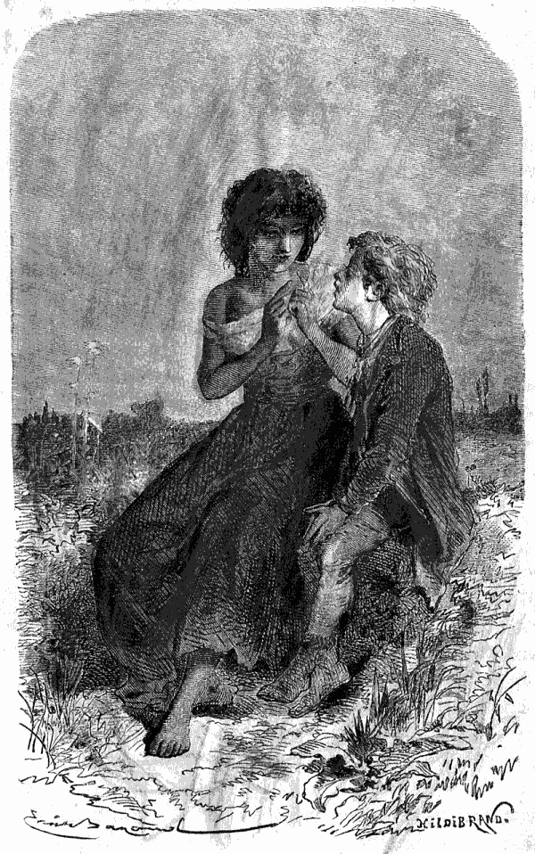
Era fazer um golpesinho no dedo. (Pag. 202.)
Entrando para a carruagem Adalberto sentiu-se desesperado. A sua sorte pareceu-lhe então mais horrorosa, comparando-a com as dôces imagens que a esperança lhe tinha feito conceber. Com receio de se achar envolvido n'esta ignobil scena foi sentar-se sem dizer palavra n'um velho banco, perto da porta, e Gella, que começava a ser boa para todos, esforçou-se por apaziguar seu pae e por afastar a velha Praxedes, que se regalava em o irritar com os seus ditos.
Quando a zanga não era excitada pela propria filha, o Hercules deixava-lhe ás vezes bastante poder para pacificar a todos. É que a rapariga era como um raio de sol n'estas trevas moraes, em que todos se agitavam. Seu pae, é verdade, era capaz de tudo em um momento de colera, mas gostava d'ella a seu modo, como ella dizia, e a sua bella Andaluza, como elle lhe chamava nos seus raros momentos de bom humor, era o anjo bom d'aquelle coração semi-barbaro.{206}
CAPITULO XVI
Adalberto estava ali.
Que lindo tempo! nem uma nuvem no Céo! um perfeito dia de primavera!
Josephina, bonita alsacianna de treze para quatorze annos, tinha acabado de se enfeitar e de se pentear com muita pommada. Estava contentissima, fazendo tenir na algibeira a sua pequena fortuna de tres tostões, e esperando á porta que os seus amigos passassem e a levassem como se tinha ajustado. Estes amigos eram a tia Tourtebonne e o senhor Baptista; iam á feira de M...
O tempo corria, e a rapariguinha não deixava de estar inquieta, vendo demorar-se um{207} prazer ha tanto tempo esperado. É que a tia Tourtebonne, a quem seus paes a confiavam era a exactidão em pessoa, e, por força, alguma circumstancia independente da sua vontade a demorava. Effectivamente não se enganou; eis o que tinha succedido.
Deve primeiro saber-se, que a feira de M... occupava muito o pensamento da tia Tourtebonne. Havia mais de quarenta annos que se não lembrava de faltar a ella uma só vez. Fazia negocios todo o anno, mas esta feira, que durava tres dias, achava-a invariavelmente em optima disposição de espirito. Fazia tenção de se divertir, e por isso se divertia muito. Era um d'esses genios felizes que qualquer coisa distrahe, que ri porque os outros riem, que está contente porque os outros estão contentes.
Todos os annos combinava com alguns visinhos irem na mesma carruagem, porque o logar da festa ficava distante dez kilometros. Este anno tinha um excellente meio de transporte; a carroça do senhor Baptista. Ia-se bem saccudido, é verdade, e a velha Manon não deixava de tropeçar, mas afinal chegava-se. O bom do homem, que não tinha nada de divertido, ia simplesmente á feira no interesse dos seus queijos e dos seus arenques, esperando encontrar algum rendeiro rico com quem podesse travar relações. Este anno, coitado! ia sobretudo porque havia tres semanas que tinha insupportaveis dôres de dentes, que o não deixavam{208} dormir, e porque lhe asseguravam que um certo dentista, bem conhecido na feira de M..., os arrancava sem dôr. Estas palavras têem um poder magico sobre o espirito dos camponezes; mas o pobre homem, que de certo ainda não tinha adquirido a elegancia das cidades, tinha comtudo perdido um pouco da sua simplicidade nativa no trato dos cidadãos. Por isso não acreditava senão metade no prodigioso talento de que lhe fallavam.
Em consequencia d'esta falta de fé, demorava a partida de minuto para minuto, achando que era sempre cedo para apparelhar, que o seu relogio se adiantava, que era preciso deixar comer a egoa; depois porque ella tinha sede... Ora, o que querem? os outros iam divertir-se, e elle, no fim de contas, ia a casa do dentista, o que todos nós sabemos não ser caso de pressa.
Josephina, depois de duas horas de espera, julgou ouvir o trote desigual da velha Manon. N'um instante abraça a sua mamã e eil-a na carroça.
—Até que afinal partimos! que felicidade! oh! como eu estou contente e como nos vamos divertir!
Josephina no meio d'estas alegres expansões, olhou para a cara do senhor
Baptista. Custou-lhe a conter uma gargalhada. Esta dôr de dentes, justamente no
momento em que iam dar cabo d'ella, tentava um esforço supremo e ameaçava uma
grande inchação. O desgraçado, para{209}
{210}
{211} conjurar tantos males reunidos, tinha applicado sobre a face
direita um enorme parche d'algodão em rama, seguro por um lenço azul atado por
baixo da barba. Tinha além d'isto amarrado a cabeça com outro lenço vermelho, e
por cima um barrete d'algodão branco, sobre o qual se enrolava como um turbante
um terceiro e grande lenço de seda côr de vinho; e apezar d'esta armação ter
attingido uma altura respeitavel, o honrado Baptista tinha agarrado por
costume, no seu forte boné de lontra, e tinha-o pespegado sobre tudo isto!
Imagine-se que effeito!
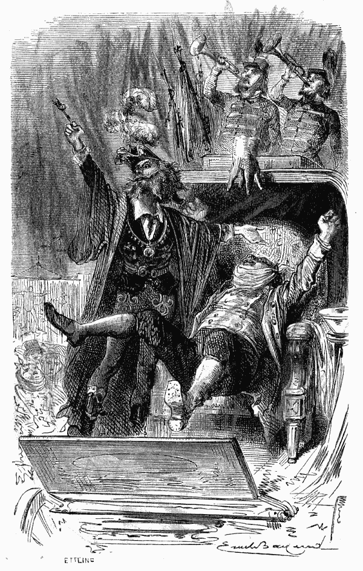
Os arrancava sem dôr. (Pag. 208.)
Josephina estava espantada. Olhava para a sua velha amiga, a tia Tourtebonne, que fazia todas as diligencias para não perder o seu sério, ainda que o seu bom coração se resentisse dos soffrimentos do seu companheiro de jornada. Como as chicotadas inoffensivas que era preciso dar a Manon de dois em dois minutos occasionassem ao paciente pequenas saccudidelas, que lhe augmentavam a dôr, a boa da mulher tomou sob a sua responsabilidade o animal e o seu tropeçar, e, de redeas na mão, começou a governar. «Hi! hi! anda, anda Manon!» Esta maneira de a animar acompanhada do continuo movimento de braço eram necessarias, para que Manon não parasse de todo; era pacifica mais do que tudo, e não gostava de mudar de logar.
Quanto ao seu dono estava absorvido pelas{212} dôres de dentes, o que é facil de perceber, porque não ha nada que absorva tanto.
Houve antigamente philosophos que negaram a dôr. Oh! de certo que não tinham tido dôres de dentes! O Senhor Baptista tinha muito bom senso para se assemelhar a estes senhores, e não seria elle com certeza quem negasse a dôr. Pelo contrario não se passavam cinco minutos sem dizer ih! ou ai! alguma coisa emfim que attestasse a presença do inimigo. Como era naturalmente laconico, não dizia mais; mas a sua cara dizia o resto. Não sahia de todo aquelle preparo de algodão e de lenço e companhia, senão uma bochecha que parecia mais morta que viva, um olho amortecido, um meio nariz sem expressão e um canto da bocca tristemente descahido, signal d'uma grande desconsolação. Nem pensava no feliz cachimbo, que, com o queijo e o seu companheiro o arenque, fazia o encanto d'aquella tranquilla existencia; emfim não achava n'este mundo senão aquelles repellões!.... Pobre homem!
Josephina, apezar da sua vontade de rir, tinha um coraçãosinho bom e lamentava o senhor Baptista. Quanto á sua visinha teria de boa vontade acceitado metade d'aquelle terrivel mal para alliviar o seu companheiro; disse-lh'o nove ou dez vezes; mas, como era uma coisa impossivel, o pobre homem cortejava-a por delicadeza, ficando com todas as suas dôres.{213}
Chegaram ao meio da feira. Josephina abria os olhos tres vezes mais do que costumava.
Passava esta rapariguinha uma grande parte do tempo no meio d'um lindo prado guardando as vaccas de sua mãe; tinha um viver doce mas um pouco monotono. Dava portanto grande apreço aos divertimentos, e a feira estava tão bonita, tão bonita! Fazia-se tanta bulha! A bulha é a base de todas as festas populares, e não faltava n'esta. Os cavallos, os bois, as vaccas, os carneiros, as cabras, os porcos, tudo isto rinchava, mugia, balava e grunhia sem se querer calar.
Os cães ladravam em todos os tons, e os gallos faziam mais bulha do que todos com os seus continuados e magnificos co-co-ro-cós... Dir-se-hia que estes animaes tinham combinado entre si atordoar a multidão, que, para não perder a superioridade, gritava mais do que todos. Oh! como tudo estava bonito e em boa ordem! Aqui um charlatão, chamava toda a gente para a livrar dos callos; ali uma somnambula via melhor do que todos, ao perto, ao longe, como quizessem, sem oculos, e mesmo com os olhos vendados. Á direita os cães sabios faziam exercicio; á esquerda os macacos faziam rir os homens imitando-os o melhor que podiam. A cada passo um botequim ao ar livre, sempre rodeado de amadores; grande tentação para o senhor Baptista em tempos ordinarios: um copo de vinho nunca faz mal; sabia-o elle bem, e{214} por isso bebia um muitas vezes; mas hoje, coitado! apenas tinha tempo para gemer.
Entre todos estes divertimentos, todas estas distracções, acima de todo este trabalho havia uma coisa que occupava constantemente o espirito de Josephina; era a maneira tumultuosa por que os pellotiqueiros annunciavam que se tinham juntado n'esta feira. Este anno eram ainda mais do que o costume, e a bonita rapariguinha ouvia com ingenua alegria os admiraveis e estrondosos bumbuns! mil vezes repetidos pelo grande tambor e que significavam: Venham depressa, porque vamos começar!
Tinham ajustado tomar os logares na primeira fila a fim de vêr, sem perder nada, os jogos, as danças e as cambalhotas. Josephina esperava divertir-se immenso; mas tinha de se ir contentando com o que encontrava, porque o senhor Baptista, no meio das maravilhas d'este dia, só via as suas dôres de dentes, e a todos succederia outro tanto.
A tia Tourtebonne, como boa conselheira dizia:
Meu querido senhor Baptista, se me quizesse acreditar, procurariamos sem demora a carruagem pintada de encarnado, que tem um tambor adiante, uma trombeta atraz e cortinas aos lados. Uma vez a coisa feita não pensaria mais n'isso e teria ainda um bom bocadinho; que diz?
O pobre homem não se atrevia a desapprovar á sua visinha que tinha toda a razão, por{215} isso não respondia senão: hum! n'um certo tom, que equivalia a dizer: amen! Comtudo fazia o que podia para não vêr por em quanto a maldita carruagem pintada de vermelho, que toda a gente, que não tinha dôres de dentes, via muito bem.
Se lhe diziam: «Olhe, ali á tem!» experimentava no mesmo instante um grande prazer em comprar bolos para Josephina, e extasiava-se diante de algum illustre ventriloquo.
Josephina era cruel; sabia que não se estabeleceriam na feira sem fazer a operação; não pensava portanto noutra coisa, e estendia a vista sobre esta multidão, que enchia todo o campo. Quem procura sempre acha; chegou o momento em que era impossivel deixar de ver a vinte passos a carruagem vermelha com o seu circulo de basbaques, a maior parte d'elles com um lenço pela barba e uma cara de palmo e meio, domo se fosse o costume de rigor para ser admittido ás recepções.
A quarta parte de face, que se via na cara do bom do homem, tornou-se livida em vez de pallida.
—Vamos; senhor Baptista, o que tem de ser seja. Porte-se como um homem. De que tem medo? Olhe que não é coisa do outro mundo.
Estas palavras pronunciadas com firmeza pela tia Tourtebonne animaram o paciente, que com a coragem que póde ter um cobarde envergonhado, dirigiu-se para a carruagem e esperou a sua vez. Cessaram immediatamente as dôres{216} de dentes, o que o fez pensar em voltar para traz; mas tinha-se adiantado muito, ficou por honra de firma.
Ainda que o charlatão não cessasse de declarar com emphase que arrancava os dentes sem dôr, não se sahia das suas mãos sem a cara transtornada e as lagrimas nos olhos. Com effeito toda a gente achava que fazia doer, mas o annuncio não mentia, era pois a clientela que se enganava. Um tinha mexido a cabeça, outro o pé; este estava mal disposto, aquelle tinha tido a imprudencia de comer um quarto de hora antes da operação; alguns tinham desde muito as gengivas em mau estado e todos tinham os dentes apertados. Estas justificações, que o ultimo cliente nunca acceitava, deixavam, comtudo, ao que se lhe seguia um resto de esperança.
O senhor Baptista subiu para a carruagem; houve um momento de silencio. O celebre operador, vestido como um principe estrangeiro, de chapeu de plumas e mangas arregaçadas, absteve-se esta vez de palavras ociosas, e, com ar altivo, preparou-se para vencer pela força o que lhe oppozesse resistencia; era o segredo da sua arte. O senhor Baptista fez depressa conhecimento com este genero de talento, e sentiu o que todos sentem n'este caso.
Não se póde dizer uma palavra; o dente arranca-se porque não póde deixar de ser, mas parece que a cabeça vai atraz d'elle.{217}
O tambor e a trombeta uniram-se espontaneamente para annunciar a toda a gente que o senhor Baptista era o mais feliz dos mortaes; e, com effeito, não se tinha ouvido o grito agudo do pobre homem, mas só um rrran! rataplan! pan! pan! depois uma musica alegre, e mais longe um realejo, que tocava desde a aurora o Galope de Gustavo. O senhor Baptista pagou e desceu depressa, depressa; tão azafamado estava o operador.
O dente tinha sido arrancado; n'este ponto estavam de accordo, mas sem dôr é que não. O senhor Baptista, sempre indulgente, pensou que tinha provavelmente mexido sem querer. Não disse palavra, não proferiu uma queixa, mas, com ar commovido, consolou-se d'este desengano cuspindo todo o caminho; não havia outra coisa a fazer.
Afinal a emoção, a sacudidela, e o Galope de Gustavo ainda em cima acabaram por estonteal-o; a senhora Tourtebonne, como prudente que era, fez com que elle se sentasse.
Josephina, graças aos seus quatorze annos, ficou espantada. Julgava que uma vez este negocio terminado o bom do visinho passaria a divertir-se muito, e que todos os abafos seriam desnecessarios. Quanto se enganava! O senhor Baptista juntou aos outros o lenço da algibeira, com que tapou a bocca, e declarou que tinha mais uma dôr de cabeça furiosa.
Que desengano! Josephina assustou-se com{218} a idéa de tornar a subir para a carreta, mas felizmente não foi preciso. O honrado mercador de queijo installou-se n'uma pequena casa de pasto improvisada, estabelecida por tres dias debaixo de uma barraca parda, e em vez de fazer ali algum gasto entregou-se pelo mesmo preço ao aborrecimento resultante do seu incommodo.
Ainda que d'uma apparencia muito feia o bom do homem não era nada egoista; exigiu pois dos seus companheiros de viagem que não fizessem mesmo caso d'elle. Josephina achou esta idéa magnifica; mas a senhora Tourtebonne prometteu vir de vez em quando perguntar como elle estava, e partir no meio do dia se o seu incommodo se tornasse insupportavel.
Josephina resignou-se e andou com a sua digna conductora uns duzentos passos n'uma hora; tantas coisas havia para admirar!
Apezar de se extasiar vendo isto e aquillo, a boa rapariguinha exclamou:
—Oh! o que eu desejo vêr, mais do que tudo, são os saltimbancos.
—E eu tambem, minha pequena.
—Bem sei eu porque. Está pensando no seu rapazinho?
—Justamente. Desde esta manhã que só penso n'elle, e toda a noite sonhei com aquelle desgraçadinho querido filho!
—E acha que poderia reconhecel-o?
—Oh! com certeza se o vir de perto, um loirinho, que tem ar d'um principe, e que se{219} chama Adalberto. Pobre anjo! pensar a gente que elle tem mãe! É horroroso! Se eu tivesse tido filhos e me succedesse tal desgraça endoidecia.
E n'isto, com grande espanto de Josephina, a tia Tourtebonne enterneceu-se, pensando na familiasinha que podia ter e que não tinha.
A conversação sobre Adalberto não podia interromper-se; ambas repetiam:
—Está talvez ali! Quem sabe?
De repente, no meio da multidão avistam os caros amigos Julião e sua mulher, que seus amos tinham mandado á festa, para que se divertissem um bocado.
Este encontro foi theatral; prometteram não se separarem; e o bondoso Baptista, feliz por vêr que as senhoras tinham um cavalheiro, e cansado da barafunda que encantava Josephina, aproveitou a occasião para se retirar. Julião tinha tratado de segurar meio de conducção para a volta; combinaram que partiriam todos quatro juntos, e começaram a gozar tranquillamente em quanto o senhor Baptista se safava com tenções de esquecer n'um bom somno o tal sujeito que fazia tanto mal, arrancando os dentes sem dôr.
Divertiram-se muito, muito. Josephina gastou tres tostões. Comprou bolos que offereceu amavelmente a todos, bebeu duas limonadas, ganhou na loteria, sahindo-lhe a primeira vez um copo para comer ovos cosidos, deu um vintem{220} a um cego, e a boa pequenita, guardou dois vintens para fazer de generosa quando chegasse a hora feliz do espectaculo.
Essa hora chegou. Fartaram-se de habilidades, de dansas, de pantomimas. Josephina pulava de contente, mas atravez da sua alegria jactava-se uma grande preoccupação.
Em cada pequeno pellotiqueiro queria reconhecer Adalberto. A tia Tourtebonne e Sophia não cessavam tambem de pensar no pequeno da adêga, mas a pequena camponeza, com o enthusiasmo da sua idade, não duvidava da sua presença, chegando a parecer-lhe impossivel que elle não estivesse ali. Tinham estas quatro pessoas todas a mesma idéa.
Sophia dava tudo para poder levar á sua ama a criança, cuja sorte ella não cessava de deplorar. A tia Tourtebonne imaginava a alegria que sentiria a pobre mãe do pequeno da adêga, quando lhe levassem o seu querido filhinho; Josephina desejava ardentemente um acontecimento, uma aventura, uma emoção; teria sido uma felicidade para todos e um divertimento para ella; o senhor Julião, amigo zeloso da justiça e pontual antes de tudo, só queria uma coisa—denunciar aos policias a infame companhia e fazel-a prender, afim dos ladrões pagarem na cadeia o crime commettido; era tambem esta a opinião de seu amo.
Movidos por estes diversos sentimentos gastaram horas a passear pela feira; um lindo dia{221} favorecia os passeantes, mas apezar d'isso havia entendedores com idéas negras que repetiam: «Vamos ter agua!» Josephina achava que se não devia dizer uma coisa a que ninguem prestava attenção. Entretanto ia-se acabando o dia e todos pensavam em voltar para suas casas, e, bem contra a vontade de Josephina, foi preciso tomar o caminho que conduzia á carruagem. Umas nuvens negras ameaçavam chuva, havendo já quem sentisse cahir alguns pingos d'agua.
A cincoenta passos da carruagem Julião exclamou:
—Olhem para a Andaluza! vale a pena de se vêr! Dez minutos mais ou dez minutos menos não faz nada ao caso.
Josephina approvou Julião.
—Como ella é bonita! accrescentou o marido de Sophia.
—E como ella dança bem, com as suas flôres de romã na cabeça, respondeu a tia Tourtebonne, que se não fartava de a admirar, dizendo a todo o instante: Oh! se me fizessem mexer assim cahiria por terra, com certeza!
Toda a gente estava espantada; a hespanhola era extraordinaria e todos lhe gritavam: «bis! bis!» A pobre rapariga saudava, dançava e tornava a saudar. No momento em que, estafada, ia para se retirar, uma criança vestida como um dançarino de corda rompeu{222} por entre a turba com uma bandeja na mão; parecia que o signal para partir estava dado, toda aquella gente se affastou. Cada um deu meia volta á direita ou á esquerda, para não despender um vintem e conservar a sua dignidade aos olhos dos outros.
O movimento instantaneo de toda a multidão tinha é verdade differentes causas: a dansa acabára, Gella tinha desapparecido, a noite aproximava-se e uma forte pancada d'agua desconsolava e punha todos em debandada.
Corriam, encontravam-se, empurravam-se; os felizes abriam os guardas chuvas, os outros cobriam a cabeça com o lenço.
Era uma scena de barulho, de confusão, de gritos, de mau humor, de que se não póde fazer idéa.
A encantadora e loira criança continuava o seu peditorio.
Chegou perto de Josephina, que não tirava os olhos d'ella. A pequena alsacianna, levada pela sua idéa, puxou-lhe pelo braço e disse-lhe com um ar absoluto:
—Não é verdade que te roubaram, e que te chamas Adalberto?
O pequeno não pareceu nada admirado, olhou com toda a confiança para Josephina e disse-lhe que sim.
—Conheço-te! conheço-te! exclamou a tia Tourtebonne abrindo-lhe os braços.
O pobre pequeno lançou-se n'elles sem hesitar;{223} parecia adevinhar toda a bondade d'aquelle coração.
Ao mesmo tempo a chuva cahia em torrentes, o tumulto tinha chegado ao seu auge e mal se via na escuridão, que augmentava, um pequeno pellotiqueiro, que tres ou quatro pessoas arrastavam precipitadamente para a estrada.
A criança subia já para a carruagem, quando Julião disse ás mulheres:
—Partam sem mim, quero fallar com os policias, o negocio não ha de ficar assim.
—Deixa os policias e vem comnosco, Julião; uma vez que pilhámos o pequeno é tudo quanto queremos.
—Nada, nada. A cadeia não foi feita para os cães.
Julião desappareceu.
Ao mesmo tempo, uma mulher com vestuario de camponeza, bonita, pallida e tremula precipitou-se para a carruagem gritando com desespero:
—És tu?
Sophia, assustada, cobriu com o seu grande chale a cabeça do pequeno, e a sua companheira disse ao conductor:
—Partamos! partamos!
O cavallo partiu a trote, e a desgraçada mulher, encostando-se a uma arvore, desmaiou e cahiu por terra.{224}
CAPITULO XVII
Adalberto volta para o subterraneo.
Não se póde descrever a alegria da senhora Deschamps quando lhe levaram em triumpho o rapazinho, que logo conheceu a casa branca. Imaginava a boa senhora ter encontrado um dos seus netos, e provava-lhe com os seus carinhos verdadeiramente maternaes um tal affecto, que Adalberto, em pouco tempo, estava perfeitamente á vontade. Desde muito que elle só via miseria de roda de si; póde por isso fazer-se idéa do que sentia percorrendo aquella casa tão aceada, tão bonita e que se não mexia!
Josephina e a sua gorda amiga não o deixaram sem lhe prometter tornar a vêl-o, promessa{225} que elle acceitou de todo o coração, porque sentia por ellas o mais vivo e justo reconhecimento.
O senhor Deschamps, homem positivo, tinha opposto ao primeiro enthusiasmo uma certa incredulidade; mas a duvida não podia resistir diante das respostas do rapazinho ás mais indagadoras perguntas.
Sophia desejára conduzil-o logo ao subterraneo. Seu amo não consentiu sem o ter interrogado. Adalberto fallou do carvão com que tinha escripto o seu nome e todos os nomes da sua familia; da fita doirada que tinha deitado no chão; soube dizer o que havia na adêga; indicou o logar onde estavam as garrafas vazias, o logar do tonel e o das tabuas. Fallou tambem dos bichos pretos e do rato que tinha roido a porta. O que notaram sobretudo foi o sobresalto do pequeno á primeira vez que ouviu dar horas na pendula da sala, cujo som elle reconheceu.
Quando Sophia, acompanhada pelos seus amos, o fez descer á adêga, Adalberto olhou para todos os lados com tristeza e fixou a vista na fresta, o que o fez contar a historia da estrella e tudo quanto podia dizer a respeito de Gella.
Passou-se uma meia hora n'estas primeiras emoções. O senhor Deschamps, que já sabia por Adalberto a residencia de seus paes, dispunha-se a escrever-lhes para que a carta partisse{226} no dia seguinte de manhã, quando sua mulher pensou que o seu protegido devia ter fome.
Por mais que este dissesse que durante o caminho Josephina lhe tinha feito comer bolos, nozes e maçãs, a boa senhora julgava que elle cahia de fraqueza.
Como Julião ainda não tinha voltado das suas buscas e Sophia, ensopada pela chuva, tinha ido mudar de fato, a senhora Deschamps quiz preparar pela sua mão o comer para a criança. Havia na copa carne fria, dôces e fructa; mas, por instincto maternal, imaginou um caldo bem quente e um ovo fresco cosido a que se seguiria uma fatia de carne assada fria e muitas outras coisas boas. Foi para ella uma alegria o ter de aquecer o caldo, e fazer ferver a agua para coser o ovo; sentia-se activa, estava risonha e contente.
Depois de cada volta que tinha de dar como dona de casa entrava na sala um momento, só para dizer pela trigessima vez:
—Oh! meu querido pequeno, como tua mãe Vae ser feliz!
Adalberto acceitou com prazer o caldo e o ovo, mas não poude comer mais nada. O que o encantava sobretudo era o arranjo, o guardanapo branco, a bonita faca, a colher e o garfo de prata.
Depois de viver tanto tempo na miseria tudo para elle era um gozo. Como lhe fizessem{227} novas perguntas, respondia a tudo com volubilidade e narrava com infinito prazer tudo quanto se dizia e fazia em Valneige. Á medida que fallava parecia-lhe que a casa do saltimbanco se affastava, que tinha tido um máu sonho e que conhecia desde muito os donos da casa branca. Comtudo suspirava algumas vezes e exclamou:
—Oh! Gella! minha boa Gella!
—Gostas então deveras d'essa pobre rapariga, perguntou o senhor Deschamps?
—Como não hei de eu gostar d'ella se foi tão boa, tão boa para mim!
Os olhos de Adalberto encheram-se de lagrimas ao pensar em Gella, e começou a lamental-a, como a uma flor deixada entre o matto. Pensava tambem com tristeza na pequena Tilly e mesmo em Natchès, que estava meio estupido, mas tão submisso e inoffensivo.
Por mais confiança que lhe inspirassem os seus hospedeiros o rapazinho não dizia tudo que pensava. Evitava fallar detidamente de Gella, temendo sempre fazer-lhe mal e trahir indirectamente o seu segredo.
Comprehendia que nenhuma das pessoas que o rodeavam conhecia a sua familia, que devia a sua liberdade aos bons corações que a Providencia tinha collocado no seu caminho, e que tudo tinha succedido fóra das provisões de Gella. Esta, ao contrario, não podia duvidar de que a desapparição do pequeno saltimbanco{228} fosse o fructo das suas diligencias; e com effeito assim parecia, mas não era.
A hora adiantava-se, a senhora Deschamps quiz que o seu amiguinho dormisse, e fez-lhe ella propria a cama. Era um grande canapé no seu proprio quarto, e que servia aos seus netinhos, quando vinha um depois do outro alegrar a casa branca.
Antes de se deitar o pequeno de Valneige pediu licença ao senhor Deschamps para escrever umas linhas no fim da carta que iam mandar a seu pae.
—Escreverei ámanhã a valer, mas queria que elle visse mais cedo a minha lettra.
Acharam a idéa delicada, e a criança, que havia dois annos não tinha pegado na penna, rabiscou como poude estas palavras:
«Meus queridos papás.
Sou eu; adoro-os de todo o meu coração.
Seu filho Adalberto.»
Logo depois, subiu para o quarto da senhora Deschamps. Tinha ella de proposito, deitado lá a fita doirada de modo que se visse bem; Adalberto assim que a viu por um sentimento de repugnancia invencivel pegou-lhe bruscamente e deitou-a para o fim do quarto.
A sua affectuosa protectora correu para elle de braços abertos e beijou-o, querendo assim reparar e apagar o que o tinha feito soffrer.
O rapazinho disse a sua oração, que não tinha esquecido, e sentiu-se feliz vendo-se de joelhos{229} defronte d'um Christo de marfim semelhante áquelle que via em Valneige no quarto de sua mamã.
Deitou-se e dormiu, o que parece incrivel, até ás onze horas da manhã! Respeitaram aquelle somno depois de tão vivas emoções. A senhora Deschamps nem quiz que abrissem as taboinhas; sahiu do seu quarto muito devagarinho, e passou para o do marido, onde elle fallava com Julião, que tinha chegado durante a noite.
O barulho das vozes que se cruzavam com vivacidade despertou Adalberto, que teve o pezar de ouvir, sem querer, uma parte da conversação.
Julião com um modo rude e inflexivel, fallava, não sem praguejar um pouco, de policias, de fuga, de buscas; contava a indignação da turba, as maldições de todos contra o chefe da companhia. Emfim, o que Adalberto ficou percebendo era que tinham prendido uma mulher, velha, a andaluza e duas crianças, e que estavam todos quatro na cadêa. Quanto ao chefe tinha fugido assim como seu filho, mas tinham-se expedido ordens e esperavam prendel-os como bandidos mais tarde ou mais cedo.
Adalberto começou a chorar, tanto mais que Julião accrescentava com bastante indifferença, que a Andaluza, para defender seu pae e favorecer a sua fuga tinha cahido de umas taboas mal seguras o que a magoára bastante.{230}
Uma coisa sobretudo entristecia Adalberto. Tinha um coração delicado e leal que lhe dizia: «A pobre Gella teve confiança no papá, que lhe deu a sua palavra de honra. Agora que está presa e que o Hercules é perseguido, vae julgar que a enganámos, que eu sou um ingrato e que o papá não cumpre a sua palavra. Oh! que desgraça, meu Deus, que desgraça!»
A senhora Deschamps não comprehendeu bem o desgosto de Adalberto, mas tentou consolal-o. O senhor Deschamps entreveio e repetiu umas poucas de vezes muito seriamente, que a rapariga estando sob o poder de seu pae e não tendo feito senão suavisar a sorte do prisioneiro, não se lhe faria mal algum, e que lhe dariam com certeza a liberdade logo que o chefe fosse preso e julgado; quanto a esse miseravel, accrescentou o senhor Deschamps, não merece compaixão alguma.
Estas palavras só socegaram em parte a inquietação do pequeno, e nenhuma das pessoas com quem elle estava percebia como e porque elle se interessava tanto pelo Hercules, o homem que o tinha arrancado tão rudemente ao amor da sua familia. Julião pensava e dizia simplesmente, que o pequeno tinha desarranjo de cabeça.
O mais engraçado foi quando a senhora Tourtebonne, empurrando o seu carrinho, veio de tarde saber noticias do pequeno da adêga.{231} Quasi que o não conheceu com o fato com que a senhora Deschamps o tinha vestido. Quando lhe disseram que o seu protegido estava triste, e que soube a causa da tristeza, a boa da mulher exclamou:
—É possivel! pois não gostaria de vêr aquelle maroto condemnado ás galés para o resto dos seus dias?
—Oh! não!
—Desculpe-me dizer-lhe que tem bondade de mais. Da rapariga não digo nada; a velha mesmo, passa; mas o chefe? É um monstro, e se eu fosse governo em vez de ser vendedeira de fruta, havia de fazer cortar a cabeça a todos os que roubam crianças.
Estas palavras fizeram estremecer Adalberto; mas tranquilisou-se, pensando que a boa da mulher era realmente vendedeira de fruta.
Para combater esta tristeza inesperada, a excellente senhora Deschamps levou Adalberto ao jardim. Um olhar que elle deitou para o lago fêl-o presumir que a pesca seria para elle uma distracção. Fallou logo n'isso a seu marido, que organisou a mais bonita pescaria que se póde imaginar. Deu o melhor apparelho ao seu hospede, ensinando-lhe com bondade todas as finuras da arte, e levando-o, por uma felicidade espantosa, a um verdadeiro triumpho. Cada peixe que cahia causava ao pescador um tal prazer, que os pensamentos penosos que o opprimam socegaram visivelmente. Voaram as{232} horas n'este util passatempo, e tendo-lhe passado de todo a dôr de cabeça, de que o pequeno se queixára, pediu papel, penna, tinta e poz-se a escrever:
«Meu querido papá e minha querida mamã.
«Quasi que já não sei escrever, apenas o bastante para lhes dizer que os amo sobre todas as coisas, e que desejo muito vêl-os e abraçal-os, assim como á minha irmã e meus irmãos. Tenho tantas coisas a dizer que não direi nada para não ser muito extenso. Ai! ha quanto tempo os não vejo! Estou em casa de um senhor muito bom e de uma senhora muito boa, no quarto de quem eu fico. Ella deu-me umas calças muito boas e uma jaqueta igual. O seu marido ensinou-me a pescar e apanhei cinco peixes; são para frigir. Oh! que felicidade quando eu abraçar os meus papás! Que desgraça que foi a minha desobediencia! Tudo quanto me tem succedido, foi por minha culpa; merecia ser castigado; mas se soubessem como eu tenho sido infeliz! Gella era muito boa, e eu gosto muito d'ella. Meu querido papá, veja que lhe não façam mal, e que lhe não prendam o pae.
«Ella está ferida n'um pé! Ha aqui pessoas que querem fazer condemnar o pae. Oh! venham depressa, peço-lh'o muito, por causa do que sabem e que se não póde dizer. Não me atrevo a fallar n'isso porque é segredo e receio{233} que se não devam confiar segredos ao correio. Este senhor e esta senhora sabiam que eu tinha cahido na sua adêga ha quasi seis mezes. Hei de contar-lhes tudo, e a minha mamãsinha ha de chorar, com certeza. Ha coisas bem exquisitas: ha pessoas tão bondosas que gostam de mim como se me conhecessem muito. Foi uma rapariguinha que me puxou pelo braço dizendo-me o meu nome, quando eu pedia esmola. Julguei que ella tinha sido mandada pelos meus papás, segui-a immediatamente; chovia, eu estava como atordoado. Empurraram-me, empurraram-me até á carruagem. Uma mulher gritou:
«És tu?»
«Tinha a voz da minha querida mamã, mas era uma camponeza. Emfim, eis-me a salvo e de um modo diverso do que eu esperava. Penso que foi Nosso Senhor que arranjou isto, visto que é elle quem faz tudo. Oh! como eu gosto dos meus papás!
«Adeus, querido papá e querida mamã, eu estou aqui muito bem, mas gostaria muito de voltar para casa. Abraço muito muito Camilla, Eugenio e Frederico. Oh! como nós vamos ser felizes! Abraço tambem Rosinha, de quem nunca me esqueci. Gosto de todos de Valneige, digam-no ao Philippe, ao Gervasio e aos outros.
«Ah! Como eu hei de ficar contente quando os tornar a vêr. Mas façam com que não prendam{234} aquelle horrivel homem, para que Gella não seja desgraçada por minha causa.
«Do seu filhinho
«Adalberto».
O senhor Deschamps lacrou a carta do pequeno diante d'elle sem a ler, depois mandou Julião ao correio.
Atravessando a pequena cidade, este encontrou a tia Tourtebonne, porque ella girava tanto que sempre a encontravam. A boa da mulher não deixou de lhe fallar em Adalberto, e como Julião desejava immenso que a justiça não deixasse de tomar parte n'este negocio, ella concordou com a sua opinião e desejou o momento em que chamada para testemunha, assim como o pesado Baptista, podesse emfim dizer diante dos juizes tudo quanto sabia.
Uma circumstancia se dava que lhe era desagradavel, e vinha a ser a inchação da cara do senhor Baptista, e essa inchação absorvia-o a ponto que apenas lhe restava a força de responder com os seus famosos huns! Só a idéa de figurar n'um processo lhe fazia estender a barba dois dedos, de sorte que a cara tendia outra vez a desapparecer como na vespera. Amigo do socego em todos os tempos, o honrado homem tornava-se fanatico por elle, em presença d'esta incommoda inchação; e quando a sua antiga conhecida o queria fazer ceder, respondia-lhe por um esforço supremo:{235}
—Visto que o pequeno se achou, não é preciso mais nada.
—Não, não, replicava a tia Tourtebonne empurrando o seu carrinho.
Ao mesmo tempo uma outra scena se passava em outro logar. Gella na prisão torcia as mãos de desespero. Ella que só tinha feito bem ao pequeno de Valneige, que tinha favorecido a sua fuga, fiando-se na fé jurada, julgava-se perdida pela criança que tanto amára e na sua afflicção exclamava:
—Que te fiz eu para me enganares assim? Ah! não foi isto o que tu me ensinaste? Dizias-me que o teu Deus ordena que se faça o bem pelo mal, e todos em Valneige me fizeram o mal pelo bem! Teu pae tinha-me escripto dando-me a sua palavra de honra. Devia não ter acreditado n'ella; acreditei porque me disseste que em tua casa nunca se mentia; e tu mentiste e todos me enganaram! Farão condemnar meu pae! Sou eu a causa disso, morrerei de pena, e és tu que me matarás, tu Adalberto!
Assim se lamentava a triste Gella, que, ferida n'um pé, ameaçada de todas as desgraças a um tempo, não duvidava que o pequeno francez não tivesse sido levado pelos seus paes, graças aos esclarecimentos d'ella.
Infelizmente Gella não era a unica a queixar-se. Na vespera á tarde, os camponezes, deixando a festa no meio da confusão causada por uma chuva torrencial, tinham visto ao pé d'uma{236} arvore uma mulher do campo desmaiada. Era alta, pallida, e as suas mãos brancas contrastavam com a simplicidade rustica do seu vestuario. Um homem, que não era certamente seu marido, nem seu irmão, esforçava-se para a fazer voltar a si, não lhe fallava com a sem ceremonia habitual na sua classe, antes parecia experimentar por ella um profundo respeito. Porque? quem era aquella mulher?{237}
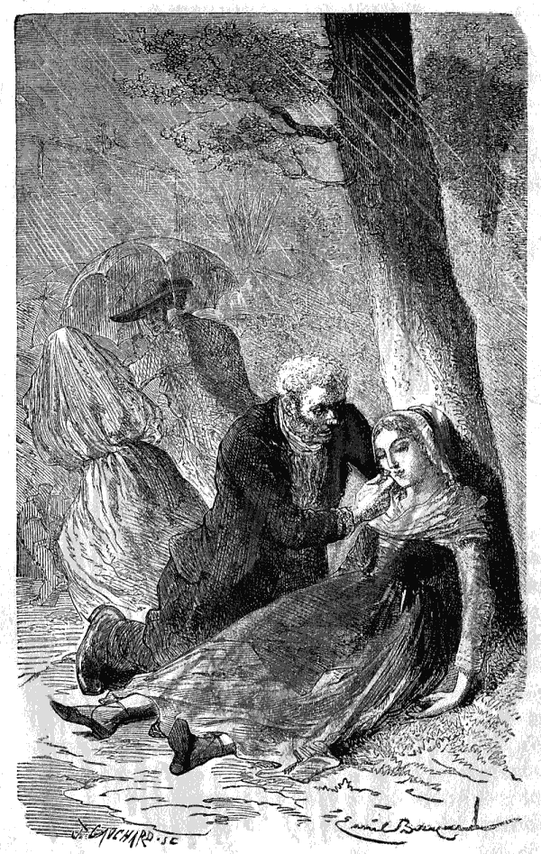
Uma mulher do campo desmaiada. (Pag. 236.)
{238}
{239}
CAPITULO XVIII
Adalberto não era um ingrato.
Haviam passado dez dias que tinham mudado o aspecto a muitas coisas. A velha Praxedes, que desde muito tempo parecia ter apenas um resto de vida, mas um resto muito mau, a velha Praxedes tinha succumbido ao choque, e o seu desapparecimento d'este mundo não deixára saudades. As duas crianças, Natchès e Tilly, das quaes Adalberto tinha narrado as tristes aventuras, tinham sido recolhidas provisoriamente pelos bons moradores da casa branca. Tilly tossia a todo o momento, e todos sentiam por esta rapariguinha uma grande compaixão.{240}
Continuavam as indagações, mas cessaram de perseguir o Hercules; a boa Gella, transportada da prisão para o hospicio, estava n'uma cama muito aceiada, rodeada de cuidados, de que a sua ferida carecia. A sua expressão era serena; sabia já que a fuga do pequeno tinha sido um dom da Providencia. Conhecia e explicava a si propria o encadeamento de successos que tinham preparado a libertação de Adalberto; e, tranquilla do futuro, já não dizia: elles enganaram-me!
Mas o que se havia passado em Valneige? O pae não tinha partido apressadamente logo que recebera a carta do senhor Deschamps? Não.
A mãe não tinha escripto, para mostrar pelo menos o seu reconhecimento? Não.
Comtudo havia-se recebido uma resposta de Valneige, mas era de Camilla e redigida nestes termos:
«Senhor.
«Escrevo da parte de meu pae, doente ha um mez e reduzido pela febre a uma extrema fraqueza. A sua carta ha de cural-o de certo, porque o seu mal é o pezar que o opprime desde que perdemos o meu manosinho.
«A mamã teria partido immediatamente se estivesse aqui, mas um negocio muito grave obrigou deixar meu pae para emprehender uma longa viagem, acompanhada por um dos nossos criados. Escrevi-lhe esta manhã, e{241} mandei com a minha a sua carta, que lhe explicará tudo. Pobre mãe, como ella vai ser feliz depois de ter chorado tantas lagrimas! Em poucos dias ella irá a sua casa, e póde crer que terá restituido a vida a meu pae, a alegria a minha querida mamã, e a felicidade a uma familia toda.
«Meu pae encarrega-me de lhe dizer que meu irmão falla-lhe na sua carta de uma rapariga chamada Gella, que prenderam, e que foi sempre muito boa para com elle, e que nós não desejamos perseguil-a, visto ella não lhe ter feito mal algum, mas ao contrario ter concorrido para suavisar a triste sorte de meu irmão. Por isso meu pae deseja que se não castigue esta rapariga, e que a mandem para o hospital se estiver doente.
«Um dos nossos amigos, magistrado residente perto d'aqui, escreveu hoje mesmo ás authoridades conforme meu pae lhe disse para pedir que não continuasse o processo que diz respeito a Gella. Queira exprimir á senhora Deschamps o que nós quizeramos dizer-lhe de viva voz, e agradecer-lhe os cuidados maternaes, que fizeram esquecer a Adalberto o que elle soffreu entre aquella má gente. Aceite os protestos de profundo respeito de
«Camilla de Valneige.»
Dentro do mesmo sobrescripto havia um bilhete fechado para o pequeno.{242}
«Meu queridinho.
«Abraço-te muito, muito. A mamã partiu, ha oito dias, vestida de camponeza, acompanhada pelo fiel Gervasio. Tem tenção de ir a todas as feiras indicadas por... A nossa querida mãe estava de certo alli ante-hontem; mas de longe e no meio da multidão não te viu ou não te conheceu.
«O papá está bastante doente; comtudo começa a melhorar desde hontem. Oh! se tu o visses? Pediu-me vinte vezes a carta do senhor Deschamps na qual tu escreveste uma linha e o teu nome; lia sempre esta linha e chorava, como a mamã choraria se estivesse aqui.
«Não te atormentes, tudo se ha de arranjar. Não se fará mal a ninguem, e cuidar-se-ha em fazer bem á boa da rapariga. Mando-te vinte, quarenta beijos! Vou escrever a Eugenio e Frederico que estão no collegio. A nossa velha Rosinha está doida de contente; todos te querem muito e desejam vêr-te. Oh! que felicidade! quando estiveres ao pé de mim, no nosso Valneige, no meio de todos nós.
«Tua irmã
«Camilla».
Adalberto ficou contentissimo ao ler esta carta; mas teve o cuidado de não o deixar perceber. Não se devia saber que sua mãe,{243} disfarçada em camponeza o procurava nas feiras, e segundo as indicações d'alguem. Teria sido trahir o segredo de Gella e faltar á palavra d'honra pedida e dada; ora é impossivel faltar á sua palavra de honra sem se deshonrar. O pequeno deu prova d'uma grande prudencia, e aquelles que o rodeavam pensaram que um sentimento generoso, sem ser promessa alguma, fazia a familia de Valneige perdoar, por amor de Gella, tão boa rapariga e tanto para lamentar como filha d'um salteador.
Como se póde imaginar, aquelles sentimentos generosos, dos quaes não conheciam o verdadeiro motivo, causaram um certo espanto. A tia Tourtebonne esteve quasi a zangar-se. O senhor Deschamps assegurava que não teria levado tão longe as attenções, e que ao mesmo tempo que protegia Gella, como ella merecia ser protegida, teria feito perseguir seu pae até á fronteira; Julião accrescentava até ao fim do mundo.
A senhora Deschamps tomava facilmente o seu partido, e não pensava senão em divertir a criança, em pentear os cabellos de que a sua mamã tanto gostava, em fazer preparar as comidas que preferia, como bom caldo, boas costelletas, e tudo quanto podia fortifical-o. Conversava muitas vezes com elle, e fazia-lhe ler em voz alta historiasinhas, nas quaes uma moral muito pura se disfarçava sob os gracejos infantis.{244} Emfim era uma mãe a proteger o filho de outra mãe!
Sophia só dava attenção a uma coisa; a criança estava pallida e magra e ella queria tornal-a corada e gorda; e persuadida de que a arte culinaria é para isto um grande medico, inventava uns guisadinhos muito bons para Adalberto, afim de que elle comesse com mais appetite e engordasse mais depressa. Como só havia tres ou quatro dias para esta grande empreza, fazia-o comer muito, temperava bastante os molhos e offerecia-lhe entre as refeições uma meia duzia de bons petiscos.
Adalberto, privado de tudo desde muito tempo, foi sensivel á tentação, e, seguindo as insinuações de Sophia, comeu pouco mais ou menos todo o dia, para acabar de esquecer os nojentos caldos da casa do saltimbanco.
Comtudo lembrou-se das bellas e boas tradições de Valneige; «uma criança bem educada, tinham-lhe dito cem vezes, não deve nunca comer fóra d'horas; é golodice, torna o homem material, quer dizer, favorece n'elle os instinctos do animal.»
Por isso, no terceiro dia, Adalberto disse á senhora Juliana, que lhe agradecia as suas attenções, mas que tendo comido muito bem desde que estava na casa branca, não se lembrava já das sopas da velha Praxedes, e que não queria mais do que quatro comidas ao dia como em casa da sua mamã.{245}
—Mas a sua mamã não está cá.
—Não importa; comer sem necessidade fóra d'horas seria desobedecer-lhe, e nunca mais torno a desobedecer aos meus paes.
Sophia concordou que o querido pequeno era muito rasoavel, e mudou de systema. Comtudo viu com verdadeira alegria e alguma vaidade, que o pequeno ia engordando, que os seus olhos se animavam, e que tinha melhor côr.
O que a felicidade e a liberdade tinham feito em grande parte, attribuia-o Sophia só aos seus manjares; e d'este modo todos ficaram contentes.
Havia seis dias que Adalberto vivia debaixo d'este tecto tão affectuosamente hospitaleiro, quando uma senhora d'um aspecto grave e distincto, seguida por um criado, bateu á porta da casa branca. Julião abriu, mas antes de ter tido tempo de lhe dirigir a palavra, correu ella para a criança, que brincava no pateo com Tom, e apertou-a estreitamente nos seus braços maternaes. Toda a gente accudiu. Foi grande a commoção. O proprio senhor Deschamps perturbou-se, e Julião disse baixinho a Gervasio, que chorava d'alegria:
—Palavra, que até estou a tremer! Faz mais impressão do que o attaque de Sebastopol!
Depois d'este primeiro instante de surpreza entraram na sala, e, por um rasgo de sensibilidade, a senhora Deschamps disse a seu marido:{246}
—Deixemol-a só com elle.
Ambos sahiram da sala e fecharam a porta.
Foi então que a senhora de Valneige comprehendeu o grau da sua felicidade.
Não fallava, mas olhava para seu filho, como se quizesse ler na sua alma. Parecia-lhe, pobre senhora! tornar a tomar posse d'este pequeno ser, que Deus lhe tinha dado. Pegava-lhe nas mãos, que apertava nas suas, como para affirmar os seus direitos, e restabelecer esta dôce cadêa, que nos impõe os affectos do coração. Oh! que de lagrimas que cahiam dos seus olhos! Seu filho estava alli e adorava-a!
A vida tornava a ter os seus encantos. A senhora de Valneige já se não sentia infeliz.
A presença de Adalberto ia curar seu marido, que só soffria pela sua auzencia. Oh! quantas alegrias juntas! Estava maravilhada, pensativa, commovida... Foi o momento que o bom coração de Sophia escolheu para offerecer uma bella omelette de dois ovos frescos, ou biscoitos, ou vinho com assucar, ou qualquer coisa, emfim! Sophia só receiava uma coisa nas grandes agitações da alma; era vêr a sua gente morrer de fraqueza. A senhora de Valneige, como é facil de suppor, não tinha a menor vontade de comer uma omelette; recusou-a, pois, o mais graciosamente possivel, e, despertada pelo offerecimento de Sophia do seu extase maternal, perguntou onde estava a senhora Deschamps.{247}
Esta desceu do seu quarto em quanto a cozinheira, para se consolar do que acabavam de recusar-lhe, offerecia um copo de vinho ao bom e fiel Gervasio. N'isto não fazia mais do que seguir os costumes da casa. A senhora Deschamps não podia receber qualquer pessoa sem lhe offerecer, como nossos paes, o pão e o vinho da hospitalidade. Comprehendia, porém, demasiadamente as sensações delicadas, para não as confundir com uma omelette ou qualquer outra cousa. É inutil explicar o genero de relações, que se estabeleceu entre as duas mães. Parecia que se conheciam ha muito. É porque, effectivamente, as almas nobres reconhecem-se mutuamente, e acham-se ligadas umas ás outras sem embargo de distancias.
A senhora de Valneige fallava á sua nova amiga essa lingoagem do coração, que só elle comprehende, e a senhora Deschamps respondia com a suave liberdade, que nasce d'uma sympathia subita.
Para ella não era a desconhecida mais do que a mãe da criança perdida, da criança que, durante seis dias, tinha achado sob este tecto o que esta idade exige: cuidados, brinquedos e ternura.
Quando o senhor Deschamps veiu, com a maior delicadesa, juntar-se ao trio, a conversação tornou-se mais positiva. Fallou-se do passado e do futuro, porque as duas mães só tinham visto o presente. Começaram então{248} as perguntas; tres ou quatro para uma resposta.
A castellã informou-se de todos aquelles, que tinham contribuido para salvar seu filho. Nomearam-lhe a tia Tourtebonne, Josephina e outros. Tudo se disse e tornou a dizer; a mãe estava insaciavel, fazia repetir tudo outra vez. Que de lagrimas a fizeram derramar aquellas vinte e quatro horas, passadas no subterraneo, entre a vida e a morte! Quiz descer áquelle sitio, que por pouco não tinha sido um tumulo; viram-na ler com horror as palavras escriptas na parede. Á noite mostrou desejo de lá descer outra vez, e alli, só, no subterraneo com o seu filhinho Adalberto, collocou-se, por uma d'estas ingenuidades de que o coração é capaz em todas as idades, porque nunca envelhece, de maneira que podesse vêr a linda estrella, que tinha consolado o pequeno, e a que elle chamara Adilia.
—Mamã, querida mamã, dizia o rapazinho beijando as queridas mãos de sua mãe, é preciso procural-a no céo para que o papá a conheça e tambem goste d'ella.
—Sim, meu filho, respondia gravemente a senhora de Valneige, teu pae ha de amal-a. Nem elle nem eu esquecemos nunca o que foi consolador para ti, o que te fez bem.
E, como a terna mãe olhava para seu filho com um amor inexplicavel, a criança, por uma delicada inquietação, perguntou timidamente:{249}
—O papá já não está zangado?
—Zangado porque?
—Por eu ter desobedecido. Não me quer mal por isso?
—Quem te ha de querer mal, meu pobre filho? Não foste tu bem castigado? Teu pae espera-te para melhorar. Ama-te muito, isso sim.
Então Adalberto lançou-se nos braços que sua mamã lhe estendia, e, submisso para sempre, á força de soffrimento, fez este juramento:
—Prometto que nunca mais torno a desobedecer.
A mãe e a criança cheios de felicidade e de ternura, ficaram alli, em pé n'aquella adêga, e achavam-se bem. O silencio, a escuridão, tudo os isolava; sem darem por isso ficaram immoveis, porque ninguem queria dizer primeiro: «Partamos».
O rapasinho, commovido pela ternura da mãe, balbuciou baixinho, como se aquella solidão ainda não fosse bastante para ouvir um segredo:
—E Gella, mamã, Gella que me quiz salvar?
—Irei vel-a ao hospital.
—Oh! que felicidade!
A hora ia adiantada. Na casa branca não se recolhiam tarde. A pendula da sala deu horas; a senhora de Valneige contou nove pancadas e estremeceu, ouvindo aquella bulha,{250} que Adalberto tinha ouvido durante a sua grande agonia. Subiram, e bem depressa cada um, com um castiçal na mão, se dirigiu para o seu quarto.
A senhora de Valneige foi conduzida, pela dona da casa, para o quarto dos hospedes, quarto pequeno, mas aceiado, commodo, agazalhado, como são os ninhos que a amisade prepara. Notou com commoção que tinham mudado para aquelle quarto o leito-canapé. A senhora Deschamps, delicada em tudo, quiz que a mãe visse o filho dormir.
No dia seguinte a senhora de Valneige, não sem excitar alguma curiosidade, perguntou qual era o caminho do hospital, dizendo que queria vêr aquella boa rapariga, que tantas vezes tinha consolado Adalberto. Ensinaram-lh'o e partiu só com seu filho. Vendo-a, Gella sentiu-se esmagada pela sua miseria, pela sua desgraça, pelo crime de seu pae. O seu lindo rosto, emmoldurado pelos seus cabellos pretos em desalinho, revelava assim a humilhação da sua alma inculta e como que abandonada.
A criança, cheia de confiança, abraçou-a como a unica amiga que tinha tido sobre a terra durante o seu duro exilio; e a fidalga pegou-lhe nas mãos para fazer esquecer distancias, e pagar na mesma moeda a bondade de seu coração. Depois sentou-se á cabeceira do leito, e fallou muito tempo baixinho; a{251} rapariga respondia ainda mais baixo, e, no fim da conversa, Adalberto apenas poude ouvir estas palavras, que os soluços entrecortavam:
—Não, minha senhora, eu não sou digna de tantas bondades! Dar-me trabalho em Valneige! De vestir e de comer debaixo do vosso tecto! E vêr todos os dias Adalberto! Oh! seria muita honra para mim! Meu pae não tem outra pessoa no mundo para o tratar se estiver doente, e dar-lhe pão se lhe faltar; elle que já começa a estar velho.
Meu irmão não ficará com elle, porque só a força é que o prende; ha de então ficar sem ninguem? Deixe-me na minha miseria, minha senhora, trabalharei, não como d'antes, porque o medico diz que eu fico côxa; mas estou costumada a coser, e não me faltará boa vontade. Irei encontrar meu pae; sei onde o posso achar; tem muitas culpas, é verdade, para comvosco, para com todos e mesmo para commigo; mas emfim, que lhe hei de eu fazer, minha senhora, é meu pae!
A senhora de Valneige, admirada, dizia comsigo mais uma vez: «Nunca desprezemos pessoa alguma; por toda a parte se encontram boas almas.»
Fallou-lhe, e disse-lhe o que o pequeno Adalberto não tinha podido dizer-lhe sobre a alma e o céo. Tudo se tornava possivel n'estes dias de reclusão absoluta. Gella ficaria por muito tempo no hospital; o esmoller ia instruil-a,{252} e alli, n'aquella caminha branca, que para ella era o berço de uma nova existencia, faria a sua primeira communhão, e unir-se-hia, pobre rapariga das ruas, ao Deus de que a criança tinha dito: «Elle conhece todos os nomes e todas as pessoas.»
Oh! como ella seria recompensada dos seus esforços, e como se sentia bem abençoada, quando a senhora de Valneige, pondo a mão sobre a testa da doente, que abrazava, lhe disse:
—Sê, pois, o anjo da guarda de teu pae; eu serei para vossês toda a minha vida a imagem da Providencia. Em toda a parte onde estiveres, minha filha, lembra-te de mim; em qualquer afflicção que te aches, dirige-te a mim.
Amo-te e abençoo-te.
Gella seguiu com a vista a mãe e o filho, quando ambos a deixaram, e quando Adalberto se voltou para a vêr ainda, disse-lhe ella, com o coração cheio de reconhecimento:
—Obrigada pelo bem que me fizeste.{253}
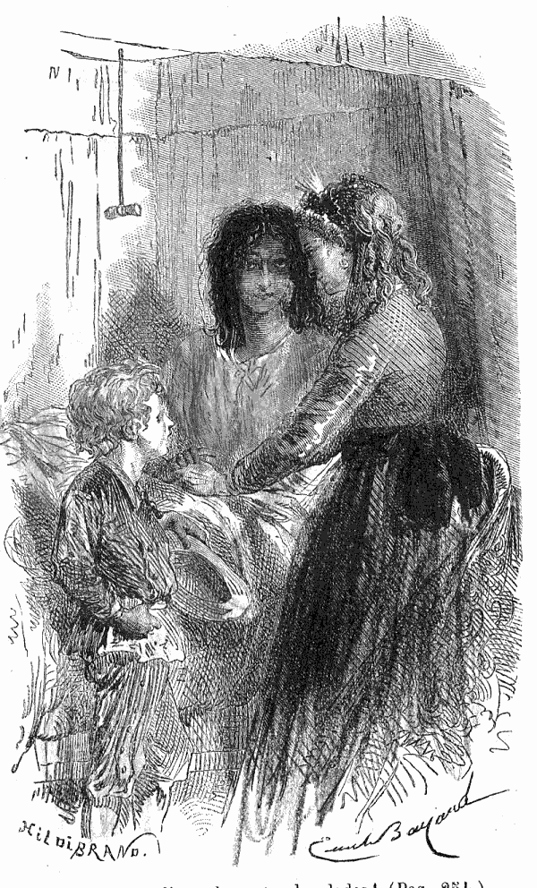
Eu não sou digna de tantas bondades! (Pag. 251.)
{254}
{255}
CAPITULO XIX
Adalberto era obediente.
Nunca se viu jantar mais alegre! Estavam quinze á meza. Todos conversavam todos riam; que animação! que contentamento! Eugenio e Frederico tinham vindo passar dois dias em Valneige, por grande favor, em consequencia do feliz acontecimento que trouxera comsigo o socego, a saude e a alegria.
A velha Rosinha dizia que o seu querido loirinho tinha levado tudo isto nas algibeiras, mas, que apenas apparecêra, havia banido todo o mal e todos os aborrecimentos.
Effectivamente, o senhor de Valneige não tinha nem febre nem insomnias; estava pallido{256} e fraco, mas seu filho dava-lhe pouco a pouco forças e vida. Aconselhavam-lhe viajar e já tinham começado os preparativos da partida. Entretanto os amigos antigos e os jovens camaradas divertiam os espiritos e favoreciam as expansões.
Christiano e seus irmãos lembravam-se d'aquelle jantar, em que Adalberto teria sido o decimo quarto, e comparavam a alegria presente á inquietação que então pesava sobre todos.
Sim, Adalberto teria sido o decimo quarto; mas agora estavam quinze á meza.
Ao pé de Camilla estava uma criança tão bonita como abatida, cujo olhar doce e meigo dizia ainda, nos intervallos d'uma tosse fortissima:
—É talvez a morte que vem, e depois o céo.
Era Tilly, a amiguinha de Adalberto.
A senhora de Valneige tinha ouvido as confissões de Gella; o que esta rapariga não teria dito á justiça tinha-o dito á amizade. Tilly era realmente uma criança roubada, e roubada desde muito nova, n'um passeio publico. Não tinham nenhum conhecimento da sua familia, estava perdida para sempre, e este sempre não podia durar muito. O peito delicado d'esta amavel criancinha tinha sido desprezado. Os medicos consultados tinham dito: «Sem esperança!»
E o senhor e a senhora de Valneige tinham respondido: «Poupemos-lhe a solidão! as agonias! a frieza!»{257}
A paz, rostos amigos, todos os consoladores thesouros da esperança christã, eis o que queriam dar á doentinha em troca da sua compadecida affeição pelo seu irmão d'infortunio, a quem ella tinha dito no dia do seu captiveiro:
—Queres tu a minha sopa? Eu quando não como bastante não me importa.
Quanto ao bom e gordo Natchès, roubado assim como Tilly, tudo n'elle, tanto no physico como no moral, affirmava a baixa origem que lhe attribuia Gella. Tinha ficado em casa do senhor Deschamps, não se entretendo senão na cosinha, extasiando-se diante d'uma caçarola ou d'um petisco. Riam da sua toleima, que o deixava desempenhar soffrivelmente certos trabalhos puramente materiaes. A sua docilidade servil fazia d'elle um instrumento commodo entre as mãos de Julião e de Sophia; foi-lhes dado por ajudante, acarretando agua, descascando legumes, varrendo o pateo, regando, penteando o cão. Fazia geralmente as coisas mais aborrecidas, dando-se por satisfeitissimo, entremeando o trabalho com algumas cambalhotas, e narrando as historias mais tolas que começavam sempre assim:
—Quando eu era palhaço...
Achava-se feliz. Que precisava este rapaz? Uma cama, de comer e bondade; achou tudo isso na casa branca, e recebia mais, a luz sufficiente aos espiritos grosseiros para servirem{258} o Senhor justo, que não pede contas ao homem, senão do pouco que lhe confiou.
Não tinham esquecido ninguem, mas era preciso um certo tempo para estudar a posição de cada um, e testemunhar o seu reconhecimento da maneira mais util.
Emfim o dia da partida chegou. Segundo o desejo de todos, encaminhando-se para o Rheno, deviam parar na casa branca e descansar na companhia dos amaveis hospedeiros de Adalberto.
Esta paragem encantava toda a gente. Combinou-se que os criados, que seguiam a familia, partiriam dois dias mais tarde, e aconselharam Rosinha a poupar-se ás fadigas d'uma grande viagem no começo do inverno; fez ouvidos de mercador, e, ainda que a volta de Adalberto fosse o momento escolhido por ella para ir á sua terra, achou que não podia ir sem o seu loirinho. Annuiram aos seus desejos, e começou então a fazer os seus arranjos. Não eram muitos; uma pequena mala, e tres toucas n'uma chapeleira velha.
—Não te esqueças do meu presente, gritava-lhe Adalberto, saltando de roda d'ella.
—Não tem perigo! Quero-lhe como ás meninas dos meus olhos; por isso o dependurei ao meu pescoço.
—Ao teu pescoço? Mostra-m'o...
A criança viu uma caixinha segura por uma fita ao pescoço de Rosinha; esta caixa continha{259} o botão e a nódoa de tinta que tinha trazido do exilio! Adalberto abraçou de todo o coração a sua velha governante.
Partiram alegremente todos cinco, porque Tilly ia tambem com os seus protectores respirar um ar benefico. Passadas algumas horas, pararam para jantar e esqueceram-se do tempo, como muitas vezes acontece.
A demora tinha sido grande; houve inquietação e incerteza; o senhor de Valneige, não achando o seu wagon, disse a seu filho:
—Subamos seja para onde for, e juntar-nos-hemos na proxima estação.
Adalberto subiu distrahido, ao acaso, e, por estonteamento, achou-se na terceira classe. Gritavam: vai partir! vai partir! Fechavam-se as portinhollas—iam partir. O pae lançou-se precipitadamente na carruagem onde seu filho estava, dizendo em voz baixa:
—Estamos aqui muito mal; mas é só por um quarto d'hora.
No fundo do wagon havia viajantes que pareciam fatigados; um, entre outros, dormitava. A sua colossal estatura, as suas feições accentuadas chamavam sobre elle a attenção.
Adalberto reparou n'elle... O senhor de Valneige viu o seu filho empallidecer.
—Que tens tu, perguntou-lhe.
—Nada.
—Sentes-te mal?
—Não, papá.{260}
O pae inquieto, fez em voz baixa algumas perguntas, e seu filho respondeu-lhe transido de medo:
—É o homem!
Houve um momento de horror na alma do senhor de Valneige.
Estava ali diante do carrasco do seu filho. O acaso entregava-o á justa vingança d'um pae, que podia fazel-o prender, julgar, condemnar; tinha testemunhas, provas: o botão, a nódoa de tinta, a fita doirada, as palavras escritas na adêga, a deposição de Baptista e da vendedora; Julião, Sophia, Josephina tudo lhe vinha á memoria, tudo o levava a proseguir; mas havia tambem na sua carteira uma carta da pobre Gella, que se fiava na sua palavra. É verdade que as suas previsões não se tinham realisado; mas tinha dado indicações em troca D'uma promessa. O senhor de Valneige olhou para este homem, e, tremendo sob o peso d'esta promessa sagrada, eterna, disse a Adalberto:
—Ó meu filho! lembra-te sempre, que a palavra de honra é um juramento, que um homem não pode violar debaixo de nenhum pretexto, e em nenhuma circumstancia.
Ao mesmo tempo o senhor de Valneige ainda convalescente fechou os olhos; chegou a sua vez de empallidecer; tornaram-se-lhe os beiços brancos, e Adalberto soltou um grito. O desmaio durou só um instante; as companheiras, de viagem abriram as vidraças para dar ar{261} ao doente. Todos olharam para elle e para seu filho.
Esta grande emoção passou. Na primeira estação o pae e o filho desceram.
O homem de ferro desceu tambem, e não tornou a subir.
Depois de se fallar detidamente d'este sombrio incidente no wagon onde ia a familia, chegaram á casa branca. Tudo em azafama! Faziam as camas, punham a meza etc. Não faltava movimento, nem alegria, e na cosinha mais uma fornalha acêza, porque Sophia não descansava.
Os novos amigos fizeram um conhecimento cheio de benevolencia e de amizade.
Adalberto saltou ao pescoço da senhora Deschamps, que o abraçou como a um dos seus netos.
Conversaram, passearam, descansaram, repetiram vinte vezes a mesma idéa, variando os termos; a idéa de cada um era: estou bem contente!
Chegou a hora do jantar, comeram como se fossem quinze, apezar de serem só sete; depois, Adalberto e Tilly brincaram com o bom Natchès, que longe de soffrer com a sua inferioridade, lhes dizia com um ar de perfeito contentamento:
—Quando eu era palhaço não me julgava infeliz, mas agora vejo que o era muito! Ha só uma coisa de que eu tenho saudades, é de fazer{262} habilidades nas feiras. Lá isso era muito divertido, quando eu era palhaço!
Deitaram-se; cama aqui, cama acolá. A boa senhora Deschamps tinha achado meio de arranjar tudo; estavam pouco mais ou menos como os israelitas debaixo das tendas; mas que doce tenda que é a da amizade! Dormiram perfeitamente e acordaram bem dispostos.
No dia seguinte a senhora de Valneige quiz ir vêr Gella ao hospital, e levou comsigo Adalberto. Oh! Providencia! A pobre rapariga ia d'ali a uma hora fazer a sua primeira communhão. A fidalga teve a felicidade de estar ali, á cabeceira do leito, como uma mãe; o querido pequeno ajoelhou, e Gella, esclarecida, purificada, conheceu emfim o Deus de Adalberto, o Deus de quem está escripto que ama as suas creaturas.
A doente estava quasi em estado de emprehender viagem e de ir reunir-se a seu pae. No momento de lhe ir dizer adeus, Adalberto contou-lhe a scena do wagon. Fez-se como um clarão no espirito de Gella e olhou para a criança.
—Pequeno, disse ella baixinho, como d'antes, dirás a teu pae que acredito agora haver honra, e para lhe pagar rezarei todos os dias por ti; não posso dar-te mais nada, mas dou-te o que tenho.
Como percebeu que a senhora de Valneige a tinha ouvido, teve vergonha de tratar por tu o pequeno, e ajuntou:{263}
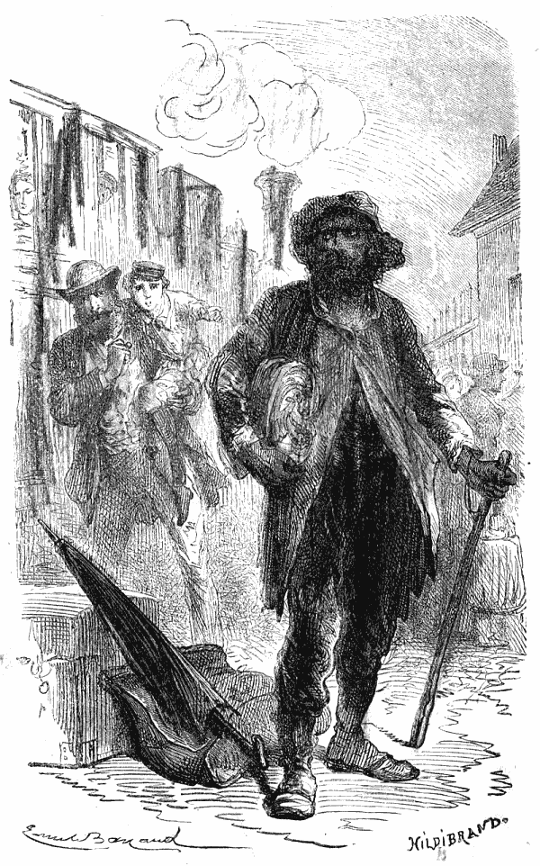
O homem de ferro desceu tambem. (Pag. 261.)
{264}
{265}
—Perdoe-me, senhor Adalberto, se ouso ainda dizer-lhe tu; é a ultima vez! Não nos veremos mais sobre a terra...
E Gella desatou a chorar. A senhora de Valneige respondeu:
—Não chores, minha filha, diz-me o coração que nos havemos de tornar a vêr; sê honrada, sê christã e Deus será comtigo. Não sei o que vai ser de ti; mas, visto que a tua enfermidade não te deixa d'aqui por diante seguir uma vida de saltimbanco, quero ajudar-te a trabalhar ou como costureira ou fundando-te um pequeno negocio. Acceita este dinheiro, que pagará a tua viagem e te permittirá começar qualquer coisa e esperar o ganho.
Ao mesmo tempo entregou a Gella um bilhete de quinhentos francos. A doente via este bilhete na sua mão e não podia acredital-o.
—Senhora, disse ella, confunde-me com tanta bondade!... Mas eu não posso acceitar este dinheiro. É verdade que esta somma me salvaria, que eu ganharia facilmente a minha vida em Lyão, ao pé de minha tia, e que meu pae, vendo-me começar um pequeno commercio, renunciaria, talvez, ao seu modo de vida, que presentemente o cansa; mas que lhe hei de eu dizer, quando elle me perguntar d'onde me vieram estes quinhentos francos? É preciso que elle não desconfie de cousa alguma.
—Responde-lhe que uma senhora te viu no hospital, se compadeceu da tua desgraça e{266} que te quer ajudar na tua laboriosa existencia.
—Mas se quizer saber o seu nome?
—Dize-lhe que me chamo... uma senhora de caridade.
—Oh! sim. A caridade em pessoa. Eu não sabia que n'este mundo se podia achar tanta bondade. Desde a minha infancia só conheci o mal. Agora, minha senhora, creio bem na caridade.
Gella beijou as mãos da sua protectora, e levantou para ella um olhar de reconhecimento.
De repente, por um sentimento profundo de gratidão e de piedade, a senhora de Valneige disse-lhe:
—Agradeço-te, Gella, o não teres nunca concorrido para a infelicidade de meu filho, e teres querido entregar-m'o. É preciso que haja entre nós uma ligação; vou dar-t'a, has de guardal-a toda a vida.
Cortou então um dos lindos e loiros caracoes de Adalberto, e deu-o áquella infeliz, que respondeu humildemente:
—Eu não sou digna d'elle! Oh! obrigada, obrigada, senhora!
Depois ficou como desfallecida pela surpreza e pelo enternecimento, e tendo chegado a hora da separação Gella, só com as suas recordações, escutou, com o coração despedaçado, os ultimos passos do pequeno Adalberto....
A senhora de Valneige depois de ter cumprido{267} esta piedosa digressão, voltou para a casa branca, e seu marido approvou tudo quanto ella tinha feito e dito.
Durante o dia passearam pelos arredores. O verdadeiro motivo d'este passeio foi ver as pessoas, que tinham tomado uma parte tão activa em libertar Adalberto.
Acharam na sua pequena casa, e sob os olhos de sua avó, a lindinha Josephina, cuja intrepidez tinha sido directamente a felicidade de todos. Recebeu um beijo da feliz mãe, e depois, como o senhor de Valneige tinha preparado todas as coisas, aconteceu que a avó, que não tinha outra herdeira senão Josephina, se achou proprietaria da sua residencia, que até ali tinha alugado.
Isto fez na terra um tão grande effeito, que desde então começaram a comprimental-a com toda a consideração, e o grande Lucas prometeu fazer dansar a pequena n'uma festa que ia haver, apezar d'ella ainda não ter tamanho para isso, e de ninguem olhar para ella como se não fosse já criança.
O socegado Baptista, que estas emoções espertaram um pouco, ficou relacionado com os habitantes de Valneige, e combinou-se que faria remessas de queijo e harenques, para o palacio, para a villa e para a quinta. Deram-lhe, além d'isto, um elixir admiravel para calmar as dôres de dentes, a que era sujeito, infelizmente!{268}
Quanto á tia Tourtebonne foi preciso desistir de a achar em casa. Chamaram-na á casa branca, e os felizes paes de Adalberto, assegurando á sua velhice uma pequena quantia, dispensaram-na de rodar mais tempo o seu carrinho.
O seu reconhecimento exprimiu-se calorosamente; entremeava estas expressões de vivas e fortes censuras dirigidas a si mesma, porque não podia perdoar o ter impensadamente dito ao conductor: «Partamos! partamos!» quando uma camponeza pallida e tremula tinha gritado: «És tu?»
Escusado é dizer que era realmente a senhora de Valneige, procurando mysteriosamente seu filho, e misturando-se na turba, graças ao seu disfarce. A boa da mercadora foi-se embora dizendo:
—Fui eu que demorei a sua felicidade, minha senhora, que pena!
Um momento depois, pensando na sua fortuna, ficou radiante e disse a Sophia:
—Espero que me hei de divertir, e passar o tempo sem trabalhar.
Que succedeu? A boa da mulher divertiu-se, é verdade; mas o habito tornara-se para ella uma segunda natureza, e reconheceu que o maior de todos os seus prazeres era o de rodar o seu carrinho. Não suppunha isto, mas comprehendeu-o pelo aborrecimento profundo que se apoderou d'ella, quando interrompeu o seu{269} activo viver. Por isso, como mulher sensata que era, tornou a ser vendedora e tudo se passou o melhor possivel. Evitava sómente a chuva, a neve e as ventanias; e, em vez de dar por esmola maçãs meias podres, dava das boas e das bonitas, o que para ella era um gozo.
D'este modo o resgate de Adalberto foi uma felicidade para toda a gente. Não deixaram a casa branca sem terem recompensado largamente os criados. Não sabiam o que haviam de dar a Natchès, que só apreciava o que comia; teve um grande cartuxo de bôlos.
A familia de Valneige, depois d'alguns mezes de viagem, passou o inverno no meiodia, e voltou na primavera para esperar os amigos em Valneige, porque tinham promettido que aquellas doces relações se estreitariam todos os annos por algumas semanas que passariam juntos. Que de vezes as duas mães se recordaram uma com a outra da época de miseria e de tristeza, que tinha atravessado a adorada criança! Que de vezes, como a senhora Deschamps tinha previsto, a sua amiga pegou na fita doirada, que guardava como testemunha dos dias de adversidade!
Adalberto cresceu na obediencia.
Hoje, que é um homem, obedece ainda; obedece ás ordens de Deus, ás leis do seu paiz, aos conselhos e aos desejos de seus paes. Um dia, quando for pae de familia, dirá como lhe diziam:{270}
«Obedecei, meus filhos.»
Dizemol-o a todos, jovens leitores. É bom, é util, é necessario obedecer. Possam todos aprendel-o no seio da sua familia, e não, como Adalberto, sob os golpes da desgraça!
FIM.